| 不遇職な俺とポンコツパーティが罠とか作って無双する (一迅社文庫) | |
| 藤谷 ある | |
| (2015) | |

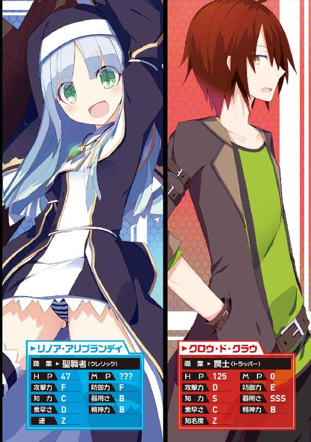
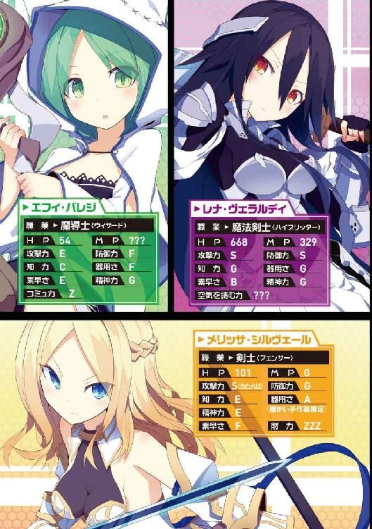
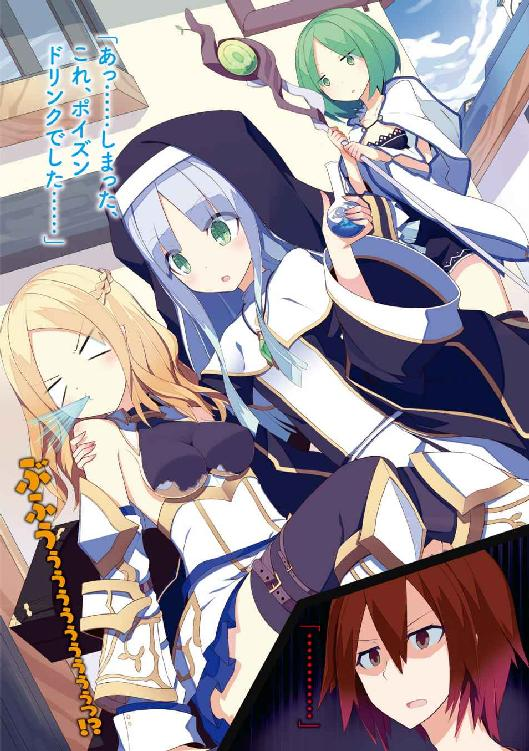
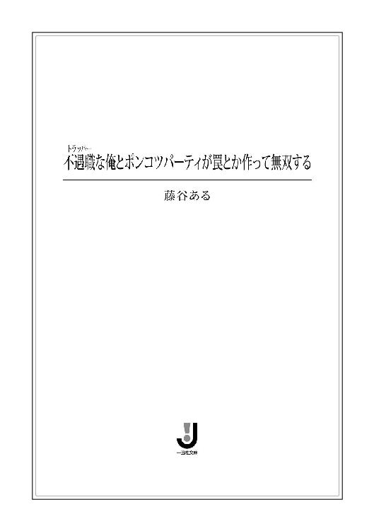
挿画：いちやん
デザイン：ナカムラナナフシ（ムシカゴグラフィクス）
第一章 罠士を世に知らしめよう
【ケース１】リノア・アリプランディの場合
――すっげー、見られてる......。
俺、《クロウ・ド・クラウ》は酒場のカウンター席に座りながらそう感じていた。
ここは冒険者達の互助組合施設である冒険者ギルド。
そこに併設されている交流酒場だ。
酒場といっても朝から開いているし、食事も普通に取れるし、俺のような十七歳の未成年がいても何も言われない。まるで大衆食堂のような場所だった。
で、先程から感じる視線だが斜め前にあるテーブル席から向けられていた。
気付かれないようにそぉーっと目線を上げると、その様子が視界の端に入ってくる。
そこには俺よりもだいぶ年下に見える少女が一人で座っていた。
背中までの綺麗な銀髪と、円らな瞳が印象的な美少女。
彼女は修道服を身に付けていて、頭からはベールを被っている。
その装いから考えられるのは聖職者ではないかということ。
と、そこまでは至って普通。
問題はその神聖なる聖職者のイメージを覆すような〝くたびれ具合〟だった。
どこを通ってきたらそうなるのか、修道服が泥だらけだったのだ。
他に目を引いたのは、大事そうに背負っている巨大な十字架。
彼女の身長よりも大きいそれは、どうやら鞄のようだった。
そんな異様な姿の彼女に近付く冒険者は当然いない。
何者も近付きがたい雰囲気というか、あそこだけ異質な空気が漂っているのだ。
今も彼女は俺のことをじっと凝視している。
しかも、ちょっとでも目が合おうものなら、口角を引き上げて、にんまりとした笑顔を見せてくる。
いや、確かに可愛いんだけど......さ。
あれ、ぜってーヤバい奴だよ......。
近付かないでおこう。
うん、そうだ。
そうしよう。
とりあえず、彼女のことはさておき――
俺が毎日、足繁くこの場所に通っているのは、ただ食事を取りにきているというわけではない。
〝仲間集め〟の為だ。
この交流酒場は冒険者同士が互いに杯を酌み交わしながらコミュニケーションを図ったり、情報交換をしたり、新たな冒険に向けてのパーティ探しの場となっている。
国同士の争いが鳴りを潜め、冒険者が中心の世の中。
そこではパーティが超重要。
パーティでギルドからのクエスト依頼をこなし報酬を得たり、冒険の旅へと出て様々な宝具を見つけ、一攫千金を狙う。
それが当たり前の世の中だ。
だからこうやって一日、八ウルス（約八時間）程、誘われ待ちをしている。
しかし......
一向に誰も声をかけてこない！
それは俺の職業が誰も知らない超マイナー職だからだ。
その職業の名は――
《罠士》
その名の通り、罠を仕掛けて、人や魔物を翻弄するのが主な特徴。
とても地味な職業だが、剣士や魔導士などと連携を組めば、攻撃のスピードや効力は何倍にも膨れ上がり、仲間の生存率が格段に向上する。パーティにおいては欠かせない存在だ。
......と、俺は自負している。
自負しなきゃ始まらない！
だってみんな、罠士のすごさを全然分かっちゃくれないんだから。
罠士こそ、パーティの要！
罠士こそパーティの常道！
だというのに......。
別に俺だって、ただ待っているだけじゃない。
今日も自分から腕の立ちそうな修道士四人と錬金術士二人、それと呪術士と召喚士二人づつに声をかけている。
でも、こちらが職業を伝えると、
「罠士？？ 何それ？」
と、十人中、九人が同じ反応。
残り一人に至っては、
「え？ ポーカーでもする？？」
と言われる始末。
「トランプじゃねえぇっ！ トラッパーだ、ボケェェェェッ!!」
正直言うと全く誘いがかからないというわけでもない。
今日は筋肉ムキムキのいかにも強そうな拳闘士に声をかけられた。
そして当然、罠士について説明する。
「罠とか作ったり、相手を嵌めたりとか――」
なんて感じで伝えると、こう答える。
「あぁー、盗賊ね」
「盗賊じゃねえぇぇぇ！ 盗っ人と一緒にすんなぁぁぁっ!!」
そのあと彼等は決まってこう言う。
「じゃいらね」
――と。
そんなわけで交渉不成立。
そりゃあ断ってくる奴の気持ちも分からなくもない。
冒険には危険がつきもの。
そんな場面で良く分からない職業の人間に命を任せられるのかって話だ。
俺だって、無理をすればパーティに入り込むことはできると思う。
でもそれをやらないのは、命を張る現場では信頼関係が重要だからだ。
自分を偽って仲間を作ってもろくなことにはならない。
こんな感じで、あっと言う間に一日が終わる。
不遇職とは、まさにこのことだ。
そんな俺とは正反対に、
超人気職がある。
それは〝魔法〟が使える者。
魔法は魔物に対して物理攻撃よりも絶大な効力を発揮するし、一攫千金を狙える古代文明の叡智《方舟の遺産》の捜索にも欠かせない能力だからだ。
中でも強化や回復、蘇生までもがこなせる聖職者は一番人気で、とても重宝されていた。
そう、この冒険者時代の世では、魔法なくしては冒険が成り立たないのだ。
でも魔法が使えない職業の者でもパーティの中心になれる方法はある。
それは魔法が付与された装備を身に付けること。
魔法装備を装着することで、魔力を有する者と遜色なく渡り合えるのだ。
しかし、そんなべらぼうに高価な装備、俺には買えるはずもない。
――というわけで。
俺はなんとかして不遇職から優遇職にのし上がりたかった。
てか、絶対のし上がってやる！
もう陽の当たらない時代は終わりだ。
目指すは、
『罠士、大人気で引っ張りだこ！』
『俺の時代到来！』
それにはまず、罠士のすごさを世に知らしめる必要がある。
冒険やクエストで実績を残し、大きな名声を手にすることだ。
そうなれば周囲は、
「罠士すげぇ！ マジすげぇ！」
「きゃーっ、罠士さん是非、私とパーティ組んで下さい！」
「私の心はあなたの罠に捕らわれてしまいましたっ」
「もう結婚して！」
となるはずだから。
じゃあそれを実現するには......
と考えると、結局振り出しに戻ることになる......。
そう......
パーティだ。
とにかく、ひとまず、何より、すなわち、
パーティが組みたかった。
罠士は仲間がいてこそ、その実力を最大限に発揮し、パーティの力を増大させる。一人で立ち回るには不向きな職業だ。
だからパーティを組まないことには冒険すら始められない。
冒険ができないということは、収入が得られない。
今は狩猟用の罠で野生の《ブートン》を狩り、それをギルドに納めることでなんとか暮らしているが、そいつをいつまでも続けているわけにもいかない。
何もかもが空回りだった。
そんなわけで俺は悩んでいた。
どうしたらパーティが組めるのかと。
これまで通りの方法を続けていても埒が明かないのは確か。
ならば別の何かを見出すしかない。
でも、そんなのが簡単に思い付けば苦労はしないんだよなあ......。
苦悩しながらオレプの実のジュースが入ったカップに手を伸ばすと、先程までのプレッシャーを感じないことに気が付く。
恐る恐る斜め前の席に目を向けると......
......あれ？ いない？
俺のことをずっと見ていた例の彼女の姿が消えていたのだ。
どこへ行ったんだ？
いなくなったら、いなくなったで、逆に気になる矛盾。
そこで店内を見回そうとした矢先だった。
「えー、聖職者、聖職者はいりませんかー？」
「!?」
突如、そんな声が後方で上がったのだ。
すぐに振り返ると、やっぱりというか、案の定、例の彼女が冒険者達が座るテーブルの合間を歩き回っているのが見えた。
両手を口元に当て、結構な大きさで声を張り上げている。
「一パーティに一人、聖職者。組んでて良かった、聖職者。怪我して安心、聖職者。あなたのパーティに是非、聖職者はいかがですかー？」
「......」
まるで聖職者の安売りみたいな様相だった。
周囲の冒険者達もきょとんとしてしまっている。
こんな売り込み方をする奴なんて、そうそういないからな......。
しかし、そこは腐っても一番人気職。
あんな感じでも声をかける冒険者はいるもんだ。
「丁度良かった、今うちのパーティ、回復役が不足してんだ。よかったら俺等の仲間に入ってくれないか？」
一人の剣士と思しき青年が、彼女の前に躍り出てきて声をかける。
当然、聖職者の少女はにこやかに笑って――
「お断りします」
「なんでだよっ！」
思わず俺は、声に出して突っ込んでいた。
彼女の回答があまりにも意味不明だったので......つい。
無論、剣士の青年も呆然としていたし、周囲にいた他の冒険者達も目が点になっていた。
そんな中、聖職者の彼女はとてとてと俺の所までやってきて、更に訳の分からないことを言い出した。
「『なんでだよっ！』は私の台詞ですよ？」
「へ？ それはどういう......」
「私がさっきからずっとアピールしてるっていうのに、なかなか誘ってくれないんですもの」
「はい？？」
言葉通りに受け止めるのなら、視線を送ってきたのも、パーティに入りたいと主張して回ったのも、一連の行動は全て俺からの誘われ待ちの為だったと言っているようだ。
でも――
「なんで俺？」
すると彼女は俺の隣の席に座ってきて、曇りの無い笑顔で見上げてくる。
「よくぞ聞いてくれました！ それはズバリ、一目惚れでしょう！」
「ぶっ!?」
俺は思ってもみなかった答えに吹いてしまった。
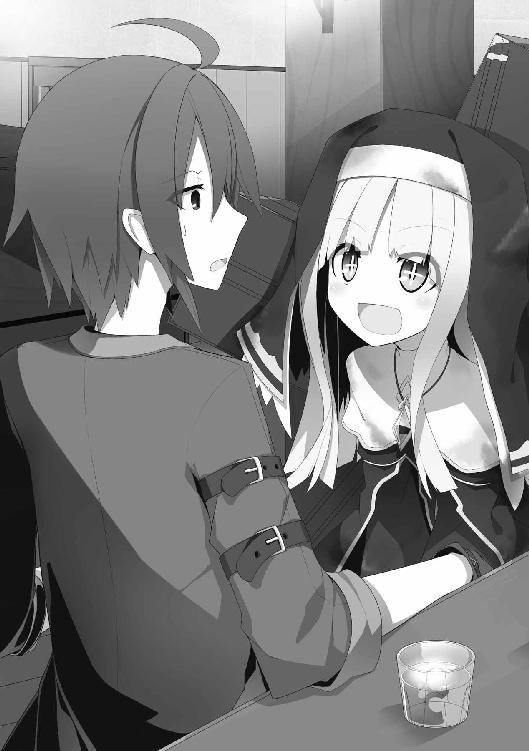
「そ、そんな理由で......？」
「至極真っ当な理由ですよ？」
そこで彼女は水を得た魚のように活き活きとし始める。
「もう酒場に入ってきた時の第一印象でビビビッときました。目と目が合った瞬間から心臓バクバクでしたし、私はこの人と冒険の旅に出る！ その為に生まれてきた！ ってすぐに思いましたもの。そして私は、この人の傍で一生添い遂げるんだなーって......感慨に耽ったわけです」
「なんで冒険から急に一生の話になってんだよ」
「そう感じたのですから仕方ありません」
「......」
「なので熱い視線で私の意思をお伝えしたわけですが、どうやら分かって頂けなかったようで」
「分かるか！」
「その後も、声をかけ易いよう宣伝して回ったわけですが、別の人が釣れてしまいましたし」
「釣れたとか言うな。ちゃんとあの剣士の人にもフォロー入れとけよ。ってか、パーティを組む気があるんなら、そんな面倒なことしてないで普通に誘ってくればいいだろ」
すると彼女は、はにかみながら急にモジモジとし始める。
「でも......やはり告白は殿方の方から......というのが......よいのかなあと......」
「告白の話はしてねえよ。パーティ勧誘の話だろが」
「そうとも言います。この際、どっちでもいいですが」
「......」
「というわけで聖職者はいりませんか？」
「いらない」
「ええええぇぇぇっ!?」
彼女は必要以上に驚いていた。
ヤバい。
最初に感じていた通りだ。
ヤバいのに引っかかっちまった。
さて、どうしたものか......。
カウンターに視線を落として考えていると、不安そうな表情を浮かべた彼女が横からのぞいてくる。
「あのー......聖職者、いりますよね？」
正直に言えば、完全に〝いらない〟という訳ではない。
なにしろ俺は、以前からパーティメンバーを欲していたのだから。
しかも彼女は冒険の旅には必要不可欠な超人気職、聖職者だ。
職業名だけだったら、喉から手が出るほど欲しい人材であることは間違い無い。
だが、メンバー選びは慎重に行わなくては。
前にも言った通り、冒険は常に命の危険と隣り合わせだ。
そんな場面で安心して背中を預けられるのは、こいつなら信頼できると思った人間だけ。
もちろん気持ちも重要だが――
ようは、それ相応の腕前も必要だってことだ。
その腕前を測る為の材料が彼女の外見にいくつか散見できる。
まず目に付くのは彼女が着ている修道服。
聖職者が身に付けているものとしてオーソドックスな形だが、有り得ないくらい泥だらけだ。
どこをどうやってきたらそうなるのか？ というレベル。
その姿で納得いく理由があるとすれば、魔物との戦闘。
俺が今いるこの《ソフロニア王国》の王都《リザ》周辺は、魔物の潜む地域や多くのダンジョンが存在する。そういった中をかいくぐってきたのであれば、そうなる可能性はある。
だが聖職者はある程度、経験を積むと転移魔法が修得できる職業だ。
それを使わずにわざわざ地上を這ってやってきたとなると、彼女の力量はおおよそ察することができる。
ただ一番気になるのは、その汚れをなぜ落とさないのか？ ってことだ。
聖職者ってのは職業上、修道服の清潔さを重んずるものだと思っていたし、俺が今まで見てきた聖職者もみんな小綺麗にしていた印象がある。
それに聖職者には極初歩の魔法で浄化というものがある。これは自身や仲間が毒や麻痺などの状態異常に陥った時に使うと、平常時に戻してくれるというもので、魔法効果の副産物として装備の洗浄も行われる。
浄化は冒険者としての第一歩を踏み出したばかりの聖職者でさえ使える初級魔法だが、なぜ彼女はこれだけ汚れているというのに、その魔法を使わないのか？
考えられるのは、彼女の冒険者としてのレベルが初級以下か、または何らかの理由があってあえて使わないか、ぐらいだ。
そして、彼女の腰に据えられている魔法を媒介する為の杖。
特に珍しい形ではない金属製の杖だったが、やたらと真新しいのが気になった。
あ、それと、もう一つあったな......。
それは――。
そもそも聖職者ですらないんじゃないかってこと。
俺はそのことを踏まえつつ、再び隣の席に目を向ける。
すると彼女は、ウンウン言いながら顎に手を当て、深く思考しているようだった。
そのうちに何か思い付いたのか、不意に顔を上げる。
「そうです！ あれを言い忘れていました」
「？」
「聖職者って超スゴイいんですよ。傷ついたパーティメンバーの体力を回復できちゃったり、死んでしまった人を蘇生したりもできるんです」
「知ってる」
「ですよねー......」
彼女は当たり前のことを述べた後、虚空を見つめ呆然としてしまった。
あれだけ考えておいて、そんな普通のアピールトークだとは思いもしなかった......。
さっきも店内を歩き回りながら同じようなこと言ってたしな。
そんな程度の売り込み文句しか言えないってことは、やはり......こいつは聖職者じゃないんじゃないか？
最近じゃ職業を偽ってパーティに入り込み、油断した隙に金品を強奪するっていう職業詐欺が流行ってるらしいからな。
まさか......こいつも？
うん、ここは今の内にしっかりと確かめておいた方がいいだろう。
「あのさ」
「はい！」
呼ばれただけなのに嬉しかったのか、彼女は笑顔で背筋を伸ばした。
「お前、本当に聖職者か？」
「......へ？」
彼女はきょとんとしていたので、俺は服の汚れの指摘や浄化の魔法のことなどを説明した。
「いっ、いや......魔物とやり合っているうちにこんなになっちゃったってのは本当ですよ？ パーティを組まない単独の聖職者なんてこんなもんですって。魔法については......あのっ......そのっ......なんというかっ......色々と事情がありまして......」
「思いっ切り動揺してるじゃないか。やっぱり......」
「ちっ、違いますよ！ ほら、これ！ ちゃんと見て下さい！」
彼女は慌てて懐から一枚のカードを取り出してきた。
ギルドに登録されている冒険者は携帯が義務付けられている《冒険者免許証》だ。ギルドが発行し、身分証明証としての役割も果たす。
そこにはこう書かれていた。
【名前】《リノア・アリプランディ》
【職業】聖職者
「ね？ 嘘じゃないでしょう？」
彼女は憤慨しながらも、まだちょっと焦っている様子がある。
「まあ、確かに。偽造でもなさそうだしな」
「そんなことしませんよっ！」
リノアは両の頬を膨らませた。
そんな彼女に、俺も形式上、カードをサッと見せる。
しかし、彼女の反応は予想していたよりも薄かった。
罠士という、あまり見慣れないであろう超マイナー職の名を目にしたというのに......。
そこに違和感を覚える。
「というわけで、疑いが晴れたところで改めて聖職者はいかがですか？ というか、一緒にパーティ組みましょうよー」
すぐに当初のノリに戻ったリノアは、またもや勧誘攻勢をかけてくる。
「うーん......」
「うーん......って！ もう悩む所なんてないじゃないですかー」
「いや、もう一つ気になる所があるんだよなー」
俺は言いながら視線を彼女の背中へと向けた。
そこには巨大な十字架が二本の肩ベルトで背負われている。
いかにも重そうなのに大事な物なのか、床に置くことなく終始背負ったままだ。
リノア自身も俺の視線がどこに向けられているのか気付いたようだった。
「それってなんだ？ 随分と大事そうにしているが」
「これはもちろん、聖職者としての信仰の象徴ですよ」
「でも、そんなものを背負って歩いてる聖職者なんて、見たことないんだが」
「当然ですよ。これは私が毎日、お祈りを捧げる為に自分で作成した聖具ですから。他の誰かが持っているはずもありません。まさに私の信仰心の強さを具現化したようなものですね」
彼女は誇らしげに胸を張った。
「ただの鞄だろ」
「どっ、どどどどうしてそれを!?」
リノアは慌てて仰け反った。
「見れば分かるって......」
実際、十字架には遠目からでも留め具のようなものがうかがえたし、合わせ目らしきものもあったので、開いたりするんだろうなーとは思っていた。
「で、中には何が入ってるんだ？」
「えっ!? いや、ただの着替えとか日用品などの旅グッズですよー、あははは......」
「にしてはデカすぎないか？ それに着替え持ってる癖に今はなんで着替えてないんだ？」
俺は彼女の汚れた修道服を見ながら言った。
「はうっ!?」
「それと、神聖な信仰対象であるものに着替えを入れるとかは無いよなー」
「あうあう......」
彼女はまるで魚のように口をパクパクとさせるだけだった。
だがそれも僅かな間だけで、即座に自分を取り戻す。
「べっ、別にいいじゃないですか、鞄くらい自分の好きな形でも。中身はプライベートなものですから女の子にそんなこと聞かないで下さいよっ」
「まあ、そう言われてしまうと、こちらとしてはもう何も言えないな」
「じゃあ気になる点はこれで全部ＯＫってことで、晴れて私とパーティを組んでくれるという方向でいいですかー？」
「そうだなあ......」
「わくわく......」
リノアは両手をぎゅっと握り締め、瞳をキラキラとさせている。
期待が、あからさまに態度へ表れていた。
そして――。
「今はいいや。また何かの機会があったら......」
「っぇ!? ちょちょちょっ、ちょっと待って下さい!!」
席を立とうとした俺の腕を彼女が無理矢理掴んできて引き戻す。
「なんだよ......まだ何か？」
「分かりました。この際です。付加価値を付けましょう」
リノアは含み笑いを見せた。
「付加価値？？」
「ええ。目の前の聖職者とパーティを組むと、なんと今なら〝可愛いリノアちゃん〟が付いてきます！」
「やっぱ帰る」
「おわぁぁぁぁっ!? 待って、待って下さいっ！ 今のはちょっとした冗談ですからっ！」
「全然、冗談になってないけどな」
「今度は真面目にやります。えっと......パーティを組んで下さると、なんと今ならリノアちゃんの〝添い寝〟が付いてきます！」
「......」
「はうっ!? 無言で帰らないで下さい！ 反応無いのが一番嫌ですっ！ あっ、あっ、これならどうですか？ 出血大サービスで〝添い寝〟の他に〝膝枕〟と〝目覚めのキス〟もお付けします!!」
「付加価値どころか、価値が下がってないか？」
「!? ひどい......そこまで言うことないじゃないですか......」
リノアは急にしょんぼりとしてカウンターの上に伏せってしまった。
やべ......ちょっと言いすぎたか......？
俺は心配して彼女の背中から声をかける。
「お、おい......」
「ふんだっ、ふんーっ、クロウさんなんか嫌いなんだもーん」
どうやら完全にふて腐れてしまったようだ。
ここは素直に謝っておいた方がいいだろう。
「悪い......今のは俺もちょっと言いすぎたと思った。だから......」
言いかけたところで突如、リノアがガバッと起き上がる。
「だから、その埋め合わせにパーティを組んでくれるってことですね！」
「ちげえぇよ!!」
「のおぉぉぉぉぉっ!?」
リノアは頭を抱えて驚愕の表情を浮かべた。
こいつ......わざと落ち込んだフリしてたな？
「あのさ......一応お前、聖職者なんだからさ、事情はさておき、その身なりさえ綺麗にしておけば、別に俺じゃなくても普通に誘われると思うぞ？ パーティ組みたいんならそっちの方が断然確率高いだろうし」
「何言ってるんですか。私はクロウさんと組みたいんです。クロウさんじゃなきゃ嫌なんです」
「どうしてそこまで......」
「だからビビビッてきたって言ったじゃないですか」
「......」
「それとですね、私も好きでこんな格好でいるわけじゃないんですよ。このリザの都には、やってきたばかりですし、まだ宿だって取ってません。というか、訳あって節約しなくてはならないので、お風呂付きの宿に宿泊できる余裕は無いんです」
「え......」
「冒険者としては駆け出しなんですから仕方が無いじゃないですか。なので、よろしかったらクロウさんの所のお風呂を貸して頂けませんか？ そのまま一緒に同棲などして頂けると大変助かります」
「何、あわよくば寄生しようとしてんだよ。ってか、俺が今いる宿は狭くてボロい安宿だからな。端から風呂なんか付いてねーよ」
「ええーっ」
「でも、風呂ならギルドの施設内にもあるぞ」
「へ？」
「そんなんだから知らないんだろうけど、ギルドに登録している冒険者だったら大浴場が無料で使える」
「ホントですかっ!?」
リノアは目を丸くして驚いていた。
「ああ本当だ。今すぐ行ってきた方がいいぞ。今日はもうそろそろ閉まる時間だろうし」
「えっ!? じ、じゃあ、私、急いで行ってきます！ お話はまたその後でってことで」
「おう」
彼女は慌てて席を立った。
「場所はギルド本部の裏手だからな」
「はい、分かりましたー。ご親切にありがとうございます。では後ほど～」
「ゆっくりしてきていいぞー」
「はいー」
リノアは笑顔で手を振ると、そのまま酒場の入り口から出ていった。
――彼女がいなくなってから、少しの間。
俺はオレプのジュースを飲み干すと、ゆっくりと席を立つ。
さて、そろそろ帰るか......。
謎すぎるし、なんか色々、アレだし......。
そんなわけで俺は交流酒場を後にした。
× × ×
【ケース２】メリッサ・シルヴェールの場合
ここはソフロニア王国の王都、リザ。俺が根城としている街だ。
今の俺は肩に野生のブートンを一匹担いで、石畳の上を歩いていた。
トラバサミという罠の中では古典的且つ、正統派な仕掛けで捕らえた獲物だ。
ブートンはこれでも結構獰猛な生き物で、潰れた鼻に、大きな牙、丸っこい体が特徴。
それにしても重さ六十キロム（約六十キログラム）はあるかという巨体は結構腰にくる。
しかし、これでも小物の部類だ。大きい物は百キロム（約百キログラム）を超える。
その場合はギルドの移送サービスを依頼することになるのだけれど。
俺は今日もパーティメンバーを探す為に交流酒場へと向かうつもりだが、その前に寄る所があった。
そう、肩に担いでいるコイツをギルド併設の換金所に納めに行くのだ。
魔物ではないので金額はさして高くはないが、主に食肉用として需要があるので、それなりの金になる。
それでもほとんどが俺が拠点にしているボロ宿の宿泊代に消えてゆくが......。
最近の俺は専らこれで食い繋いでいる状態。
このままじゃいけないとは思っているのだけれど、貧困スパイラルは止まらない。
兎にも角にもパーティを組まねば。
俺は早々に用事を済ませ、換金所を出る。
冒険者ギルドは本部を中心に市場やクエスト受注所などが併設されているとても巨大な施設だ。
俺の足はそのまま隣接されている交流酒場へと向かう。
と、そこで鼻をくすぐる良い匂いが。
石造りの家の窓辺から、もくもくと水蒸気が立ち上っている。
香りを辿った先に見えたのは一軒の〝ラーメン〟店だった。
〝ラーメン〟とは、発掘された方舟の遺産に書かれていたというレシピをもとに再現された麺料理のことだ。
とても美味で、たちまちソフロニア王国民の常食にまで上り詰めた代物。
まさに古代文明の味である。
しかもそのスープの出汁取りには、俺が今納めてきたブートンの骨が使われている。
その香りを嗅いでいたら急に腹が減ってきてしまった。
時間も丁度昼時だし、腹が減っては戦はできぬと言うからな。酒場で食事を取るのもいいが、今日はこっちで食っていくか。
そう決めた俺は、先程換金したばかりの銀貨数枚を握り締めてラーメン店に向かった。
店先から店内をのぞくと、カウンターと数席のテーブル席がうかがえる。
縦長で細い店内は結構な繁盛っぷりだったが、テーブルに一席の空きがあった。
相席なら座れそう。
いつも並ばなければ入れないのに、こいつはラッキーだ。
俺は心を弾ませる。
そして、中に足を踏み入れようとした時だった。
入り口の傍で店内をのぞく怪しい人影を発見したのだ。
それは俺と同い年くらいに見える少女。
綺麗な金髪と吊り目がちな瞳からは、高貴ではあるが気の強そうな印象を受ける。
胸当てと関節を保護する程度のライトアーマーを身に付けており、一見するとその鮮やかな色合いや細工の緻密さから魔法装備のようにうかがえる。
そして腰にある細身の剣は一目見ただけで業物と分かるほど、異彩を放っていた。
その風貌から、彼女は冒険者で剣士系の職業であることがなんとなく分かる。
ただ問題はそこじゃなかった。
店内を興味津々にのぞいている彼女の口元に一筋の煌めきが見えたのだ。
俺の見間違えでなければ、あれは......。
思わず見つめすぎてしまったせいか、彼女は俺の視線に気付いてハッとなり、慌てて口元を手で拭う。
そして何事も無かったかのように素知らぬ顔で空に視線を向けていた。
「......」
今のが何であるかはさておき、店内の空席は一つ。
まずは先にいた彼女にうかがうのが礼儀というものだろう。
「あのー......もしかして並んでる？」
「は!? そっ、そんなわけないじゃない」
「......」
予想外な答えが返ってきて、思わず口を噤んでしまった。
やや高慢なしゃべり方。
彼女は眉尻を吊り上げ不機嫌さを露わにしているが、どことなく動揺しているようにも見える。
「いや、なんとなく並んでいるように見えたからさ。割り込んじゃ悪いと思って一応聞いてみただけだから」
「聞く必要なんてないわよ。私のような高貴な人間がこんな庶民の食べ物を前に欲望を抑えられないなんてことがあるわけないのだから」
「......」
聞いてもいないことを勝手に言った上に、めちゃめちゃ食欲と戦っていることを自分からバラしていた。
「じゃあ前を通らせてもらうぞ」
俺はそう言って、先に店内に入ろうとする。
すると彼女は惜しむような声を漏らす。
「......あっ」
「え、何？」
「なっ、なんでもないわよ。羨ましいとかそんなの思うわけないじゃない」
「誰もそんなこと聞いてないぞ？」
「へっ!?」
彼女は急に慌て始め、なんとか取り繕おうとする。
「ま、まさか、あなた......私が空腹に耐えかねて、匂いに釣られた挙げ句、店内をのぞいていたとでも言うの？」
「俺はそうだと思ったけど」
「っ!?」
どうやら彼女、上手く嘘が付けない人間らしい。
顔を朱色に染め上げながら、あたふたとし始めていた。
「おっ、おかしなことを言うわね......あなた」
「その言葉はそのまま、返しておくよ」
「むむむ......」
「腹が減ってるなら素直に先に入って食べればいいじゃないか」
「お腹なんか全然減ってないわよ」
ぐきゅるるるるるるうぅぅぅぅ......
「......!?」
絶妙のタイミングで鳴いた腹の虫に彼女は更に顔を紅潮させた。
しかも今度は丈の短いスカートからのぞく太ももまで赤くなっているように見える。
「ほら」
「いっ、いやだわ、こんな所にも野良猫が住み着いてるなんて！ しっ！ しっ！」
「そんな鳴き声の猫はいねえよ！」
「あ、あの屋根に珍しい鳴き声の鳥が止まってるわ。『ぐきゅるぅ』なんて変な鳴き声ね」
「......」
まあ、彼女がそこまで拒むというのなら、こちらもそこまでしてやる義理も無い。
俺は構わず、先に店内に入ることにした。
と、その時。
ガタッ
俺の背後で物音がした。
見れば先程の彼女が店先の壁に手を突いてフラフラとしているのが目に入ってきた。
もうすぐ倒れそうな雰囲気すらある。
俺は慌てて戻り、彼女の体を支える。
「......なっ!? なんのつもり？？」
こんな時もまだ強気に振る舞う彼女。
「まさか、倒れちまうほど腹が減ってるなんて思いもしなかったからな」
「何を言って......」
「知らんぷりできるほど非情にはなれないってだけさ。いいから、中に入って食おうぜ。今、もう一つ席が空いたからさ」
「でも私は......」
「ラーメンの一杯くらい俺が奢ってやるよ。今日は小銭が入ったしな。それとも他人からの施しは受けたくないってか？」
「......」
口籠もってしまった彼女。
俺はそれを了承と捉え、一緒に店内へ入った。
――三ミラン（約三分）後。
「ちょっと、料理長。これもう一杯、下さる？」
怪訝な表情をする店主に、彼女は四杯目の水のおかわりを所望していた。
既にラーメンは注文済みだが、それが出てくるまでの間にこの飲みっぷりである。
小さな店を一人で切り盛りしている店主を料理長とか呼んでしまう彼女に違和感を覚えつつも、テーブルを挟んだ向かいに座っていた俺は、そのことにはあえて触れずに口を開く。
「相当、飢えてたんだな......」
「ちょっ、ちょっと喉が渇いていただけよ」
「ちょっとねえ......」
彼女は相変わらずムキになって意地を張っていたが、顔色は良く、水分補給をしたことで少しは元気になったようだ。
「で、前菜はまだかしら？」
「んなもん出てくるか！ 俺だってそんなに金持ってるわけじゃないんだからな？ ラーメンだけでありがたいと思え」
「まさか......メインディッシュしか出てこないの？」
「まあ、考え方によっちゃあ、そうとも言えるが......」
「なんてこと!?」
大袈裟に見えるほど驚く彼女を前に、俺は今、奢るなんて言うんじゃなかった！ と後悔し始めていた......。
しかしこの彼女、落ち着いたところで店内を興味津々に見回している。それはまるで見るもの全てが新鮮に映っているかのような素振りだった。
「そういやなんで行き倒れそうになってたんだ？ なんか訳ありか？ というか訳がなくてはそうはならないか」
「え？ えっと、それは......その......」
話を振られた彼女は急に口籠もってしまった。
なので俺は一人で考える。腹が減って死にそうになっているのにもかかわらず、店に入らないでのぞいているだけなんて、まあ普通に考えたら金が無いんだろうな、ということは分かる。
だが、気になるのはその身なりだ。
身に付けているアーマー類はあまり見たことが無い形だが、高価な魔法装備のようでもあるし、ピアスや腕輪などの装飾品や下に付けている衣服なども質が高い印象を受ける。
そして、なんといってもその剣である。
鞘にまで彫金が施してあるような、もう見るからに普通ではない代物なのだ。
明らかにその辺の武器屋で売っているようなレベルの剣じゃない。
これほどまで高そうな装備を身に付けていて、金を持っていないなんて有り得るだろうか？
最悪の事態に陥る前に装備を売りさばけば、行き倒れるまでにはいかないはずだ。
たとえそれが大事にしている物であっても。あれだけの品なら、ピアスの一つでも売りさばけば半年......いや一年くらいは遊んで暮らせそうであるのに。
そこだけが俺にはどうしても解せなかった。
まあ、金に換えられない事情があるんだろうなーくらいしか予測できない。
と、そこで、気まずそうにしていた彼女が不意に顔を上げる。
とても品のある顔立ちと、吸い込まれそうなほど綺麗な瞳に、俺は少しだけ意識を奪われそうになる。
「それはそうと......その格好、あなたも冒険者よね？」
彼女は俺の腰にぶら下がった罠製作の為の工具類や、もしもの時に帯剣しているショートソードを指摘してきた。
「え？ ああ、そうだけど。それが何か？」
「私はこういう者よ」
彼女はライセンスを俺に見せてきた。
【名前】《メリッサ・シルヴェール》
【職業】剣士
思った通りの職業だった。
対して、俺のライセンスを見ていた彼女。
当然、俺は首を傾げる彼女の姿を予測していたが......。
「クロウ・ド・クラウ............罠士......」
職業名を呟いてすぐに、刮目した。
「罠士!? クロウ、あなた、罠士なの!?」
「あ、まあ......」
思いがけない反応の強さに、俺は驚いた。
自分の職業にここまで反応があったのは初めてだったから。
「メリッサ、お前......罠士を知ってるのか？」
「えっ!? いや......そういうわけじゃないけど......」
「はい？？」
その後、彼女はもにょもにょとするだけで一向に要領を得ない。
知っているのだけれど話したくないといった感じだ。
それ以上、聞くのは無理だと感じ、追求を止めることにした。
「で、ライセンスを提示してきたってことは、冒険者として何か用件があるんだろ？」
「あっ、えっと......」
メリッサは頬を染め、両手を太ももの上に置き、モジモジと言いにくそうにしている。
そんな状態がしばらく続いた後――。
「しょ......食事を奢ってくれた褒美......」
「褒美？？」
「ぇ!? じゃなくて......お礼に、その......この私が、パ、パーティを組んであげてもよろしくてよ？ ふふん」
彼女は誇らしげにそう言った。
「......」
「......あれ？ どうしたの？ もしかして人手が足りてる......とか？」
途端、不安そうに聞いてくる。
「いや......段々、お前という人間が分かってきたような気がしたから......ちょっとな」
「？？」
俺は相変わらずの尊大な態度に呆然としていたのだが、当のメリッサは訳が分からずぼんやりとしていた。
でも、彼女の方はすぐに気を取り直したようで、
「それで、パーティの話なんだけれども、この私が直々にパーティを組んであげると言っているのだから、当然断るなんてことは無いわよね？」
「......」
ずっとこんな調子なんだろうと、俺は特に気にしないことにした。
「確かに俺は今、パーティメンバーを探している最中だが......」
「それじゃ、組むのね？」
「まだ、そうとは言ってない」
「えっ......」
「それに俺には、メリッサの方がパーティを組みたくて仕方が無いように見えるんだが、その辺のところはどうなんだ？」
「へっ!? なっ......それは......そ............そうだけど？ それが何か？」
「開き直った!?」
まあ、飯が食えないほど金に困っているわけだから、冒険者として稼ぎたいというのは当然の流れ。
問題は彼女の冒険者としてのレベルだ。
一Ｇすら稼げない腕なのかということ。
どんなに駆け出しの剣士だって、スライムの一匹くらい一人で狩れる。
得られたアイテムをギルドで買い取ってもらえば、生活は苦しくても毎日の飯くらいはなんとか食べられるはずだ。
でも、それすらできていないメリッサって......？
考えられるのは、アレしかない。
一度も冒険に出たことが無いってことだ。
単独ですらも。
ただ、その事情までは分からないが。
「というわけだから、私とパーティを組みなさいよね」
「なんでだよ」
「クロウはパーティメンバーを探している。私もそう。だったら組む以外の結果なんて無いじゃない」
「どうして結論が一つしか無いんだよ。それに俺にも選ぶ権利ってのがある」
「なっ......！」
彼女の眉根がピクリと動く。
そのまま文句の一つも飛び出しそうという時だった。
「へい、おまちっ。トンコツラーメン二つね」
店主がそう言いながら、ドンブリをテーブルに置いたのだ。
白濁し、油の浮いた、見るからに濃厚なスープ。その中に極細の麺が沈んでいる。
上り立つ湯気に織り混ざった香味野菜の香りが鼻腔を刺激し、食欲を増進させる。
「こ、これが......ラーメン」
ごくり......。
メリッサは仏頂面をどこかに吹き飛ばして、ドンブリをのぞき込みながら喉を鳴らしていた。
「ラーメン初めてなのか？」
「そ、そんなことないわよ」
さっきまで店の外で庶民の食べ物がなんだとか言ってた気がするが......？
それはさておき、俺も腹がペコペコだ。
早速、ワリバシを手に取り、食べ始める。
その様子を向かいの席で見ていたメリッサは、ハシの使い方に慣れていないのか、ぎこちない持ち方で苦戦していた。
それでも俺の手付きを真似しながら、見様見真似で食べ始める。
「......!?」
一口、口に入れて彼女の顔が驚愕の表情に変わる。
「......お、おいしい!!」
先程まではパーティ、パーティ言っていた彼女も、途端に静かになる。
止まらない手。
無心。
もうその瞳にはラーメンしか映っていないようだった。
一心不乱に食べ続ける彼女を前に俺は思う。
パーティが組めなくて困っている人間が言うのもなんだけど、未経験者と組むのも不安があるわけで......。
それに罠士で人気職になるという野望が、俺にはあるし......。
経験と不釣り合いな装備だけが気になるが、まあここは丁重にお断りした方が良さそうだ。
というか、既に断ってんだけどな。
昨日のリノアと一緒で、なんだか不穏な雰囲気を彼女から感じていた俺は、これを食べ終えたら早々に店を出る予定だったのだが......。
最初はレンゲと呼ばれるスプーンに似たもので丁寧にスープを掬い、上品に飲んでいたメリッサ。しかし、周囲の客がドンブリごと手に持って飲んでいるのを見て、彼女も思い切ってその真似をする。
ずびずびーっと全てを飲み干した彼女は一息吐いた後、俺に向かって恥ずかしそうに告げてきた。
「あの......もう一杯、いいかしら？」
× × ×
【ケース３】エフィ・バレジの場合
今日こそは。
そう思い、俺はいつものようにギルド併設の交流酒場へ向かう為、路上を歩いていた。
もうすぐ目的の場所がある大通りに出る。
そんな矢先だった。
通りすぎようとしていた路地から複数人の男の声が聞こえたきたのだ。
漏れてくる会話の内容までは判別できないが、なにやら揉めている様子。
気になった俺は、すっと首だけのぞかせて路地の様子をうかがった。
すると家と家の細い合間に妙な人集りを発見する。
皆、体格の良い者ばかりで、鎧などの防具を身に付けている。
冒険者か？
そのまま路地の奥へと足を踏み入れると、言葉が段々明瞭になってくる。
「いいじゃん、うちのパーティに入りなよー。悪いようにはしないからさー」
どうやら会話内容から判断するに、パーティへの勧誘のようだ。
だが、それはただの勧誘ではなく、どちらかというと下心の方が前面に表れている。
「そうそう、こう見えても俺は紳士だから。女の子には超優しいぜー？」
「こいつは手が早そうに見えて全然そんなこと無いから安心してよ。もちろん俺もそうだけど」
だいぶ近付いたことで人垣の合間がうかがい知れるようになった。
そう、五、六人の男が取り囲んでいたのは一人の少女だった。
彼女の年齢は見た感じ俺と同じか、一つ下くらい。
線が細く、華奢な体格で、肩に丁度かかるくらいの短い髪。
表情は虚空を見つめるように淡くぼんやりとしていた。
フード付きのローブを身に付けており、その風貌から鑑みるに魔導士のようだ。
人気職であるが故に他のパーティが飛び付く理由も分かるが、彼女の周りにいる連中は冒険とは関係の無いニヤついた目をしていた。
で、渦中の少女の方だが、先程からポツンと立っているだけで身動き一つしない。
顔も無表情で周囲のことなど見えていないかのようだった。
なんだ、意外に余裕あるのか？
一瞬そう思ったが、すぐに小さな異変に気付く。
彼女の脚が微かに震えていたのだ。
よくよく表情をうかがえば、やや下を向いた顔は硬直しているようにも見えたし、目も泳いでいた。
緊張しているのか、恐怖を感じているのか、恥ずかしいのか、なんなのかは分からないが、困っていることだけは確かだった。
厄介事は御免だが、そのまま放置していけるほど俺もドライには成り切れない。
それに俺がここで見過ごせば、彼女は強引に連れていかれてしまう可能性が大きいだろう。
仕方ないな......。
覚悟を決めて腰のポーチに手を突っ込む。
そこから罠道具の一つであるネズミ型の絡繰りを取り出した。
こいつは多年草植物である《ハネル草》の蔓をバネ動力にして動く玩具みたいなものだ。
軽くネジを巻いて、物陰から地面へと解き放つ。
すると、まるで本物のネズミのような挙動で地を駆けずり始めた。
そいつはそのまま冒険者一団の足下に滑り込む。
「うわっ!? ネズミだ!?」
即座に彼等のうちの一人が気付いて声を上げる。
混乱は瞬く間に全員へ伝播するが、すぐに――
「おい、これオモチャだぞ！」
バレた。
でも、それは予測の範疇。
本来の目的は既に達成していた。
俺は少女が逃げる隙を作りたかっただけなのだから。
さあ、今のうちに――。
そう思って彼女の行動を見守っていたのだが......。
なぜか彼女はその場に立ち尽くしたままで全く動こうとしない。
もしかして、足が竦んで動けないのか？？
俺は物陰から少しだけ顔を出して、彼女にジェスチャーを送る。
幸いにも俺の存在に気付いてくれて、視線もしっかりと合っていたが、彼女はきょとんとしたままだった。
おいっ、何やってんだ!? 早く逃げろよ！
身振り手振りでこちらの意思を伝えると、ようやく分かってくれたのか、彼女はローブの裾からスッと杖を取り出し、体の前に構えた。
そして呪文詠唱。
声は聞こえないが、口元が小さく動く。
呟きはすぐに終わり、杖に埋め込まれた魔法石が僅かに光る。
次の瞬間、彼女の姿が空気の中に溶けて消えた。
「おいっ、消えたぞ!?」
「隠密の魔法か！」
「どこへ行った？？」
冒険者達は彼女を完全に見失い、戸惑っていた。
周囲をキョロキョロと見回しその姿を探している。
しかし、これはもう無理だと感じたようで、各自お手上げのサインを体で表現していた。
「チッ、逃げられたか。結構可愛かったのになあ......今日はついてねえみたいだ。帰ろうぜ」
リーダー格っぽい男がそんな言葉を吐くと、仲間も同調するように路地から消えていってしまった。
誰もいなくなり、静かな路地だけが残る。
そこで俺は、微かな物音に気が付いた。
民家の前に置かれた木箱が、誰もいないのにカタリと動く。
あ、つまずいたな......。
集中すれば感じる僅かな気配。
それは考えるまでもなく、さっきの少女だ。
気配は木箱につまづいた後、民家の庭先にある納屋みたいな場所に入り込んだ。
そろりと扉が独りでに開閉したので、そこだと分かったのだ。
気になった俺は彼女の後に続き、扉をそっと開ける。
すると、中で思いがけないことが起きていた。
少女が倒れていたのだ。
魔法の効果が切れたのか、今ではその姿がはっきりと見える。
「おい、大丈夫か!?」
声をかけると彼女は意外にも機敏に半身を起こした。
あれ？ 案外、元気なのか？
むしろ俺に驚いて、跳ね起きたような印象を受ける。
彼女は俺の姿を確認すると、照れ臭そうにしながらも擦れるような声で告げてくる。
「......さっきは......ありがと......」
「ん？」
「あの......ネ......ネズミ......」
「ああ、そのことか」
「私......《エフィ・バレジ》。魔導士をやってる」
唐突に自己紹介されて、ぼんやりしてしまったが、俺も彼女に名前と職業を伝える。
「罠士......？」
エフィは淡泊な表情のまま首を傾げた。
俺はというと案の定というか、いつもの反応が返ってきて逆に安心してしまった。
そんな自分が悔しい。
リノアとメリッサの反応が新鮮だったという影響もあるのだろうけど。
「それより今、倒れてたけど、どこか具合が悪いのか？」
「......大丈夫......魔力が切れただけ。なんともない」
「は？ 魔力って......体内魔力のことか？」
「そう」
「俺は魔法が使えるわけじゃないから実際の感覚は分からないけど、大体魔力が切れると倒れたりするもんなのか？」
「普通は倒れない」
「え......。じゃあどうして......？？」
「は......恥ずかしいから......」
「んん？？」
訳が分からず、一瞬だけ思考が停止してしまった。
「えっと......すまん。話が見えてこないんだが......」
「魔力が枯渇した。よってこれ以上、隠密の魔法が使えない。注目を浴びるのは苦手。元来からのあがり症が災いしてる」
「なるほど......掻い摘んでだがなんとなく理解した。ちょっと整理してみようか。さっきのは突然、大勢に囲まれたので恥ずかしくなってしまい硬直して何もできなくなっていた。そこへ俺が現れたことで、なんとかこの場に逃げ込んだけれど、一気に緊張が解けたのでホッとして倒れてしまった。んで、魔力がゼロになってしまったから、またあんなふうに誰かに注目されることが起きた場合、もう魔法で隠れたりできない。だから表に出られない。そういうことで合ってるか？」
「大体......合ってる」
エフィは淡い表情で答えた。
「極度の人見知りなので......隠密が使えないと......困る」
「そうは言うけれど、一応は冒険者なんだから交流酒場とかには行くんだろ？ まさかそんな時まで消えてるわけじゃないだろうし」
「そうだけど......いつでも隠密が使えるという安心感があるからこそ......外に出られる。それに......コミュニケーション能力が皆無なので......酒場に行ってもパーティ組みの交渉ができない......」
「コミュニケーションねえ......。でも今、俺と普通に話してないか？」
「!?」
途端、エフィの体がビクッと震えた。
すぐに顔が赤くなり、ローブに付いているフードを目深に被ってしまう。
そして、呟く。
「......き、気付かなかった......」
「え......」
「こんなのは初めて......」
「そ、そうなのか......」
「私......普通にしゃべれてる......」
表情は無機的ながらも感動しているようで、なんだか息が荒いようにも感じる。
「良かったじゃないか、その調子で酒場に行けば上手く交渉できるんじゃないか？」
「それは無理」
「即答かよ！」
諦めるの早えーなあ。
とにかく彼女が魔力を回復しないことには何にも始まらなそうだった。
「そういや魔力ってのは休息を取れば回復するもんなんだろ？」
「回復には丸一日かかる......。なので今日はここで一晩過ごす......」
「えっ、ちょっ、ここで一日!?」
見たところ普通の納屋だ。様々な工具や埃の被った馬具、無数の空樽、手押し車なんかが置かれている。
そしてとにかく狭い。
俺と彼女がやっと座っていられるくらいのスペースしかないのだから。
それにいくら冒険者であっても女の子が一晩過ごすような場所じゃない。
ってか、他人様の敷地だし、無許可だし。
「だけどあれだろ？ 魔力って全回復までに丸一日かかるって話であって、隠密、数回分ならすぐに回復するんじゃないか？」
「私には無理」
「へ？ 無理ってどういう......？」
「一番の問題は魔力の量......。私は元々の体内魔力量が少ないので魔法を一つ放っただけでゼロになってしまう......。しかも経験を積んでも魔力量が全く増えない特異体質......。回復には丸一日休息するか......マジックポーションを飲まなければならない......。後者はランニングコストが高すぎて不可能......」
「えっ......てことは、今はたまたま残量が少ないところで魔力切れになったわけじゃなくて、隠密を一回使っただけで枯渇したってことか？」
「そういうこと」
エフィは無表情でそう答えた。
まさか、そんなとんでもない魔導士がいるはずが......と思いながら前を見ると彼女が真顔でこちらを見つめていた。
どうやら本当のようだった......。
だからといって「じゃあ頑張れよ」と、ここに置いていくわけにもいかないし、この納屋の持ち主の所に行って「中に女の子がいるけれど気にせず放置しておいて下さい」と言うのもなんだかなあ......な感じだ。
「せめて違う場所に移動できたらな......この辺は夜になると治安が良いとは言えないし」
なんとなくそんなことを呟いたら、なぜだかエフィが頬をピンク色に染めた。
そして、身を小さくしながら口を開く。
「なら......クロウの所に行く」
「......は？」
俺は自分の耳を疑った。
「クロウの所なら安心」
「いやいやいや......安心じゃないだろ。俺達、今日が初対面だぞ？ なのに、いきなり泊めるなんて......しかも俺の所は借宿だし......」
「大丈夫」
「なんの根拠があって言ってんだよ......」
いきなり、とんでもなく積極的なことを言い出したエフィに俺は困惑する。
だが彼女の気持ちは本気のようで......。
「こんなに、あがらずに人と話せたのは......初めてだから」
「それ自体は良いことかもしれないけどさ......」
「だから......」
エフィは初め言いにくそうにしていたが、すぐに決意したようで、ぐいっと顔を上げて俺の目を見てくる。
「......クロウとパーティが組みたい」
「へ？」
「クロウとなら、上手くやれる気がする......」
「......」
唐突にそんなことを聞かされた俺は、ただただ呆然とするだけだった。
第二章 パーティハウスを（ローンで）買ってみたら？
「ちょっと、もう少し向こうにズレなさいよ」
金髪で傲慢な態度の女剣士、メリッサがあからさまに不機嫌な表情でそう言った。
「何言ってるんですか、メリッサさんの方こそ、もう少し譲るべきですよ」
答えたのは小柄で銀髪の聖職者、リノア。
彼女達は、互いの場所確保を賭けて押し合っていた。
ここはとある民家の軒下。
俺達は突然降ってきた通り雨から身を守るように、咄嗟にこの軒下へと逃げ込んだのだ。
だが、ほんの僅かしか迫り出していない屋根の下は、雨宿りスポットとしては充分ではない。
濡れない場所を巡って彼女達はずっといがみ合い続けていた。
「ああっ、今、背中濡れたわよ!?」
「いいじゃないですか、それくらい。逆に綺麗になると思いますよ」
「何それ、それじゃあまるで私が汚い物のようじゃない」
「ああ、すみませんでした。どうやら言葉が足りなかったようで。私が言いたかったのは体じゃなくて、心の汚れの方でした」
「はあ!? 気高くて気品のあるこの私の心のどこが汚れてるっていうのよ！ もうっ、失礼しちゃうわね」
「あっ!? 押さないで下さいよ！ 鞄が濡れるじゃないですか！」
「そんな馬鹿デカい十字架を持ってる方がいけないんでしょ。一体、何人分場所取ってると思ってんのよ」
「装備にセンスの無いメリッサさんに文句を言われる筋合いは無いですーっ」
「なんですって!?」
「なんですか？」
二人は押し合って、にらみ合う。
「お前等......」
こっちも、ちょっとキツいんだけど......。
と言いたかったが、実際言ったところで俺の声は彼女達に届かない。
だって、二人は顔を合わせた時からこんな調子だったから。今更、何を言っても変わらないだろう。
さて、なぜ俺達がこんな所で雨宿りをしなくてはならなくなったのか？
そしてなぜ彼女達が俺の傍にいて、こんなことになってるのか？
その訳は、今よりちょっと前に遡る。
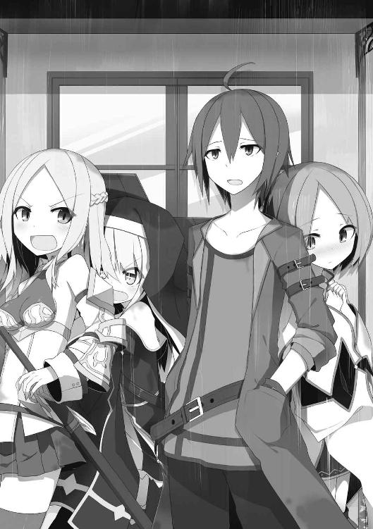
俺が魔導士のエフィと出会ったその日、彼女がどうしてもとせがむので、俺は仕方が無く、自分が借りている宿に連れていくことにしたのだ。
魔力が完全回復する一晩だけという約束で。
本人はその約束を守る気が全然無いのが気がかりだったが......。
まあ、そのことはさておき――
エフィと共に宿に戻ってきたら、入り口の前でリノアとメリッサの二人が待ち構えていたのだ。
彼女達がそこにいた理由は、俺とパーティを組む為。
宿の場所はギルドを出入りしていた時、後を付けられたっぽい。
俺は何かと難ありな彼女達とパーティを組む気は無かったが、お金が無くて住む宿が無いとか言うし、エフィだけを部屋に入れるわけにもいかず、結局全員であの狭いボロ宿の一室に。
それだけなら、まだなんとかなったのだが......。
見ての通り、相性の悪いリノアとメリッサが部屋の中でも大声で罵り合いを始め、他の泊まり客から苦情。
宿の中をオロオロと動き回っていたエフィは、お化け騒動を起こして厳重注意。（本人はトイレに行くつもりだったらしい）
その流れで宿主に規定の人数以上で泊まっていたことがバレて出入り禁止を食らってしまったのだ。
夜が明けるのを待つこと無く、当てもなく放り出されてしまった俺達。
宿の外で呆然としていたところ、急に雨が降ってきて現在に至る――というわけだ。
俺はいまだににらみ合っているリノアとメリッサに目を向ける。
「お前等、いい加減にしろ。どうすんだよ、これから」
そう言うと、彼女達はむくれた顔をし、視線で俺の背後を指し示してきた。
「ではまず、その子に離れてもらってから話しましょうか」
「そうね」
二人が指摘してきたのは俺の背中にぴったりと張り付いて離れないエフィのことだった。
自分に注目が集まると彼女は動揺し始め、杖を手にしようとしている。
「おいおい、こんなところで隠密とか使わなくていいからな」
「......」
エフィは腰に据えられた杖から手を離す。どうやら魔法を使うのは止めてくれたようだ。
「二人とも、あんまりエフィに強く言うなよな。怖がってるだろ」
するとメリッサが眉間に皺を寄せて、口をへの字に曲げる。
「なんでその子だけ特別なのよ。私だってくっつきたいのに......」
「え？」
「え!? な、なんでもないわよ！」
と、そこでメリッサのことをリノアがニヤニヤとした目で見ていた。
「くくくっ......」
「なっ、なに笑ってんのよ！」
メリッサの顔は炉にくべられた鉄のように赤くなっていた。
降り続く土砂降りの雨。
俺は屋根から滝のように流れ落ちてくる雨水に視線を置きながら考える。
「さて、これからどうするか......だが」
「また、どこかに宿を借りればいいんじゃないでしょうか？ 今度は私とのツインルームですけどね」
リノアがまたアホなことを言っているので、その辺りの部分だけ無視して話を進める。
「あの宿はこの街では最安値だったんだ。他を借りても今の俺の稼ぎでは到底維持できない」
「じゃあ、パーティハウスを買ったらいかがでしょう」
リノアが言うパーティハウスというのは、パーティを組んだ冒険者が冒険に向かう拠点として使う大きめの家のことだ。
大所帯になってくると個々で家を借りるより勝手が良くなるし、作戦立てや休息の場、戦利品などの置き場として非常に便利になってくる。何よりメンバーと生活を共にすることで信頼関係や絆が深まり、冒険に於いての完遂確率も上昇する。
だがしかし、
「パーティハウスだって？ 馬鹿言うなよ、そんな高い物が買えるわけないじゃないか」
「パーティ組んだら、パーティハウス。これは当然の流れでしょう」
「流れ以前に、なんでいつの間にパーティ組んだことになってんだよ」
「いやですよー、ここまできたらもう一蓮托生じゃないですかー」
「......誰のせいでこんなことになってると思ってんだ」
不満を漏らしていると、俺の背後にいたエフィが遠い目をしながら呟く。
「パーティハウス......憧れる......」
「エフィまで......」
そして残るメリッサは、雨に濡れた足下を気にしながら言ってくる。
「そうね、私、あのウサギ小屋みたいなの苦手だし。やっぱりお家は広い方がいいわね」
「何、さらっと俺のいた部屋を批判してんだよ！ それに食うに困るほど金持ってない癖に、なに贅沢なこと言ってんだ。しかも便乗する気、満々じゃねえか！」
「だって私、硬いベッドじゃ寝られないんですもの。あ、もちろんリノアとは部屋を別々にしてね？」
「お前等......勝手なことばかり言いやがって......」
なんだか完全に三人が三人とも既にパーティを組んだ気でいる。
実際、こうやって雨宿りをしている俺達の姿を通行人が見たら、
ああ、あの冒険者の一団はパーティなんだろうなー。
と、普通に思われてもおかしくない状況になっている。
他人から見た〝かたち〟......か。
――――――。
――――。
――。
いや、待てよ？
もしかしたら、この状況、使えるかもしれない。
彼女等は非常に痛い人達だが、職業だけを見てみると――
聖職者、剣士、魔導士と、
表向きだけは、やたら豪華なメンバーだ。
しかも攻守のバランスも取れている。（職業的に）
俺は再度考えた。
宿を追い出されたことで、結局、今日泊まる場所すらないんだ。
だったら――。
「やってみるか」
「え？」
リノアに釣られて他の二人も俺を見てくる。
「やるって何を？」
メリッサが不思議そうに尋ねてきた。
だから俺は、言ってやった。
「パーティハウス、買えるかもしれない」
俺の発言が意外だったのか、彼女達はぼんやりとしていた。
いやいや、最初にお前等が買えって言ったんだろが。なんだその反応は......。
と思っていたら、やっと時間差で騒ぎ始めた。
「やっとパーティ組んでくれる気になったんですね！ 私、嬉しいです！」
「私の申し出を断るなんて有り得ないと思ってたから、いつかはそう言うと思ったわ」
「クロウと......パーティ......」
喜ぶ三人を前に俺はハッキリと告げる。
「まだ組んだわけじゃないぞ。寝泊まりできる場所を得る為に、協力してもらうってだけだからな？」
「「「......」」」
その発言でようやく俺が本気でパーティハウスを買おうとしていることに気付いたようで、彼女達は急に黙り込んでしまった。
俺はそんな彼女達から目の前の街路に視線を向けると、あれだけ降っていた雨がパタリと止んでいることに気が付いた。
そのまま見上げると、雲の切れ間からは朝日がのぞいていた。
× × ×
「いいか、俺が説明した通りにやるんだぞ？」
俺は石畳の街路を歩きながら、彼女達に念を押した。
彼女達というのはもちろん、リノア、メリッサ、エフィの三人。
俺達が今、どこに向かっているのかというと、この街にある不動産屋だ。
不動産と言っても主に扱っている物件は、冒険者向けのパーティハウス。
大陸の中央に位置し、交通の要衝ともなっているこのリザの都は、冒険者にとっても利便性が高く、拠点としてパーティハウスを購入する者も多い。
需要があるからこそ商売が成り立っていると言える。
だが実際、ハウスを所有しているパーティの全てが、ある一定以上の実績を残している高レベルパーティだということを付け加えておこう。
そこで俺は、黙っていれば高レベルパーティに見えるであろう彼女達に、とある作戦を告げていた。
その通りに動いてくれれば、あとは俺がなんとか話を付けるとも。
後は罠士である俺の出番だ。
罠といえば物理的な罠だけを想像するのが普通だろう。
でも罠士は人の心にも罠を仕掛けたりするのだ。
全て上手く運べば、持ち合わせの無い俺達でもパーティハウスが手に入れられる。
ということで間違いの無いように再度、彼女達に確認していたのだが、緊張しているのか皆無言で俺のすぐ後ろを付いてきていた。
通りの両側に石造りの家々が建ち並ぶ。
目的の場所はこの並びの角にある。
そのまましばらく歩くと、店先に掲げられたブラケット看板が目に入ってくる。
《オディロン不動産》
そこには、そう書かれていた。
店前に辿り着いた俺は中に入る前に、リノア達へ視線を送る。
それに、大した意味は無い。
「行くぞ」という確認くらいなもんだ。
俺が先陣を切って店内に入る。
中はテーブルとソファーがあるだけの、意外とこぢんまりとした空間だった。
まあ、大きな家を扱っているとはいえ、実際の商売にはこのくらいのスペースで充分とも言える。
俺達が入店すると同時に奥から出てきたのは、口元に髭を蓄え、やや薄い頭髪をした中肉中背の男だった。
狭い店内、他に人がいるとは思えないので、恐らく彼が看板に店名として掲げられている主人、オディロンだろう。
「いらっしゃいませ。物件をお探しですか？」
彼は柔らかな物腰で話しかけてきた。
「ああ、そうだ。この都が気に入ったんで、ここを拠点にガンガン稼いでいこうと思ってな」
俺は百戦錬磨の冒険者に成り切ったような態度で返す。
「ということは、パーティハウスでございますね？ リザは冒険者にとって、お仕事のし易い環境にありますからね。やや距離がありますが都の四方にまだ多くの未開拓ダンジョンがございますし、物流の中心であるが故に冒険に必要なアイテム類も容易に揃いますから。とても人気がありますよ。まあ立ち話もなんでしょうから。こちらへどうぞ」
そう言ってオディロンは俺達にソファーを勧めてくる。
無論、勧められた通りに奥へ進んでソファーに腰かけたのだが......その際に彼は俺達を品定めをするような視線を送ってきていた。
恐らく、この客にはどのくらいの価格の物件が売れそうか？
どれくらい吹っかけても大丈夫そうか？
もっとストレートに言えば、
どれくらい金を持っていそうか？
そんなことを身なりや態度から判断しようとしているのだ。
リノア達もなんとなく、その視線を感じ取っていたようで、ガチガチに緊張してしまっていた。
まずリノアは、思いっ切り焦りが顔に出てしまっていて、物凄く挙動不審になっていた。
メリッサなどは高価そうな装備を身に付けているので、そのまま普通にしていれば全然問題無いのにもかかわらず、同じ側の手足が同時に前に出るというおかしな動作をしていたし、エフィは店に入ってからずっと俺のコートの裾にしがみついたままだった。
これには店主のオディロンも怪訝な表情を見せる。
「今、お茶をお持ちします」
そう言って彼が奥へ消えていったのを確認すると、俺は小声で彼女達に釘を刺す。
「あれほど普通にしてれば大丈夫だって言っただろ」
「だ、だって......お金無いのにどうやって買うんですか？」
隣に座るリノアが不安げな顔で訴えてくる。
「なんだよ、そもそも言い出しっぺはリノアだろ？ それともやっぱり冗談だったのか？」
「私的には、それぐらいの心意気......ってつもりで言ったんです」
「大丈夫、きっと上手くいく。俺を信じろ」
リノアは下を向いて押し黙っていたが、少しすると真剣な眼差しで頷いた。
「メリッサとエフィも、な？」
言うとメリッサはぎこちなく頷き、エフィは掴んでいた俺の服から手を離した。
と、そこへオディロンがトレイにお茶を載せて戻ってきた。
「お待たせしました」
彼は向かい側のソファーに座り、物件情報が記載されたいくつかの紙をテーブルに広げる。
そのうちの一枚を手前に差し出してきた。
「こちらなどはいかがでしょう。やや中心部から外れますが、かなりの敷地面積があります」
そこには土地についての詳しい情報が書かれていた。
「ああ、それはいいや」
「なるほど、新築ではなく中古物件をお求めですか。ならば、こちらなどはいかがでしょう。四名様でも充分に余裕のある広さですし、冒険で得たアイテムを保管する為の頑丈な宝物庫まで完備しております」
間取りなどが書かれた横にハウスの価格が太字で書かれている。
そのお値段、六千万Ｇ。
「ろ......ろくせん......まん......!?」
隣でリノアが卒倒しそうになっていた。
その様子をオディロンが不審そうに見ると、彼女は慌てて姿勢を正す。
そんな中、俺はマイペースを保ったまま、目の前の紙を突き返す。
「まあ、これでもいいんだけど、もう少し狭い方が使い勝手がいいかな」
「そうですか。でしたら、こちらの......」
「おっと」
「？」
俺が急に話を止めたので、オディロンは虚を衝かれたかのような顔をしていた。
「......どうかなされましたか？」
「いや、まだ大事なことを話してなかったと思って。俺達、パーティハウスが欲しいのはそうなんだが、支払いを分割でお願いしたいんだよね」
途端、オディロンの顔が不機嫌そうに歪んだ。
「あいにく当店ではそのような形での取引は行っておりません。冒険者様には全て一括でお支払い頂いております」
「分かってるさ。この御時世、最後まできちっと払ってもらえるかどうかなんて誰にも判らないものな。そもそも分割だなんて言い出した時点で、そのパーティが稼げないことを証明しているようなもんだ」
「理解していらっしゃるのなら、お帰り下さい」
オディロンはソファーを立ち、俺達を出口へと促す素振りを見せる。
「まあ、聞けよ。俺達はこれから大きな仕事に手を出そうとしているところなんだ」
俺が言うと、リノア達は目を丸くして、
「え、そうなの？？」
みたいな顔をする。
だが俺は、構わず続ける。
「その仕事を始めるに当たっては元手が結構かかる。だから、できれば頭金無しでお願いしたい」
「話になりませんな。お引き取りを」
「もちろん、その仕事が完遂すれば大きな見返りがある。その時は残りを一括で払おう」
オディロンは鼻で笑う。入店した当初の穏やかさは既にどこかへ飛んでいってしまっていた。
「ふんっ、何が大きな仕事だ。そんなものを信じる馬鹿がいるものか。そもそも、そういった取引は信用のあるパーティだからこそ通用するのです。金が無いのならさっさと出ていってくれ！」
......かかった！
俺は心の内で囁く。
「その信用のおけるパーティってのは、たとえばどういうもののことを言うんだ？」
オディロンはいかにも面倒臭そうな表情を浮かべる。
「はあ？ そんなのは決まっているでしょう。国から称号や勲章をもらっているような名声の高いパーティのことですよ。たとえば、最近この辺りに来ているらしい《臥竜の団》とか。彼等だったらそういった取引に応じても問題無い」
「ほう、そんなパーティがいるのか」
有名パーティを知らない俺に苛立ちが募ったのか、オディロンは憤慨し始める。
本当は知ってるけど。
「そんなことも知らないでパーティハウスを手に入れようなんてお笑い種ですな。その調子では、このリザの南西にあるトトリの村が魔物によって壊滅したことも知らないでしょう？」
「初めて聞いたな」
これも知ってるけど。
「長い間、魔物の不可侵領域だった人間の居住地域で百を超える大量のゴーレムが発生。噂では魔物の大侵攻が起こる前兆だとか騒がれているのに悠長なことですな」
「そいつは大変だ」
オディロンは呆れた様子だった。
「ふんっ、トトリの村に出現したゴーレムはその臥竜の団がとうに全滅させましたよ。その立ち回りは圧倒的で、二ミラン（約二分）もかからずに百数十体を地に返したとか。それ以来、目立った魔物の出現も起きていないらしいですし、まさに臥竜の団様々ということです。あなた方もその位のパーティになってから来てもらえれば、先程の条件で取引差し上げてもよろしいですよ？ まあ、そんな可能性は万に一つも無さそうですが」
「なるほど、それなら俺達が臥竜の団に匹敵する能力を持っていれば、パーティハウスを融通してくれると捉えていいのか？」
「ああ、いいですとも。しかし、そんなものどうやって証明するというのですか？」
俺は含み笑う。
「それは、ゴーレムでさ」
× × ×
俺達四人とオディロンは店先の街路にいた。
「一体、何を？」
「まあ、待てって。今、準備するから」
急かすオディロンを横目に、俺は腰のポーチから小瓶を取り出し、その中身を石畳にぶちまける。
ピンク色の粘性の高い液体が辺りに広がった。
「それは？」
不審な様子で地面に広がるものを見るオディロン。
「これは捕獲したスライムを蒸留して、邪粘体だけを抽出したものだ」
「は？」
オディロンは真顔で言った。
当然の反応だろう。魔物を火にかけて成分を分離させるなどという発想は、錬金術士か、俺のような罠士の頭の中にくらいしか無いだろうから。
「このスライムの邪粘体は人の負の感情に反応する性質があるんだ。ということで、最近あるでしょ？ 不安に思うこととか、そういうことが」
「......へっ!? 私？？」
オディロンは何か心当たりがあるのか、やや動揺を見せる。
「そういったものを思い浮かべながら、この地面にぶちまけたものに負の感情をぶつけてみてくれ。たとえば『バカヤロー』と叫ぶとか」
「そ、それじゃあ..................ばっ、ばかやろうっ!!」
彼が叫んだ直後、すぐに反応があった。
邪粘体が周囲に敷き詰められた石畳を次々に吸い上げ、積み重なってゆく。
それは瞬く間に家よりも高くなり、巨大な人型となった。
「ま、まさか......ゴ、ゴーレム!?」
オディロンはその場で腰を抜かす。
だからさっき、そう言ったんだけどな......。
道行く人も呆然とその姿を見上げていた。
リノア達も同様だ。
「そんなに驚くことはないって。大体ゴーレムってのはそれよりも高位の存在が操っている、まさに操り人形みたいなもんだから。魔導士なんかがよくゴーレムを呼び出したりするけれど、この邪粘体は冒険者でなくとも簡単にゴーレムが操れるようにしたもの。今は最初に負の感情を送ったあんたが主になってるから、余計なこと考えない限り安全さ」
「これを私が......」
オディロンはぼんやりとゴーレムを見上げている。
周囲の人々は、動かないゴーレムの周囲で平然としている俺達を見て、冒険者が何かやっているだけで魔物ではないと判断したのか日常に戻りつつあった。
「それで......私にどうしろと？」
「簡単さ。さっきみたいに負の感情をぶつけてゴーレムを動かす。それを俺達が倒す。それだけ。ゴーレムってのはどんなに能力の高い者が操っても、さほど強さが変わるってものじゃない。ってことは、臥竜の団もこれと同じくらいのゴーレムを相手したってわけだ。向こうさんは百数十体を二ミラン（約二分）足らずで倒したらしいから、俺達もこいつを瞬殺すれば同等の能力があるってことだろ？」
「やや納得しがたいところがありますが、まあいいでしょう。三セクル（約三秒）で倒せたらパーティハウスの件、考えてあげてもいいですよ」
「分かった」
彼は無茶を言ったつもりだろうが、それも折り込み済み。
さっきそれっぽく言ってみたが、実はこの邪粘体ゴーレムと一般的なゴーレムは全くの別物。
そして邪粘体ゴーレムは......めちゃくちゃ弱い。
それ自体、罠士にとってはさほど珍しいものでもなく、迷宮などに仕掛ける罠の定番だ。
侵入者の感情に反応し、ゴーレム化。相手が恐怖に陥れば陥るほど、ゴーレムも襲ってくるという仕掛け。
但しそれは見る者に恐怖を与えるというのが主な役割で、強さといったら木偶人形の方がましなくらい。
まあ、一番安上がりで済む宝物庫のハッタリ番人といったところ。
そんなわけで、ここまでは段取り通り。
あとはリノア達にさっくり倒してもらえば万事ＯＫなわけだ。
「じゃあ配置についてくれ」
俺が告げると彼女達はやや緊張した面持ちでゴーレムの前に陣形を作る。
剣士であるメリッサが先頭で、それをサポートするように後方に付くリノアとエフィ。
三角の形だ。
俺はというと、その彼女達の横に控える形で配置に付く。
出番無さそうだけど、まあ一応。
「やってくれ」
合図すると、オディロンは軽く頷いた。
彼はすぅーっと胸一杯に息を吸い込む。
そして、負の感情を叩き込む。
「............ふっ、ざけるなああっ!!」
すると静止していた巨体がゆっくりと動き始める。
右拳を引き上げ、殴りかかる体勢だ。
その拳が狙うのは先頭に立つメリッサ。
彼女は細身の剣を抜き放ち、仰々しいほどの構えを決める。
そのポーズは彼女の高貴なイメージにぴったりな感じだったし、実際、格好いいし、絵になっている。そして何よりもやる気を見せているのが良かった。
それに一度も冒険に出たことが無く、戦闘の経験も無いと思われるメリッサだが、以前から気になっているあの剣だけは相当の業物だ。
たとえ所有者が未熟であっても、何も考えずあの剣を縦に振るだけで、ゴーレムはまるでプリンでも切っているかのような感覚で真っ二つにできるだろう。
何も問題は無い。
が――
「さあ、どこからでもかかってきなさい。天から降臨した女神のごときこのメリッサ・シルヴェールが慈悲の心を持って大地に還してあげるわ」
余計な台詞が多かった......。
だが、それだけでなく、
「そして天空に満ちる月、大地に咲く一輪の花、それがこの私、メリッサ・シルヴェール――」
名乗り口上が延々と続くだけで一向に動こうとしない。
しかも結構、ノってきてしまっている様子。
いやもう......いい加減、動けよ！
脳内で文句を言った矢先、ゴーレムの拳が振り下ろされる。
まあそれでも、超のろのろのパンチなんで子供でも避けられるんだけど。
「やあやあ、我こそはぼごぶふぁあっ!?」
「......」
俺は口をあんぐりと開けたまま呆然としてしまった。
いや俺だけではない。
オディロンはもちろんのこと、リノアやエフィまで目の前で起きた状況に目が点になっていた。
メリッサはゴーレムのパンチをもろに食らい、地面に転がったのだ。
ついでに破砕したアーマーの破片が「カランッ」というなんとも軽い音を立てて辺りに散らばる。
だが鎧がこんな程度の衝撃で壊れるわけがない。
しかもあのゴーレム、見た目の割にはそこまでの力は無いし。
俺は足下に転がっていた破片の一つを拾ってみる。
すると、
「こ、これはまさか......木っ!?」
表面に綺麗に色が塗られているが、内側は木目が丸分かりだった。
魔法装備のような品の良さがあったにもかかわらず、当初から妙な違和感を覚えていたのはこのせいだったのだ。
こんなんじゃ防御力なんてほとんど無いに等しい。
ってか、これメリッサが自分で作ったんだろうか？
ノミでくり貫いたり、糸で繋いだりした跡がある。かなり細かい装飾も成されていて、凄く器用な人間じゃないとできないレベルだ。
と、こんなことをしている場合じゃなかった。
メリッサだ。
怪我をするほどの威力は無いとはいえ、後ろに吹っ飛んだ彼女。
今は地面の上に仰向けに倒れていて、何が起きたか分からないといった様子で目を回していた。
いくらなんでも弱すぎだろ！
この状況にエフィはあわあわと動揺していたが、彼女なりに考えたのだろう、傍にいたリノアに向かって口を開く。
「リ......リノア......メリッサに回復魔法を......」
「へっ!? ......あっ、う、うん！」
言われたリノアは最初戸惑っていたが、すぐにメリッサの傍に駆け寄り、背負っていた巨大十字架を地面に下ろす。
回復魔法をかけるほどメリッサはダメージを負っていないと思うが、ここで一番人気職である聖職者が、鮮やかに仲間を復活させれば最初の失態を帳消しにできるやもしれない。
俺はリノアの行動を見守った。
彼女は腰に下げている杖を抜くと、それを――――地面に置いた。
え？ 置いた？？
何をするのかと思えば、その場に屈んで十字架鞄の蓋を開け始める。
開いた中には、無数の小瓶が詰まっているのが見えた。
彼女は人差し指で小瓶の上をなぞる。
「えーと、えーと、ポーション、ポーションは......っと」
「......」
俺は嫌な予感がしてきた。
この状況で回復アイテム......。
出会った当初、泥だらけなのに浄化の魔法を使わなかったこと......。
全く使った形跡の無い新品同様の杖......。
そしてこの備蓄されている大量の回復系アイテム......。
それらから鑑みるに、お前もしかして......というか、確実に......
魔法使えないだろ！
そんな心の嘆きも露知らず、リノアは目当てのアイテムを見つけたのか、希望に満ちた顔で、
「あ、あった！」
と小瓶を掴んでいた。
彼女はメリッサの首を手で支え、ポーションを飲ませる。
「メリッサさん、はいこれ飲んで下さい！ 元気になりますよ」
「んぐ、んぐ、んぐ......」
メリッサはまだ何が何だか分からないといった様子で、言われるがままにそれを口にする。
だがその時、手元を見ていたリノアが何かに気付いた。
「あっ......しまった、これ、ポイズンドリンクでした......」
「ぶふうぅぅぅぅぅぅぅぅぅっ!?」
メリッサは思い切り、口の中のものを吹き出していた。
「あんた、何飲ませてんのよっ!! 殺す気!?」
「すみません、少しぼんやりしてました」
「絶対わざとでしょ！」
「そんなことないですよー。人聞きの悪いこと言わないで下さい」
ちなみにポイズンドリンクは魔物などに継続ダメージを与える為のいわば毒である。
二人がアホなやり取りをしている間もゴーレムは絶賛稼働中で、再び彼女達を襲おうとしていた。
残された希望はもうエフィだけだ。
たとえ体内魔力量が少なくとも、
たとえ一度の魔法で魔力が枯渇してしまおうとも、
攻撃魔法を一発当てるだけでいい。
それだけで奴は元の石畳へと戻る。
彼女自身もそれを自覚したのか、杖を体の前に構え、目を閉じ、既に魔法詠唱に入っていた。
難はあっても、そこは魔導士。
安心感がある。
それほど待たないうちに杖の先に嵌まっている魔法石が、魔法発動の輝きを見せる。
よし、これで終わりだ。
そう安堵した次の瞬間、エフィの姿が――消えた。
「おい......まさかこれって......隠密!?」
てっきり、なんらかの攻撃魔法が放たれると思っていたから、これには拍子抜けしてしまった。
何してんの!?
突っ込みを入れたくなった矢先、俺の背中からコートが引っ張られる。
振り向くとそこには隠密が解除されたエフィが申し訳なさそうに立っていた。
俺が「どうして？」と聞く前に、彼女の方から口を開く。
「私......魔法、一種類しか使えない」
「はい？」
そう、彼女は隠密しか使えない魔導士だと言ったのだ。
そんなの聞いてないよ！
というか、あまりにも普通じゃなさすぎて考えもしなかった。
そういえばオディロン。
彼女達の一連の立ち回りに、怒りとか呆れとかを通り越して唖然としていた。
このままじゃまずいと思った俺は、こっそりと足下に転がっていた小石を拾い、そいつを握り締めたまま巨大なゴーレムの足下に転がり込む。
そして眼前にあったスネの内側目掛けて拳で殴りつけた。
次の瞬間、ゴーレムがバラバラと音を立てて崩れ、元の石畳へと戻る。
そう、こいつはこんな程度の弱さだ。
リノア達があまりにアレなもんだから、急にゴーレムが強くなったんじゃないかと錯覚したが、やはり通常通りだった。
俺がゴーレムを倒したことでオディロンは我に返ったようで、嘲笑うかのような表情を浮かべてくる。
「どういうわけですかな？ これは。最初に息巻いていたのは、やはり虚勢だったということですかね。はっはっはっ。申し訳ないが取り引きの話は無しということで」
当然といえば当然の結果だった。
でも俺は、ただでは転ばない。
プラン変更だ。
「いやー、今のは危なかった。あんたも平気か？ 体に異常は？」
「？？」
オディロンは何のことだとばかりに訝しげな顔をする。
「今回のはイレギュラーだった。あんたが内に持っている負の力が強すぎて、ゴーレムが予想を超えて強力になってしまった。あれは臥竜の団でも手こずるレベルだ」
「それはおかしな話ですね。さきほど貴方は自分で『ゴーレムは誰が操ってもさほど強さは変わらない』とおっしゃった」
「まあそれは確かにそうなんだが、今回は予想を遙かに超えた負の力だったからな。特に邪念体を使うゴーレムには有り得る話だ。それが証拠に最近、あんたの身の回りで良くないことが起きてるんじゃないか？」
「えっ......」
唐突に聞かれて、ハッとなるオディロン。
「その様子では何か心当たりがあるようだな。不運なこと、不幸なこと、不安なこと、そういったものが負の力を倍増させる。あのゴーレムの感じじゃ相当ヤバイものが取り憑いてるんじゃないか？」
「なっ......そんな馬鹿な......」
「あまり放置したままにしておくと、いずれ良くないことが起きるぞ？ 将来の為になんとかしておいた方がいいんじゃないのか？」
「何か方法があるのですか!?」
オディロンはかぶり付くように迫ってきた。
今度こそ――罠にかかった！
「あるにはある」
彼は急にすがるような態度を見せてくる。
「最近、良くないことばかりが続くのです。発端は妻に逃げられたこと。そのあとは祖母が玄関先で転んで腰を痛めた。その矢先、可愛がっていた愛猫が突然いなくなってしまった。まったく不幸続きです。それに不動産の方もここ数ヶ月あまり上手くいってない......一体どうしたらいいんでしょうか？」
俺はやや笑みをこぼす。
「そもそも彼女達があれだけ手こずったゴーレムを、なぜ俺がたった一撃で倒せたと思う？」
「さ、さあ......？」
そこで俺はこれ見よがしに手の平を広げ、握っていた小石を見せる。
無論、この小石はさっきそこで拾った〝ただの石〟だ。
「こいつは俺がナジリア遺跡の最奥で発見したレアアイテム。あらゆる邪気を打ち払うと言われている《聖霊光石》だ。これを握っていたからこそ、簡単に倒すことができた。というわけで、この石をお守りとして常に持っていれば、あんたに取り憑いているもんは次第に浄化される」
「では......これを？」
頂けるんですか？
そう続きそうになった時、俺は言葉を重ねる。
「譲ってやってもいい。だが条件がある」
「条件......ですか。それはどういった？」
もちろん、それは――。
「手頃なパーティハウスと等価交換だ」
オディロンは最初、驚いた顔をしていたが、すぐに真顔に戻る。
「いいでしょう」
そんなわけで俺達は当初の目的通り、パーティハウスを手に入れることに成功した。
しかも分割払いではなく、現金ですらなく、そこら辺に転がっているただの小石一個で手に入れることができたのだ。
それもトラブルから発生した嬉しい誤算だったのだが......ついでに彼女達は俺が考えている以上にポンコツだってことも判明した。
あ、そうそう。
街中でゴーレムを召喚したことが通行人に通報されていて、あの後、王国警備隊の詰め所で結構、叱られちゃったことも付け加えておこう。
第三章 事故物件へようこそ
「あのおっさん、出し渋りやがったな......」
俺は森の中に建つ一軒家を見ながら呟いた。
〝あのおっさん〟とは、もちろん不動産屋のオディロンのことだ。
先日のゴーレムの一件で、パーティハウスを譲ってもらえることになった俺達は、その物件があるという場所へやってきていた。
それが眼前にある石造りのこじんまりとした家。
一見すると静かな森の中にある妖精の家とでもいうような可愛らしい雰囲気があるが、近付いてちゃんと見てみると古代文明の遺跡だと言っても万人が信じちゃいそうなくらいの劣化具合だった。
周囲は雑草が生えまくりだし、外壁には蔦などが絡み付いており、かなりの長い期間放置されていた感がある。
内部もだいぶ傷んでいて修復が必要だし、建物裏手にある井戸も完全に枯れていた。
なんというか......価格などは付かなそうなボロ屋だった。
場所もリザの都の中心からかなり離れた郊外で周囲には民家などはなく、森しか広がっていない。まったく不便極まりない物件だ。
それでもまあ明日の雨風をしのぐ家も無い俺達は、ここに住むより他は無い。
野宿するよりはマシだ。
それは彼女達も同様。
俺は今もせっせこ目の前で働き回っているリノア達に目を向ける。
彼女達は意外に楽しそうで、ちゃんと住めるように家の中を掃除したり、外の蔦や雑草などを引っこ抜いたりしている。
既に彼女達となし崩し的にパーティメンバーのようになっているが、あくまで成り行き上、仕方無くといった関係だ。
俺は罠士で超人気職に上り詰める。それが目標なんだ。
いつまでも彼女達のお守りなどしてられない。
ちゃんとしたメンバーが見つかるまで。
そう、見つかるまでの関係なんだからな。
いや、本当に。
だって彼女達......ここにきて、俺が当初思っていたものよりも遙か斜め上を行くポンコツっぷりが判明したのだから。
リノアは聖職者なのにも関わらず、神に見放されたとかいう強力な運の悪さで魔法が一切使えないって言うし、それを補う為に大量の回復アイテムを買い込んでいて万年金欠状態らしい。
メリッサはというと、豪華な魔法装備を身に付けている癖にどうして飯も食えずにいたのか、俺はずっとそのことを疑問に思っていたのだが、剣以外の装備全てが彼女の手製だと分かったのだった。しかも結構クオリティが高いのが驚き。
アーマーやアクセサリーは拾った木を削ったり、括ったりして加工。それ以外の服などは裁縫して作ったそうだ。
ようするに見た目だけ盛ってみた！ っていうプライドの高い彼女らしい発想だった。
ついでに言うとゴーレムの鈍いパンチも避けられなかった彼女は、運動神経もちょっとアレだった。
エフィは体内魔力量が少ないことは知っていたが、まさか隠密の魔法しか使えないとは思ってもみなかった。
これは最大の誤算だった。
そんなこんなで――
新居に住む為の準備が着々と進められていたが、意外にもそれはすぐに終わった。
そもそも運び込む家財なども無く、掃除くらいしかやることが無かったからだ。
俺達は今、その家の中に入り、なんにも無いリビングで一息入れていた。
椅子もテーブルも無いので、各人が床の出っ張りや縁に腰かけている。
「これは結構、直さないとまともに住めないな」
俺は天井を見上げながら言った。
太陽の光が透けて見える部分があり、あそこは雨が降ったら確実に雨漏りする場所だ。
他にも壁が崩れている所が何カ所か。
動きの悪くなっている扉は、まあ今の所我慢できるが、外の井戸だけは早急に掘り直さなければ生活に困る。
それらは自分達でも修理できるが、やはりそれなりにお金もかかるわけで......。
「でも私達、修理にかけるお金なんか持ってないわよ？」
先の戦闘で壊れた自作アーマーを既に膠で貼り合わせ元通りにしていたメリッサは、合わせ目を気にしながら言ってくる。
「そりゃあ、これからギルドでクエスト受けまくって、その報酬で少しずつ修復してゆくしかないだろうな......」
「クエスト......冒険......」
エフィが期待半分、心配半分といった顔をしていた。
そこへ一人だけニコニコとしたリノアが目を輝かせながら両手を横に広げる。
「これが夢にまで見たパーティハウス！ 本当に手に入るなんて思いもしませんでした。さすがはクロウさんです！ 私の為にここまでして下さるなんて、ほんと愛の力ですね！」
「どの口がそれを言うんだ？」
俺がジト目を送った。
するとメリッサが、やや不機嫌そうに言う。
「馬鹿なことを言っている暇があったら、自分の部屋に籠って魔法の練習でもしてなさいよ」
「むっ......」
リノアは口を尖らせ黙ってしまった。
そんな中、家の内部を見回していたエフィが不思議そうに聞いてくる。
「でもあの時......どうやって......？」
「え？ ああ、オディロンのことか」
最初はなんの質問か分からなかったが、少し遅れて意味を理解する。
彼女は目の前で見ていたとはいえ、オディロンが急にパーティハウスを譲ってくれるようになったことへ疑問を感じているのだ。
「あれは罠士が得意とする心理トラップさ」
「しん......り？？」
「俺は彼のプライベートなことなんか何一つ知らないけど、人には必ず不安に思っていることや、不幸な体験はあるもんなんだ。だからそこを突く。あたかも全てを知っているかのように、『最近、良くないことがあったよね？』と聞くと、人は無意識にそれを頭の中に思い出して並べる性質がある。すると相手は勝手に錯覚するわけだ。『なんで？ どうして？ 分かるんだ？』と。そういった心のバランスを崩した状態のことを罠士は〝認知的不協和〟と呼んでいる。そこへ更に『このままでは将来が大変なことになるかもしれない。なんとかした方がいいのでは？』という〝フィア・アピール〟を行うと、もう相手は正確な判断が難しくなる。そこにつけ込んで、『こうすれば回避できる』と教えてやれば、面白いように飛び付くというわけさ」
「「「......」」」
彼女達はなぜか無言で固まっていた。メリッサなどは手元の作業が止まったままだ。
「おい......ちゃんと聞いてたのか？ 俺がせっかく説明してやったっていうのに......」
すると黙ったままだったリノアが
「いえ......純粋にスゴイなあと思って」
「......え？」
「やっぱり、罠士ってすごいですよ」
ん？ やっぱり？？
そこに違和感を覚えたが、俺は今まで褒められたこともない罠士を良く言ってもらったことで逆に気恥ずかしくなってしまった。
「いや、まあ、それほどでも......」
「じゃあ、スゴイついでに抱っこして下さい」
「ああ、なるほど、なるほど......って、するかあぁっ！ どんな流れだ！」
危うく雰囲気で抱っこするところだった。
と、そこでメリッサがアーマー修理の手を止めて言ってくる。
「ちょっとリノア？ クロウに対するそういう発言は慎みなさいよねっ！」
「え？ なんでですか？」
「そ、それは......は、はしたないでしょ！」
「そうですか？ 私はなんにも気にしないですけどね」
「私が気にするのよ！」
「えっ、どうしてですか？」
「へっ!? そっ、そそそそっ、それは............もにょもにょ......」
メリッサは沸騰した水のように頭から湯気を出して口籠もってしまった。
そこで俺は気を取り直すように、一つ咳払いをする。
「罠の話だけど、別にそういった目に見えないものだけじゃなく、ちゃんと物理的な罠だって作るんだぜ？ たとえば、この家の中と外にも既にいくつか罠を仕掛けておいた」
「えっ、本当ですか!? いつの間に......」
リノアは辺りをキョロキョロと見回していたが、そんなに簡単に分かるものでもない。
「たとえばそこの入り口すぐの床」
「え？ ここですか？」
リノアがわざわざその場所まで行って床を指し示した瞬間、足下でカチッと何かのスイッチが入った音がする。
「ん？」
途端、
ガンッ
「いったぁー......」
彼女は脳天を押さえながら涙目でうずくまっていた。
そんな彼女の傍らには金属製の〝タライ〟と呼ばれる器が転がっていた。
「こんな場所に罠張ったら危ないじゃないですかー」
「でも、私達がさっき入ってきた時は、反応しなかった......」
エフィがそう指摘する。
「？？ そういえばそうですね......じゃあどうして？」
「単純に罠をオンオフできる。ただそれだけさ」
俺は自分がもたれかかっている壁から垂れ下がっているロープを引っ張る。
すると床にあったタライがするすると天井に上っていって吊り下がった。
「ってことは......クロウさん！ わざとやりましたね!? 酷いです！」
「まだちゃんと動くか試してなかったから稼働試験さ」
「そんなことに私を使わないで下さい！ ほんとにもうっ、ぷんぷん」
リノアが憤慨して地団駄を踏む最中、いまだ火照った顔のままのメリッサが俺の方を見てくる。
「自分達が住む家に罠を仕掛けてどうすんのよ？」
「もちろんセキュリティの為さ。まあ今のは警告くらいにしかならないオモチャのようなもんだけど。この家をきちんと修復した時には、もっとちゃんとしたやつを付ける。ほら、いずれここを拠点に冒険の旅へと出て、超レアなアイテムをゲットして帰ってくることもあるだろうからさ。そのお宝を次の冒険へ出た留守中に盗賊か何かに襲われて持っていかれちまったら困るだろ？」
「ずいぶんと気の早い話なのね」
「今は何も無いけどさ、備えあれば何とやらだろ。それはさておき、これからどうするかを決めなくちゃだな」
「え？」
「とりあえず手っ取り早く稼ぐ為にクエストだろ？ まずはこの家の修理をしなくちゃだから。このメンバーでもそれなりに稼げそうなやつ、なんかあったかなー......」
俺は腕組みをし、最近ギルドに出ていた依頼を思い起こす。
するとリノアが急に前へ躍り出てきた。
「その前に、最優先でやらなければならないことがありますよ！」
「なんだよ最優先って。特に思いつかないけど？」
「部屋割りです！」
「は？？」
ぽかーんとしている俺に彼女は苛立ちが募ったようで、自ら話し始める。
「今日からこの家で寝食を共にするのですから、それは非常に大切なことでしょう？ それにこの家は今私達がいるリビングの他に個室が三部屋。人数分、足りないんですよ？」
「それなら俺がリビングで寝るから大丈夫」
「そんなことはさせられませんよ。ちゃんとクロウさんにもプライベートな空間を持ってもらわないと」
「とは言っても実際に数が足りないんだから仕方が無いだろ」
「そこで早速、私が部屋割り表を作成してみました」
「部屋割り表？？」
「はい、これです。じゃじゃーん」
そう言ってリノアは一枚の紙を広げて見せてきた。
全員でそいつをのぞき込む。
そこにはこのパーティハウスのざっくりとした間取りが描かれていた。
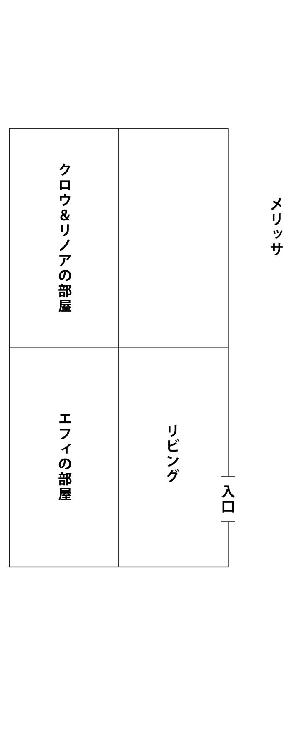
「ちょっとおぉっ!?」
突然、メリッサが大声を張り上げた。
「なんで私だけ家の中ですらないのよ!? しかも部屋が無駄に空いてるじゃないのよ！」
「えー、なかなか合理的だと思ったのですがー」
リノアは全く悪気が無さそうに答える。
「あんた本気で剣で刻むわよ？ それに......こんな部屋割り許されるわけないじゃない！ だっ、だだっ......男女が同室だなんてっ」
「どうしてですか？ 私とクロウさんは夜な夜なカードゲームをしちゃう仲なんですよ」
「カードゲームくらいで同じ部屋じゃなくてもいいでしょ！ ってか、それ絶対、嘘！ そんなこと言ってカードゲーム以上のあんなこととかそんなこととかをする気なんでしょ!?」
「あんなこととはなんですか？」
「え......そそっそれは......」
言いながらメリッサの顔は真っ赤に燃え上がる。
「ほらクロウさん、メリッサさんがいかがわしいことを考えています。彼女とは同じ部屋にならない方がいいですよ」
「ふぁっ!? ちょっと!! 勝手に人の考えてること決めつけないでよっ！」
「誘導に引っかかるのが悪いのです」
「あっ、今、誘導って言った！」
「いっ......言ってませーん」
「言ったわよ！」
なんだか収拾が付かなくなってきそうだったので俺がアイデアを出す。
「なら俺は個室確定で、残り三人でクジ引きをして決めればいいんじゃないか？」
「ぬぬぬ......仕方ありませんね。では私がアミダクジを作ります」
リノアが持っていた紙にアミダを書き始める。
それはすぐに書き終わり、メリッサ達の前に出される。
「少し広めの左奥の部屋を二人部屋と考え、番号①としました。その右隣の部屋を②。そして残りの個室がクロウさんの部屋ということで」
「分かったわ」
メリッサに続いてエフィも頷く。
「ではお二人さん。ここに名前を書き込んで下さい。ちなみに私は既に記入済みです」
言われた通りにアミダクジに名前を記入する二人。
彼女達が書き終わるのを待って、取り上げる。
「では、結果はっぴょーう」
リノアは折ってあった紙の下半分を広げて見せた。
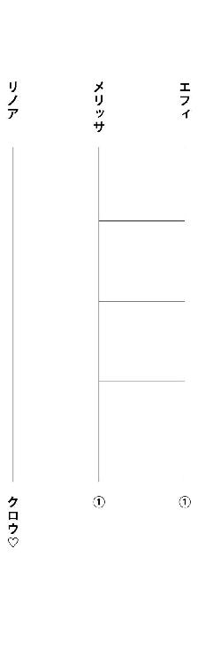
「アミダクジの意味ねえええぇっ！」
俺が突っ込んでいた。
リノアは一人でホクホクだったが、メリッサ達はあまりの暴挙に呆然としていた。
このままじゃ埒があかないと、今度は俺がアミダを作ってやり直すことに。
リノアはぶつくさと不満げにしていたが強行し、結果はリノアとメリッサが同室ということに落ち着いた。
「さて、部屋割りも決まったことだし、次はクエストだな」
そう話を振ったのだが、室内は妙に静かだった。
見ればリノアとメリッサが揃いも揃って魂の抜け殻のようになっている。
まるでお通夜状態だ。
相当同室になったのがショックなんだな......。
それはさておき、話が進まないので彼女達のことは放置しておいて、俺はエフィと話をすることにした。
「エフィは最近ギルドに行ったか？」
「うん......クロウと出会った日の朝に少し......」
彼女は、ややうつむき加減でモジモジと話す。
「何か良さそうなクエストあった？」
「良く分からない」
「ん？ それはどういう意味で？」
「ギルドに行った途端、人がいっぱい集まってきたから......」
「ああ、なるほど。エフィは人気職だからな」
彼女の能力のことを知らないと普通そうなるよなー。
「それで緊張して帰ってきてしまったと？」
「うん......なので良く分からない。毎回そういうことになるから......まともにクエスト情報を見たことが無い......」
「あっ......そう」
ある程度この場で計画を詰めておこうと思っていたが、結局は最新のクエスト依頼を見に行かないとなんも決められない。
仕方が無い。これから全員でギルドに行こう。
そう思って、お通夜状態の二人にも声をかけようとした時だった。
カラカラカラカラッ
「!?」
突如、室内の壁に吊してあった拍子木状の木片が、互いにぶつかり合って高い音を奏でた。
それは俺が設置しておいたもので、家の外に張り巡らされた細い糸に何者かが触れると、室内の木片が揺れる仕組み。罠としては至極メジャーなものだ。
要するに敷地内への侵入者を音で知らせる報知器の役割を果たしていた。
これには気分が沈んでいたリノアとメリッサも、
「何？ なんの音？」
と騒ぎ始める。
「俺が仕掛けておいた罠に何かが引っかかったんだ。こんな僻地に人が来るとは思えないから、多分野生動物か何かが触れちまったのかもしれないけど」
そう言いながら、近くにあった窓の木板を少しだけ跳ね上げて外の様子を探る。
家の前はかなり開けた場所になっているので見通しが良い。
そこをずっと先の方まで目で辿ると複数の人影が見えた。
一............二......三......四人いる。
しかも鎧やローブを身に付けている姿が見て取れたので、恐らく冒険者だ。
彼等のうち山高の司教冠を被った一人が、何やら仲間に向かって声を上げている。
それは結構大きな声だったので、俺の耳にもなんとなく聞こえてきた。
「うわっ、お前ダッせぇー。なんかのトラップ踏んでんじゃん」
「わざとだ、問題無い。それにこれは殺傷目的では無い罠だ」
黒いローブをまとった魔導士らしき男が、冷静に答えていた。
「んなこと言って、ホントはまずったんじゃねーの？ へへっ」
「それは俺の指示だ。あまりに不自然な仕掛けだったからな」
リーダー格と思しき赤い鎧の男が、司教冠の男にそう説明して黙らせる。
「だがこれで、ノック代わりにはなったはずだ。ほら」
そう言って赤い鎧の男が俺がいる方向へ目を向けてきた。
目線が合う。
俺は慌てて窓の戸を閉めた。
普通に俺が窓辺から様子をうかがっていたことがバレていた。
発せられる雰囲気から奴等が只者ではないことは確かだが、この家になんの用だ？
とにかくヤバイ雰囲気を感じ取った俺は、リノア達に奥へ下がっているよう指示を出す。
と、すぐに入り口の木戸がノックされた。扉越しにくぐもった声が聞こえてくる。
「すまない、旅の者だが開けてくれないか？」
ゴンゴン
返事をせずにいると再び戸が叩かれる。
「少し話がしたい。おい、いるんだろ？」
ゴンゴン
「仕方が無い。勝手に入らせてもらうぞ」
扉の向こう側でそんな台詞が上がると、少し遅れて――
ガゴオォォンッ
耳を塞ぎたくなるような破砕音と共に戸が蹴破られた。
ま、ボロ屋の閂程度ではこんなもんである。
扉の向こうに青空が望めるようになる前に、男達がゾロゾロと室内に入ってくる。
そして司教冠の彼が我先にと一歩前へ出た時だった。
俺の背後の壁から顔だけのぞかせていたリノアが、
「あっ......」
と小さく声を漏らす。
彼女が声を上げたのも、一度それを体験していたから。
天井から金ダライが落下したのだ。
だがそれは司教冠の彼に当たる前に、瞬時に凍結し、粉のようになって飛散する。
見れば隣にいた魔導士が手に持った杖を僅かに掲げていた。
彼が魔法で一瞬にして粉砕したのだ。
特に詠唱も無しにあれだけの魔法を繰り出せるのか？
驚く俺とは裏腹に彼らは呑気な様子で、
「ダサいな。トラップ踏んでるぞ」
「な、なに、馬鹿言うな。わざとに決まってんじゃんよー」
魔導士と司教冠の彼はさっきと正反対のやり取りをしていた。
そんな中、リーダー格の男が俺の前までやってくる。
「あんたがここの主か？」
尋ねてきた彼は二十代後半といったところだろうか。筋肉がしっかりと付いた、がっちり体形で褐色の肌。頬には十字傷がある。魔法装備と思しき赤い鎧を身に付け、極太の斬馬刀を背負っている。
俺はふと何かを感じ記憶を辿る。
頬の十字傷、そして赤い鎧............まさか。
目の前の男と記憶の中の人物が合致したのだ。
彼は公爵騎士の《ドミニク・コンコーネ》だ。
その彼が先頭となって指揮するパーティ......。
その名は――
――臥竜の団。
ドミニクは俺の視線の意味を理解して、含み笑う。
「我々のことを知っているようだな。なら話は早い」
彼の言葉に臥竜の団全員が俺の方へ向き直る。
彼等があの超有名な高レベルパーティ、臥竜の団だというのなら、ドミニク以外の他のメンバーは恐らくこうだ。
白い外套に司教冠を被り、敬虔なる信徒の装いながらも、その服装に相反する軽い口調の彼は大司教の《ガスパール・バロー》。
大きな感情の起伏も見せず、常に冷静沈着な様子で魔法を操る彼は大魔導士の《ジャマル・ブランヴィル》。
そして、先程から全くしゃべらず、後ろの方でこそこそとしている唯一女性の彼女は魔法と剣、両方の使い手、魔法剣士の......あれ？ えーと、えーと......なんだっけ？ あっ、思い出した。《レナ・ヴェラルディ》だ。極最近に臥竜の団に入ったらしいのであまり印象に残っていなかったらしい。
冷淡で無愛想な感じだが腰までの長い髪が綺麗で、銀色のアーマーがその美しさを際立たせている。ガスパールとジャマルは二十代前半に見えるが、レナだけは俺達とそう変わらない年齢に見えた。
とにかく全員が全員、国などから栄誉や称号を授かった超一流の冒険者だった。
ドミニクは話を続ける。
「先程も言ったが、あんた達と話し合う為にここにやってきた」
「話し合いだって？」
俺は肩を竦め、鼻で笑う。
「扉を蹴破って無理矢理家の中に押し入ってくるような人間が言うような言葉じゃないな」
「なんだと？」
ガスパールが突っかかってくるが、それをドミニクが冷静に制止する。
「それは本当に悪かった。だが、そっちがなかなか扉を開けてくれなかったし、我々も急がなければならない理由があってな」
「それで、俺達のような駆け出しパーティに、臥竜の団のような一流パーティが一体なんの用だってんだ？」
ドミニクは屋内をさっと見回した。
「率直に言うと、話し合いの中心はあんた達ではなく、この家だ」
「どういうことだ？」
「この家を譲って欲しい」
彼がそう言った時、俺の背後でゴソゴソと気配がする。
リノア達三人が、壁の向こう側から顔だけを出して心配そうにこちらの様子をうかがっていた。
「譲るだって？ ここは俺達がやっとのことで手に入れたパーティハウスだ。そう簡単に人にはやれないさ。それにここが無くなったら明日から雨風しのぐ場所にも困っちまう」
「別にタダでとは言ってない」
そう言うとドミニクは大きめの袋を二つ床の上に置いた。
ガシャリと硬貨が詰まった音がする。
「金貨で五千万Ｇある。これだけあれば新しいパーティハウスだって買えるだろう」
「ご、ごごごせん......まんっ!? ふごっふごっ」
リノアが興奮のあまり声を上げるが、すぐに口元をメリッサに塞がれてしまう。
俺は頭を掻く。
「良く分からないな」
「何がだ？」
ドミニクが訝しげに聞いてくる。
「あんた達ほどのパーティがなんでこんなボロ屋を欲しがるんだ？」
彼は小さく笑ってみせた。
「まあ、そう思うのも当然だろうな。実を言うと、家の善し悪しはあまり関係無い。どちらかといえば場所が重要なのだ」
「場所？」
「南西のトトリの村で最近、大量のゴーレムが発生した事案を知っているだろう？ あの状況が再び起こりそうな気配があるのだ。もしそのような事態が起こった場合、郊外にあるこの家は魔物討伐への拠点として最良の場所なのだよ。長期戦になれば補給地としても有効に活用できる。そこで我々は、少し前からこの場所を購入しようと狙っていたわけだが、オディロンの所に行ったら、もう売れてしまったと言うじゃないか。そこで慌ててこうしてやってきたというわけだ。なので都市周辺の治安維持の為に、どうか我々にこの場所を譲ってはもらえないだろうか？」
「なるほど、そういう了見か」
俺が顎に手を当てながら言うと、ドミニクの表情に明かりが差す。
「分かってくれたか」
「理由はよーく分かった。その上で――断る」
「はあ!?」
ドミニクは俺の答えが予想外だったようで虚を衝かれたような顔をしていた。
彼の仲間やリノア達も同様だ。
「なぜだ!?」
思わず前に身を乗り出してきた彼に俺は言う。
「なぜだも何も、ここは俺達のパーティハウスだからさ。どんな理由があっても譲る気はない。というわけでお引き取りを」
これに我慢ならなくなったガスパールが突っかかってくる。
「おいっ、こらっ、こっちが下手に出てりゃ付け上がりやがって。なんなら力尽くでもいいんだぜ？」
悪役の定番みたいな台詞を吐きながら向かってきた彼の体をドミニクとジャマルが掴んで制止させる。
「まあ、待て。我々は争いにきたわけじゃないんだ」
「で、でもよ、悠長に話し合ってる場合でも無いだろうよ」
それでもドミニクは首を横に振る。
そこでガスパールは仕方無く、後ろに控えていた彼女に向かって声を張り上げる。
「おい、レナ！ そんな所に黙って突っ立ってないで、お前からもあいつ等になんか言ってやれ！」
「......え？」
彼女はぼんやりとしていた
それは自分の出番は無しと完全に決め込んでいたような反応だった。
「ほら早く」
「......」
ガスパールに急かされて俺の前に出てきた彼女。
やや緊張の面持ちだったが、すぐに元の厳格な顔立ちに戻る。
彼女はおもむろに自分の持ち物の中から紙袋を取り出し、これ見よがしに俺に向けてくる。
「注目」
冷たく透き通った声で言われる。
そして、
「ここで問題。この紙袋の中には何が入っているのか？ はい、そこの貴様」
「え......俺？？」
いきなりクイズとか、どんな展開だ？？
戸惑いながらも考える。
紙袋であるから、それほど重いものは入れられない。他にも尖ったものや、水っぽいものも無理だろう。目の前の情報量ではそれぐらいしか予測はできない。
なので俺は素直に、
「なんだろうな？」
と聞いてみた。
するとレナは袋の中に手を突っ込み、リング状のふわふわとした食べ物を取り出した。
そう、それは古代文明の食べ物、〝ドーナツ〟だ。
「答えは、私のおやつだ」
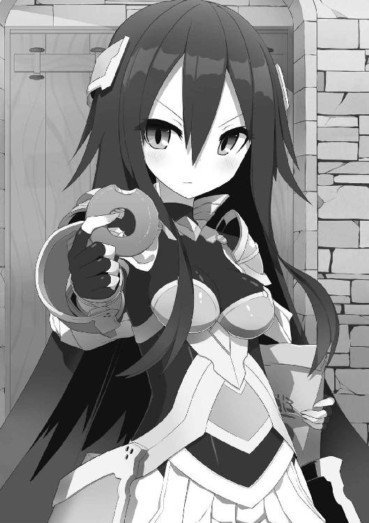
「......」
俺は呆然としてしまった。
なんだこの流れは？
てっきり立ち退きを説得されるのかと思っていたので困惑する。
彼女は仏頂面のまま、ドーナツを一口かじると、その手をそのまま俺に向けてくる。
「進呈する」
「進呈............って、いらねえよ！ しかも食いかけじゃねえか！」
「これは西街区の人気店《シュゼット》で購入したものだ。一日五十個の限定品。極上の旨さと評判で並ばないと買えないのだぞ。騙されたと思って食べてみろ」
「そ、そこまで言うのなら......」
俺は食べかけのドーナツを受け取ると、ちょっと警戒しながらかぶり付いた。
直後、
「はい、セクハラ」
「はい!? 突然、何を言い出すんだ？」
「私が食べた所に口を付けた。間接キスなのでセクハラ！」
「んな、無茶苦茶な......」
「セクハラなので王立裁判所に訴える」
「ちょっ!?」
「だが、場合によっては示談に応じてもいいぞ」
「いやいや示談とか言う前にセクハラじゃないから！」
「示談金はそのパーティハウスでいい」
「狙いはそこかーっ！」
物凄く遠回りしてようやく本題に戻ってきた。
「早く譲ったほうがいい」
「そんな道理が通るわけないだろ」
フンッと不機嫌に鼻を鳴らしたレナは、再び袋の中からドーナツを取り出す。
「ここにドーナツがある」
「知ってるよ！ てか、食いかけじゃないのがもう一つあるなら、そっちをくれよ」
「貴様はドーナツはどうやって作るか知っているか？」
彼女は俺の言葉を無視して続ける。
「そりゃあ小麦粉で作った生地を揚げるんだろ？」
「では、私が〝ドーナツ〟と言ったら〝あげる〟と返してくれ」
「は？ なんで俺がそんなことをしなきゃならないんだ？」
「いいから」
「......」
何がしたいのかさっぱり分からないが、それくらい付き合ってやるかと思ってしまう。
「いくぞ？ ドーナツ」
「あげる」
「ドーナツ」
「あげる」
「家を」
「あげる」
「その言葉しかと受け止めた」
「こらぁぁぁぁぁっ！」
もしやというか、やはりそんなオチだった。
しかしこのレナ・ヴェラルディとかいう彼女、あの臥竜の団のメンバーの中において、明らかに浮いているというか、異質の存在のように思える。
分かり易く言えば、かなり〝痛い子〟ってことだ。
臥竜の団に入っているくらいなのだから、冒険者としては結構な手練れのはず。
だが、表からはそんなふうなものが全然伝わってこない。
確かに彼女の装備品は高レベル冒険者に相応しいものだが、他のメンバーと違って威圧感とか、オーラとか、そういったものが感じられないのだ。
「むむむ......」
今も彼女は、また新しく何かを始めたようで、両手を俺にかざしたまま難しい顔をしていた。
眉間に皺を寄せて何かを念じているようだったが、それからいくら待てど暮らせど、何も起きる気配が無い。
「？」
これは一体なんのつもりだろうか？
ほとほと困り果てていると、ガスパールが冷めた口調で分け入ってくる。
「レナ、お前......何してんだよ？」
「立ち退きたくなるプレッシャーをかけている」
「......」
ガスパールも俺も唖然としてしまった。
そこへドミニクがやれやれといった感じで言ってくる。
「まあいい......今日のところはこれで退くとしよう。急なことで混乱もあるだろうからな」
彼がメンバーに目配せすると、皆、扉に向かって動き出す。
ただ一人を除いて。
「レナ、帰るぞ」
「......え？」
ドミニクが促したことでやっと気が付いたレナは、いそいそと彼等の後に続く。
メンバーが全員出ていくのを待って、一番最後に続くドミニクは、俺に向かって背中越しに言い放つ。
「次来た時には良い返事がもらえることを願っている。ではまた――クロウ・ド・クラウ」
扉が閉められると、壊れた閂だけが床に転がり落ちて鈍い音を立てた。
「ふぅ......」
嵐が去ったかのように急に静かになった室内。
俺が息を吐いたと同時に、別の嵐がやってきた。
「大丈夫ですか!? クロウさん！」
心配そうに駆け寄ってきたのはリノア達だった。
「別に......ただ話してただけだしな」
「そうじゃないですよ！ ドーナツですよ！ ドーナツ！ あの子と間接キスしたドーナツを今すぐ吐いて下さい！ クロウさんが穢れちゃいますから！」
「んなわけあるか！」
「いいから、早く！」
そう言ってリノアは俺の口に指を突っ込もうとしてくる。
「おいっ!? やめろって！」
「メリッサさん、桶持ってきて下さい！」
「分かったわ！」
リノアの言うことを聞いて颯爽と走って行くメリッサ。
「なんでお前等、こんな時だけやけに連携がいいんだよ！」
そんな中、俺の背中をさする人物が。
「大丈夫......すぐ楽になる......」
エフィが淡い表情で俺を見つめていた。
「......」
――――しばらくして。
「はぁはぁはぁ......」
俺はなんとか彼女等から逃げ延びることができ、ようやくリビングの壁にもたれ掛かって落ち着いていた。
リノア達はというと、俺との追いかけっこで疲弊し、遂には諦めたようで、それぞれに床にへたり込んでいた。
「そういえばクロウさん......ハァハァ......」
リノアは肩で息をしながら尋ねてくる。
「......なんだ？」
「......どうして臥竜の団にパーティハウスを譲らなかったんですか？」
「お前......それを聞くか？ この家は俺達で手に入れたハウスだぞ？ そう簡単に譲れるかよ」
リノアは一瞬驚いたように目を見開いたあと、穏やかな笑みを見せる。
「ははっ......そうですよね。当たり前ですよね」
そこへ、やや呼吸が整い始めたメリッサが混ざってくる。
「私だって......この家、気に入ってるんだから譲りたくないわよ。でも彼等、魔物討伐の拠点が欲しいって言ってたわね......」
「あれは嘘だろ」
「「「......えっ!?」」」
当然のことを言っただけなのに、彼女達は三人揃って驚愕の声を上げた。
「えっ......まさか本当に奴等の言葉信じちゃってたわけ？」
リノア達はぽかーんとしたままだったので、恐らくそうなのだろう。
後はあれか......世間的に臥竜の団とは数々の栄誉を得てきている〝正義の冒険者〟っていうイメージが根付いているからな。負の感情が働きにくかったのも分かる。
「べつに拠点だけだったら、この家にこだわらなくても隣に新しいのを建てれば済むことだろ？ 奴等だったら余裕でそれができるほどの資金を持っているわけだし」
「そういえばそうね......」
メリッサが感心したように頷いた。
「それに奴等は俺達のことを調べ上げてきている」
「どうしてそんなことが分かるのよ」
「ドミニクが去り際に俺のことを名前で呼んだ」
「......はっ!?」
「無論、メリッサやリノア、エフィも既にどの程度の冒険者なのか調査済みのはず。やり合う前には、必ず敵を知るのが鉄則。ってことは奴等は俺達と戦闘になることを前提に考えていたってことさ」
「......」
静かになってしまったメリッサに代わってリノアが尋ねてくる。
「でも、臥竜の団はどうしてこのパーティハウスが欲しいのでしょう？」
「奴等はこの家が欲しいわけじゃない。この家に隠されている〝何か〟が欲しいんだと思うぞ」
「〝何か〟ってなんですかね？」
「それは俺にも分からないが、五千万Ｇを払ってでも、そして場合によっては俺達をぶちのめしてでも欲しいもの......ということだけは分かるな」
「あ、あの......」
一人だけ家の角の方へ座り込んでいたエフィが、不安そうに口を開く。
「これから......どうする......？」
「そうだな。奴等はまたやってくるだろうし、対等な交渉を行うには、それまでにこの家に隠された〝何か〟ってやつを探しておく必要があるな」
そこまで言って、俺は床にへたり込んでいる彼女達の顔を見回す。
「と、俺は思うんだが......お前達はどうする？」
三人は互いに顔を見合わせ、視線だけで気持ちを確認した後、一斉に立ち上がる。
「「「もちろん、探す！」」」
――二ウルス（約二時間）後。
「なんにも無いわよー？」
「こっちも......無い」
屋内のあちらこちらでそんな声が上がる。
俺達はパーティハウスの中をしらみつぶしに探していた。
これが探しているモノが何なのかを知っていればもっと分かり易いのだろうが、なんだか分からないモノを探すのは非常にやりにくかった。
もしかしたら臥竜の団が探しているモノが、たとえば家の天井を支えているこの梁だったり、個室にある固定式の燭台だったりと何の変哲もないものだったらお手上げだ。
その価値すら分からないのだから。
「どうするの？ 全然見つからないわよ？」
個室の壁を打音調査していた俺の所にメリッサとエフィがお手上げといった具合でやってきた。
「うーん......でも、この家にあることは確かなんだよなー......」
「そうは言っても、これじゃ埒があかないわよ」
メリッサに同調するようにエフィがうんうんと頷く。
と、そこで俺は一人足りないことに気付く。
「あれ？ そういえばリノアは？」
「キッチンの所で何かやってた......」
「キッチン？」
エフィがそう言うので俺達は個室を出てそこへ向かう。
この家のキッチンはリビングに併設された形で配置されている。
オープンキッチンと言えば聞こえはいいが、ただかまどと作業台があるだけの場所だ。
しかもちゃんと使えるようになるまでには、まだまだ修理に時間がかかりそう。
そんな場所でリノアは何をやっていると言うのだろうか？
俺達がキッチンまでやってくると、リノアはなぜかこちらに尻を向け、床に這いつくばっていた。
「ふん、ふふん♪ ふんふん♪ ふぅん♪」
鼻歌に合わせて腰を揺らしている。そんなんだから短いスカートの裾がヒラヒラとしていて、なんとも際どい感じだった。
目のやり場に困って彼女の手元に視線を向けると、そこには樽が置かれており、中には口一杯までドングリなどの木の実が入れられていた。
これは......？
「何やってんだ？」
「わわわっ!?」
俺が声をかけたことでリノアはスカートの裾を押さえて慌てて飛び起きた。
「みっ、みみみっ見ましたね!?」
「見てねえよ！」
「絶対、見てましたよ！ 旋毛を！」
「へ？ 旋毛？」
「なんで怒ってたと思ったんですか？」
「そ、それは......」
「その反応......やっぱり、見てたんじゃないですか？ パンツを！」
リノアは頬を染めながらむくれていた。
「だから見えてないって！ ギリギリ大丈夫だったって！」
「本当ですか？ でも......こういう不意打ちは禁止です！ ちゃんと事前に言ってくれたら、その......色々考えますが......」
「いや、遠慮しておく」
「むぅ......」
彼女の口元がへの字に曲がった。
「そんなことより何をしてるんだ？ 見るからに、今俺達がやっていることとは関係の無い作業をしているように見えるが......？」
「えっ......いやっ、あはは......まあ、そうなんですけどね。これでも最初は家の外を調べようかなーと思って表に出たんですよ？ そしたら辺りにたくさん木の実が落ちてるじゃないですか。これは備蓄食料としていけるのではと思いましてね。ほら私、こんな職業ですから教会育ちでしょう？ 小さい頃は教会のみんなでこうした木の実を粉にして、よくパンケーキを作って食べてたんです。その頃の癖ですね。集めちゃうのは」
お前はリスか何かか！ とは思ったが、懐事情が寂しい今の俺達にとっては案外、貴重なものかもしれない。
「それで今は、集めてきたコレを床下に貯蔵しようと思って、床板を剥がしていたところです」
「おいおい、家を壊すなよ。まあ元より壊れているようなもんだけどさ......」
「おかげで簡単に外せましたよ。ほら」
リノアの指し示した床には、人一人が入れるほどの穴が空いていた。
「今、これ入れちゃいますからね。終わったらまた捜索に復帰しますから」
そう言って彼女は一抱えほどある樽を重そうにしながらも床下に下ろそうとしていた。
「よっ、こい......せっ......」
彼女の頭が床下に半分ほど入る。
その時だった。
「あっ......ぬっ!? と、とっとっとっ............うわわあぁっ!?」
ドスン
という地響きがして、リノアの体が完全に床下に落っこちてしまったのだ。
「おいっ、大丈夫か!?」
俺は駆け寄って中をのぞき込む。
すると、
「いつつつ............あーあー......台無しです......」
頭をさすりなが座り込んでいるリノアの姿が見えた。
彼女は四つん這いで動き出し、地面に散らばってしまった木の実を集めようとしている。
どうやら怪我とかはしていない感じなので安心した。
それにしても中は案外、深いようだった。
床下の空間としては不自然だ。
貯蔵庫として地下を作る場合もあるが、そもそも地下だったら入り口らしきものがあって当然。だが、この家にはそれも見当たらない。
なんの為の空間だろうか？
そう考えていた矢先だった。
「みっけたあああああああああっ！」
床下からリノアの叫び声が響いたのだ。
同時に俺の体は動いていた。
床下に飛び下りる。
中は腰を屈めれば通れるほど広く、縦に長い通路になっていた。
まだ外光が僅かに届く突き当たりにリノアの姿を見つける。
「どうした？」
「こ、これじゃないですか？ この家に隠されてる〝何か〟って」
リノアが指し示したのは足下にある円形の石版だった。
そこには何か文字が彫ってあるようだが、暗くてよく見えない。
戻って松明でも持ってこよう。そう考えた直後、頭上から目映い光が降り注いだ。
「これでどう？」
そう言ってきたのはメリッサだった。どうやら俺の後に続いて下りてきたらしい。その後ろにエフィの姿もある。
で、この明かりだがメリッサが掲げた彼女の剣から発せられていた。
剣の鯉口を切った状態で、その小さな隙間からかなりの光量が漏れている。
これは魔法や精霊が宿ったような名剣にしか起こらない抜刀時の燐光現象だ。それは名のある刀鍛冶が数万本作っても一本できるかできないかの業物である証拠でもあった。
「僅かしか持たないから、早く」
メリッサに言われて我に返る。
俺は石版の文字に目をやる。
見たことも無い複雑な体系の言語だが......。
「ええーと、なになに......『これは......転移......ゲートです。ロック解除には......魔力を......提示して下さい......』ってか？」
声に出して読み上げる。
「ク......クロウさん、これ読めるんですか!?」
「えっ......？」
リノアに言われて初めて気が付いた。
「あれ？ 俺、読めてる？？」
知識の中に無い文字だったが、なぜか読もうとしたら普通に読めてしまった。
なぜだろうか？
自分自身に驚いていると剣が放っていた明かりがフッと消えた。
「とりあえず、奴等の目的はコレっぽいな......」
「ですね」
「転移ゲートが目的なの？」
メリッサが不思議そうに呟いた。
「いや、目的のモノはこの石版が示す先にあるはず。それにこいつは高位の魔導士が作り出す転移ゲートと違って、石版自体が転移装置のようだからな」
「じゃあ行ってみますか！」
リノアが元気良く言い放った。
「ああ、そうだな」
「しょうがないわね。この状況で行かないわけにもいかないし」
文句を言うわりには行く気満々のメリッサだった。
「じゃあ各自、装備品などの準備が整い次第、またここに集合な」
「「「了解」」」
皆、俺の号令で各部屋に戻る。
とはいっても、用意するものは普段の装備くらいしか無いので再び全員が集合するにはさほど時間はかからなかった。
「じゃあエフィ、頼む」
みんなが揃ったところで俺が言うと、エフィが石版の前までやってきて不安そうな顔をする。
「......私？」
「魔力でゲートに施されている封印が外れるみたいだし、魔力を持ってるのがエフィしかいないからな」
「でも......」
彼女の表情で言わんとすることがなんとなく分かった。
「あー魔力が枯渇するのを心配してるんだろ？」
「うん」
「でもここに〝魔力を提示〟とあるから、別に魔法自体を使わなくても魔力を持っている者が触れるだけでよさそうだぞ？」
「......」
それで納得したのかエフィは、
「やってみる」
と呟いて、石版の上にそっと足を乗せた。
途端、青い光が彼女の足下を中心として放射状に走る。
「......!?」
光の粒子が石版から溢れ出してエフィの体が少しだけ宙に浮き上がった。
「あ......ああ......」
助けを求めるような視線を彼女が向けてくるので、俺達三人は揃って石版の上に乗っかった。
「わわっ」
「きゃっ」
予測できたことだがエフィと同様に足下が数セミル（センチ）浮く。
転移ゲートの経験は初めてなのか、リノア達は最初動揺していたが、それもすぐに落ち着きを取り戻し、全員が転移に備える。
次の瞬間、目の前が青白い光に包まれた。
――ほんの僅かな意識の遮断。
再び現実と繋がると、俺達は眩しい日の下に晒されていることに気が付いた。
俺はどこに飛ばされたのかを知る為に顔を上げる。
「あれは......」
目の前にあったのは、天高くそびえる巨大な〝城〟だった。
第四章 そびえ立つ煩悩の城
「何これ......お城？？」
首が痛くなるほどの高さの建物を見上げながらメリッサが言った。
転移されるや否や俺達の目の前に現れたのは、黒くて巨大な建造物だった。
「城......なのか？」
疑わしいのには理由がある。
その建造物は細長く、箱のように四角で、飛び出た部分などが一切無かったのだ。たとえるなら石柱のような感じ。
しかもかなり古いものなのか、傷みや、老朽化が激しく、壁にヒビや草木が絡み付いているのがうかがえる。古代文明の遺跡と言っても問題無さそうな雰囲気さえある。
そんなのだから、〝城〟と呼ぶには、ただデカイから！ という理由でしかなかった。
周囲を見渡すと一面砂漠に埋め尽くされている。
所々に朽ちた建物の残骸が見受けられたが、形を保っているのは眼前の城だけで、ほぼ何も無いと言っていい。
「というか、ここどこですかね？」
リノアが額に庇を作って辺りを見回す。
「まるで......私達のいる世界とは別の世界......」
思っていることをそのまま呟いたかのようにエフィが言った。
「案外、当たってるかもしれないな」
「......」
「まあ、ここがどこであれ、目の前の建物くらいしか調べる所は無さそうだ。とりあえず、中に入ってみよう。外は日差しがキツくて堪らないしな」
ジリジリと肌を焼くような陽光の中、すぐ傍にあった階段を上る。
するとすぐ真正面に城の入り口と思しきものが見えてくる。
「城門とか無いのね」
「あっさりと入れそうだな」
メリッサとそんな会話を交わしながら直進。大きく口を開けた建物の内部へと足を踏み入れる。
だが、その途中で俺はあるモノを発見した。
「？」
建物の壁に据え付けられたそれは古びた看板かプレートのようなもの。
転移ゲートの石版と同じ体系の文字が書かれていたが、所々が欠けていて全ては読み取れない。
「『アキ......バ......ＵＤ......』ってなんだ？？」
良く分からないけど多分......文字欠けが無かったとしても......やっぱり良く分からないという事実は変わらないだろう。
というわけで気にしないで先へ進むことにした。
――そして城みたいな建物の内部。
中はダンジョンの途中に現れる大部屋のように何も無いフロアが広がっているだけだった。
天井には青白い光を放つ、見たことも無い燭台があって、屋内でも案外明るく快適。
だが――
大量のスライムがいた！
十匹や二十匹ではない。数百単位で巣を作っている。
ここまで大量だと気持ちが悪い。
現にリノア達三人は「うへぇ......」という青ざめた顔をしていた。
ただラッキーだったのは、こちらが過度に近付きすぎない限り、襲ってくる様子が無いこと。
長らく誰も訪れたことが無く、敵という認識が無いのか？ はたまた別の理由があるのかは分からないが、こちらとしては動き易い。
その後、全員で内部を調査してみたところ、この建物は数十層のフロアからなる多層構造物だということが判明した。
加えて、上へ行けば行くほど徐々に強い魔物（とは言っても初級冒険者が相手するレベル）がいて、フロアごとに同種の魔物しか存在しないことも分かった。
ただ調査での一番の成果は階層間の移動方法だった。
普通に階段が存在したが、フロア中央に謎の動力で動いているリフトがあって、それを使用することにより瞬時に上層、下層へと自由に行き来することできるのだ。
リフト内にある行きたいフロアの番号ボタンを押すだけでいい。
ボタン横には《一迅電機エレベーター工業製造》と書いてあった。
エレベーター？ それがこのリフトの名前か？
しかし、このエレベーターが便利。
なぜかというと、建物内で容易に稼ぐことができるからだ。
魔物もそれほど強くなく、積極的に襲ってこないので、一匹ずつ安全に倒すことができるし、状況やレベルに合わせて狩り場を簡単に移動できる。
これならポンコツな彼女達でも非常に戦い易いし、練習にもなる。
そんなわけでパーティハウスを手に入れたばかりで何かと入り用な俺達は、この場所でしばらく稼ぐことにした。
もちろん調査も続けるのだが、それだけでは勿体ない状況が目の前にあったので、ついでだ。
あーそうそう、メリッサが、
「この美味しい狩り場が、臥竜の団がパーティハウスを狙っている理由じゃないの？」
と言っていたが、それは無いと思う。
だって奴等にとって、ここにいる魔物達はあまりにも弱すぎるから。
二束三Ｇにしかならないような獲物を大量に狩るより、もっといい狩り場を彼等なら知っているはず。
然して、ギルドの換金所と転移ゲート先を往復する小銭稼ぎ生活が始まった。
× × ×
転移ゲート内、二日目。
ここは《スライム》が大量に蠢く建物の二階。
目の前では一匹のスライムを相手にリノアが格闘していた。
「うわっ!? こ、こここ、こっち、きたぁぁっ！」
一抱えほどあるゼリー状の塊がぴょんぴょん跳ねながら、逃げ惑うリノアの後を追ってくる。
「ひぃぃっ!? 気持ち悪いですっ！ こ、来ないで下さいーっ！」
「そんなに慌てなくても余裕で倒せるぞ」
「で、でもー、ビジュアルが無理ですっ！」
涙目で逃げてきた彼女は俺の背後に回ると、腰を掴んでブルブルと震えていた。
「た、助けて下さいっ！」
「......」
仕方無く、俺はコートの中から一本のレンチを取り出すと、そいつで飛びかかってきたスライムを殴りつけた。
ビシャッ
と音がしてスライムは床で潰れて液体になる。
それはすぐに光の粒になって蒸発し、涙の形をした石があとに残される。
「《スライムの涙》か......」
俺は特に何かを感じることもなく、そいつを拾い上げてポケットに入れる。
だってこいつ十個で一Ｇ程度の価値しかないからな。いちいち珍しがってもいられない。
「ふぅー......ありがとうございます。死ぬかと思いました」
安堵の息を吐いたリノアはようやく俺から離れる。
さて、なぜ俺が彼女と二人きりなのかというと、今見た通り、俺が傍にいないとあまりにも心配だったからだ。
昨日は全員で一階に巣くっていた《人食い蟻》を倒すということを延々とやっていた。人食い蟻といっても普通の蟻と見た目は変わらないし、大して強くもないので倒し方もただ足で踏みつけるだけ。
でも、さすがにそれは単調すぎて飽きたのか、今日になってメリッサとエフィはさっさと上の階へ行ってしまったのだ。
しかもメリッサはそのプライドの高さから、
「私ほどの人間がスライムごときを相手にするなんて」
とか言いながら四階に向かったようだし、エフィは三階の魔物が気になるとかで珍しく積極的に行動していた。
俺は頭を掻きながら、床にへたり込んでいるリノアに話しかける。
「あれの場合、相当攻撃されなければ死なないぞ？ それくらい弱いんだから、落ち着いてやれば大丈夫だって」
「そうですか？ 私はもう見た目だけで精神的に死にそうなんですけど......」
「じゃあ俺が一匹捕獲して観賞用として枕元に置いといてやるよ。それで慣れるだろ」
「ぬあっ!? や、やめぇてぇくだひゃいおぼほぉっ」
「......」
本気で嫌そうだったのでやらないことにした。
「......後な、その腰にあるやつ」
「え？ これですか？」
そう言って、リノアは自分の腰にある新品同様の杖に手をやった。
「まずは、そいつを抜くことから始めようか......。腕力無くても杖で一殴りすればスライムくらい簡単に倒せるんだからさー」
「でも私、回復専門の聖職者ですから」
「回復ってお前......」
そう、彼女は聖職者でありながら魔法の一切が使えないのだ。
大量の回復アイテムを持ち歩いているものの、それが無ければ特にこれといった特徴の無い存在になってしまう。
だが、それがバレてしまった今の彼女はそんなことを気にもしていないようで、むしろ楽しそうに話しかけてくる。
「たとえば、クロウさんが冒険からお疲れのご様子で帰られた場合、私はまずご飯を作ります。それからお風呂を入れて、背中を流してあげます。どうです？ めちゃめちゃ体力回復しますよね？」
「ま、まあな......普通に疲れは取れるけどさ......それは冒険中の話ではないだろ」
そう突っ込みはしたが、彼女の話は続く。
「それでですね、お風呂のあとはお布団を敷いて寝るわけですが、当然、私と初夜を迎えるわけです」
「ん？ ちょっと今、変な単語を聞いた気がするんだが？」
「え？ なんです？」
「布団を敷いたあとの話だよ」
「初夜です」
「......いやいや、真顔でそんなことを言われてもな」
「だって、しっかりと体力が回復したわけですから。後は......ね？」
「ね？ ......って、当たり前でしょーみたいな感じで言わないでくれ！ そもそもなんでそんな話になってんだ？」
「それはクロウさんの体力回復と癒やしが、聖職者であるこの私の務めですから」
「なんか方向性間違ってるって気付いてないのか？」
「気付いてますよ」
「確信犯かよ！」
「その上で、私はクロウさんに癒やしを提供したいのです」
「......」
そこでリノアは手の平をこちらに向ける。
「ああ、でもご安心下さい。パーティの回復役としてもちゃんと考えていますから。私、サポートには自信があるんですよ」
「？」
彼女はそう言うと、背負っていた十字架鞄を地面に下ろし、横向きに立たせる。
あの中には小瓶に入った大量の回復薬が詰まっているはずだが......。
「よっこいせ......っと」
リノアは鞄から出ている吊り紐を上手いこと活かして肩にかけ、脇に固定するように構えた。
そして、側面にあるロックと思しきレバーを引いた。
途端、
ガシャガシャ、ガコンッ
と絡繰りが動く音がして、十字架の形が大きく変形した。
十字架の一番長い部分の先端からは筒状のものが飛び出し、彼女の手元には引き金のようなものが現れる。
まさかこんな仕掛けが組み込まれているとは思いもしなかった。
「な......なんだよこれは......」
彼女は得意気に答える。
「ふふん、これは金蟲砲。別名《ゴールドバグズカノン》です」
「はい？？」
意味の分からん名前を出されて目が点になる。
すると彼女は説明する気になったようで、意気揚々とし始める。
「ゴールドバグズカノン。それはポーションを砲弾として射出し、遠距離からでもパーティメンバーの回復を行えるよう自ら製作したサポート用スペシャルウェポンです！」
俺は呆然としてしまった。
そんなものを真面目に考えて作っちゃった彼女に。
確かにスゲーのかもしれないけれど、いくつか疑問が残る。
「あのさ......」
「はい！」
「ポーションって飲んで効果を発揮するものだよな？」
「ええ、そうですよ」
「こいつはポーションを射出すると言ったが、どうやって飲むんだ？ まさか飛んできたのをキャッチするってわけにもいかないだろうし......」
「そこは大丈夫ですよ。この砲口の部分に経口投与で効果を発揮する薬品を経皮吸収型薬に変換する装置が付いてますから、体に受けるだけで効果を発揮します」
「ちょっ!? お前、そんなもの自分で作ったのか？？」
「いえいえ、その部分の技術は錬金術士の知り合いにアドバイスを頂きまして」
「でも、それ以外は自分で作ったんだろ？」
「ま、まあ、それはそうなんですが......へへヘ」
リノアは照れ臭そうにしていた。
俺は素直に感心した。
自分に欠けている部分を技術で補おうとする姿勢に。
「すげーな」
「それほどでもないですよ。もっと褒めて下さい」
「いや、マジすごい」
「へへへ、もっとお願いします」
「天才だな」
「じゃあ、ご褒美に抱っこして下さい」
「調子に乗んな」
「あうっ」
俺のチョップが脳天に決まった。
「でもですね......これには欠点もあるんですよ」
リノアは頭を押さえながら、言いにくそうにしていた。
「使い勝手が良い代わりにあんまり撃ちまくると、大変なことになるんです」
「何が？」
「お金が」
「......」
「先程、ゴールドバグズカノンと言いましたよね？」
ああ、金食い虫砲......と納得。
「それと、この弾、当たると痛いです」
「は？」
「衝撃でダメージを受けます」
「ちょっ!? ちょっと待て！ それじゃいくら回復薬でもダメージ食らったら意味ないじゃないか」
「意味が無いわけでも無いですよ？ ダメージを受けた以上に回復するので、結果回復することになりますが、本来のポーションの半分の効果しか出ないというだけです」
「......」
「あと当たった時、痛気持ちいいです。ちょっとやってみます？」
「いや、いい、いい！」
なんだよそれ......。
色々と難ありな代物のようだが、でも――
「でも、いいんじゃないか？」
「......えっ？」
彼女は不意を突かれたような顔をする。
「使い方によっては面白いことになりそうだしな」
「？？」
含み笑う俺に対し、リノアは首を傾げていた。
× × ×
変わって三階。
リノアはまだスライムの所で頑張るというので置いてきた。
それで、このフロアにはエフィがいるはずなのだが......。
「にゃー」
彼女の姿を探そうとしたところ、そんな声が聞こえてきた。
見ればエフィがしゃがみ込んで何かをやっている。
「何してんだ？」
近付いて尋ねるも全く反応が無い。
彼女は一点を凝視しているだけで、まるで俺の声が聞こえていないかのようだった。
というか、それだけ集中しているということだ。
そんな状態でも時折、口だけを開き、
「にゃー」
と口ずさんでいる。
彼女をここまで虜にしてしまっているものはなんなのか？
もう大体、予想がついてしまったが、俺はエフィが視線を向けている方向へ目をやった。
二階同様に何も無いフロア。
だが少し違うのは天井の明かりが完全ではなく、所々にしか灯っていなかったので全体的に薄暗かった。
そんな暗がりの中に金色の目が無数に蠢いていたのだ。
そのうちの数匹が明かりの近くを通ったことで姿がはっきりと浮かび上がる。
音も立てず四つ足で歩く、しなやかな体。
そう、猫だった。
虎縞や三毛や黒ブチなど様々な毛色を持った猫が、フロアの半分くらいを埋め尽くしていたのだ。
それはまるで野良猫に占拠された廃墟のような光景だった。
エフィはそんな猫達を前に、自身の杖を差し出して、じゃれさせることに必死だった。
「にゃーにゃー......ほれ......ほれ......」
杖の先端を猫の鼻先で小刻みに動かしている。
ああ、エフィは猫が大好きなんだなあ......。
と、素直に思ったが、問題が別にあった。
「おい、そいつ猫に良く似ているけど、《ワーキャット》だからな？」
「......へっ!?」
エフィは慌てて杖を引っ込めた。
ワーキャットとは普通の猫よりも爪や牙が鋭く、凶暴で、人肉を食らうとされている。見た目が猫にそっくりなので、可愛がろうと手を出した子供が食われてしまう。という事故は毎年、少なからず起こっている。
だが、魔物としては結構弱い。
まあ一階が蟻で、二階がスライムで、ここ三階だからな。
さて、俺に指摘されたことで急いで立ち上がったエフィだったが、彼女の近くにいた一匹のワーキャットに変化があった。
グルルルルル......
毛を逆立て、牙を剥き出しにし、涎を垂らしながら呻り声を上げ始めたのだ。
その姿は先程までの可愛らしさが微塵も無いくらいに変貌していた。
要するにワーキャットが戦闘モードに入ったってこと。
奴はエフィが身構えるよりも早く、飛びかかってきた。
「っ!?」
彼女は恐いものから逃れるように杖を前に突き出す。
コツン
「えっ......？」
軽い音がしてワーキャットが地面に転がり、そのまま粒子となって消えていく。
エフィもこの状況に唖然としていた。
事態を説明すると、彼女が「来ないでっ！」と言わんばかりに突き出した杖の先に、丁度良くワーキャットが頭を打ち付けてお亡くなりになったというわけだ。
それだけでワーキャットの強さがどの程度か分かるというもの。
「落ち着いて対応すれば、そいつたいしたことないぞ......って......どうした？」
しゃべっている途中でエフィが涙目なことに気が付いた。
「猫さんが......猫さんが......わーって......ぐすん」
「......」
なるほど、可愛らしい猫が急に醜い姿になってしまって、精神的なショックを受けてしまったんだな......。感受性高そうだからな......。
俺はうつむいて目元を拭っている彼女の傍に寄り、何か慰めの言葉をかけてやろうかと考えた。
「恐かったな......。けど、あいつらも生きる為に必死なんだよ......だから......」
「ピコピコリーン！」
「!? な、なんだ突然!?」
突如、エフィがエフィらしからぬ大声で、おかしな擬音を叫んだのでびっくりしてしまった。
実際、俺の心拍数が凄いことになっている。
「覚えたの」
「え、何が？」
「覚えたの！」
「だから、何を......」
エフィは興奮気味に身を乗り出してくる。
さっきまでの落ち込みようはどこへやらといった具合だ。
しかも、彼女の色白の顔が超近い。
柔らかい前髪が俺の額に触れる。
これ以上、前に乗り出されたら......その......キスしてしまいそうだ。
「ちょっと......その前に......近い」
「......？」
俺達が触れそうなくらい接近していることに今頃になって気が付いた彼女は、顔を炎のように燃え上がらせた。
声にならない悲鳴を上げると、フードを被ってその場に縮こまってしまった。
「えと......これは......その......」
何か言い訳をしようとしているがまとまらない様子。
俺はそんな彼女に助け船を出すように尋ねる。
「それより、さっきの『覚えた』って何のことだよ」
「......え？ あっ......」
思い出したのかエフィは俺を見上げてくる。
だがフード下の顔はまだ赤く、俺と目が合うと彼女の方から逸らしてしまった。
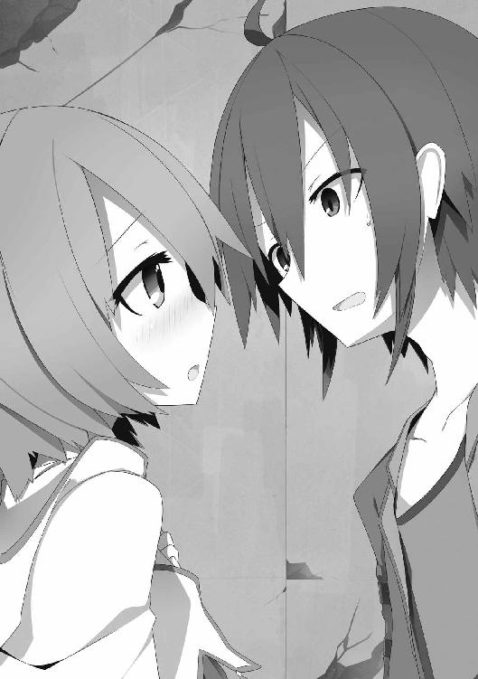
なので、そのままの状態で話してくる。
「あの......覚えたの。魔法を......」
「魔法？」
エフィの魔法といったら隠密一択。
その彼女が魔法を......覚えた？？
「マジでかっ!?」
彼女は無言でコクリと頷いた。
「なんでまた急に」
「恐らく......ワーキャットを偶然倒したことで......経験値が入り......新しい魔法を修得した」
「あーなるほど......。でも、あのピコピコリーン......とかいうのは一体なんなんだ......？」
「あれは魔法を覚えた時に体がゾクゾクとしてきて......自然と口から出ただけ......問題無い」
「あ、そう......」
もしや、魔法を覚える度にピコピコ叫ぶんじゃないだろうか......。
「それで、何の魔法を覚えたんだ？」
「恐らく......焔球」
「おお、定番中の定番魔法だな！ でも、これでようやく攻撃ができるぞ。やったな」
「ふふ......」
彼女は嬉しいのか、頬を染めながらモジモジと体をくねらせていた。
「じゃあ試しに、この場でその新魔法ってやつを見せてくれよ」
「無理」
「なんでー!?」
「使えばまた魔力がゼロになってしまう......。それに魔力量が少ない私が作り出す焔球は、多分、種火くらい小さい......。人に見せるのは恥ずかしい......」
「いやあ、その辺のところは既に俺も知っていることだし、今更恥ずかしがらなくても」
そう言うとエフィはフードを目深に被り直した。そして、
「じゃ......じゃあ......手を握っていてくれる......？」
「!? どうして？」
「初めては......緊張するから......」
「そ、そう。じゃあ手を」
「うん......」
なら、それくらいは......と思って彼女の横に並び、小さなその手を握る。
「......」
「......」
柔らかい。
彼女の体温がほんのりと伝わってくる。
なんだか俺の方が緊張してきてしまったが......。
「よし、いつでもいいぞ」
「手......」
「ん？」
エフィが紅潮した顔で訴えてきた。
「手を繋いでると......余計に緊張する......」
「うおいっ！」
俺達は何を意味の無いことをさっきからやっているんだ!?
そんなふうに突っ込みたいところだったが、
「でも、そうも言ってられないみたいだぞ」
「？」
俺は周囲の異変を感じ取っていたのだ。
「見てみろ」
視線で指し示した先をエフィは見やる。
「!?」
眼前の光景を目にした途端、彼女は息を呑んだ。
先程まで暗闇の中でたむろしていたワーキャットが、一匹残らず俺達にギラついた目を向けてきていたのだ。
醜く変化した姿は、明らかな戦闘態勢。
数にしたら百匹はくだらない。
なんでこんなことになっているのか？
恐らく、エフィが「ピコピコリーン！」と叫んだ時に刺激してしまったのだろう。
それにしても、いくら弱い魔物でも一斉にこの数が襲ってきたらどうなるかは予想が付かない。
「どどどど、どうしたら......！」
エフィは当然、狼狽していた。
「ワーキャットは夜行性だ。よって明るいのが苦手。だからどんな小さな焔球でもいいから撃て。その隙に逃げる」
「わ......わかった」
俺は彼女の魔法詠唱の邪魔にならないよう、やや後ろに下がって控える。
それを確認したエフィは、杖を正面に構え、詠唱を開始した。
僅かな間で杖の先に炎の球が現れる。
それは最初、豆粒くらいの大きさで発現し、次第に大きく膨らみ出してリンゴくらいまで成長する。すぐにスイカほどになり、そこからもまだまだ膨らみ続け――
「って、どこまでデカくなるんだよ!?」
最終的には城門を破壊するような鉄球くらいの大きさにまで膨れ上がっていた。
てっきり豆粒くらいだと思ってたから、驚いた。
「こ、ここここここれ............あの、これ......あわわわわわ......」
作り出した本人まで戸惑っている。
「そのまま前に放て」
ワーキャットは焔球の眩しさに、やや錯乱し始める。ただ、閃光の魔法ほど光量は無い為、そこ止まりだ。
エフィは俺の言う通り、
「えいっ」
と、杖を振って、焔球を前に押し出す。
あれだけの大きさだ。当たればワーキャットはひとたまりも無い。
それで全てが解決。そう思っていた――のだが！
彼女が放った火球が有り得ない方向へ飛んだのだ。
その方向というのは、俺が立っている場所。
「いいぃっ!?」
俺は体を仰け反らせてギリギリで火球を避ける。
熱風が顔の真上を通り抜けていって、そのまま背後にあった壁をぶち抜いた。
攻撃魔法を覚えて初めて分かった、エフィの新たなポンコツポイント。
それは緊張しすぎると魔法がどこへ飛んでいくか分からない！ ということだった。
この状況で幸運だったのは、焔球でぶち抜いた大穴から外光が燦々と降り注いだことだった。
これにワーキャットが怯む。
「エフィ、今のうちだ。行くぞ！」
「......えっ？ あっ、うん......」
魔法を放った影響からか、放心状態でいまだぼんやりとしている彼女を連れ、俺はこのフロアから逃走した。
× × ×
俺とエフィはエレベーターで四階へ。
到着早々、耳に入ってきたのはメリッサの声だった。
「ふっふっふっ、この私には何人たりとも触れることはできないわ。なぜなら、清浄なる光の女神に等しい美しさを持つ私は、穢れの塊であるあなた達を塵も残らず消し去ってしまうから。さあ、私の美貌に身悶えしながら命乞いをするといいわ」
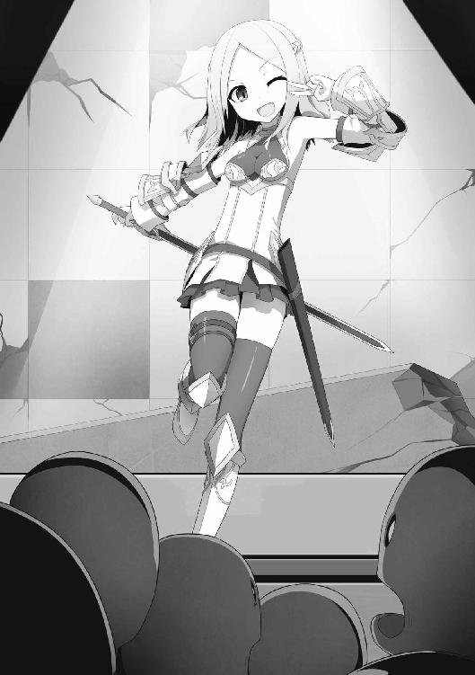
メリッサは独りでそんな台詞をしゃべりながら、色々なポーズを決めていた。
実際には彼女の前にいる数十体の《泥人形》に向かってだが......。
泥人形達はそれほど知能の高い魔物ではないが、彼女が何かを言う度に大袈裟に驚いてざわざわと音を立てていた。
ただ単にメリッサが吐く声に驚いて反応しているだけなんだけど、彼女にとってはそれが気持ちが良かったんだろうな。完全に自己陶酔の世界に浸ってしまっていた。
痛い、痛すぎる！
今も調子に乗って何か口上を述べている彼女に俺は声をかける。
「おい......何やってんだ」
「ふぇぇっ!?」
彼女はギクッと体を飛び上がらせ、気まずそうにする。
「な、何って......ちょっと、この世の理について話していただけよっ！」
「理だって？」
「そうよ、私が美しいのは自然の摂理だもの」
「開き直っちゃったよ!? しかもそれを魔物相手に話してどうすんだ......」
「べ、べつにいいでしょ！」
メリッサは頬を染めてツンと顔を背ける。
「で、どうなんだ？」
「何がよ？」
「何って......独演会を開く為に分散してもらったわけじゃないんだぞ？」
「......」
「パーティハウスの修理代を稼ぐ為と、あとフロアの調査だからな？」
「わ、分かってるわよ......でも......」
そう言ってメリッサは泥人形達を憐れむように見やる。
「特に襲ってもこない相手とやり合う気にはなれないわ」
「なんだ情が移っちまったのか？」
「そ、そんなんじゃないけど......私がしゃべると......その......喜んでくれるんだもの！」
彼女は恥ずかしそうにしながらも言い切った。
俺は頭の後ろを掻いた。
「あのな......あいつらは一見すると感情があるように見えるかもしれないが、ただメリッサの声に反応しているだけだからな？ それに中身だって泥の塊でしかないんだぞ？」
「たとえそうだったとしても、戦闘自体が嫌だわ」
「はあ!?」
「だって、あんまり激しく動いたら......ええと......私のアーマーが......偽物だってバレちゃうもの」
「いやいやいや、もうバレちゃってるから！ 今更隠してどうする！ それに今、相手にしようとしてるのは魔物だろ？」
「嫌なモノは、嫌っ」
「......」
なんつープライドの高さ......というか、わがまま！
確かにあの木製アーマーは激しく動けばカタカタと音を立てて、すぐに金属じゃないことがバレてしまうだろう。でも、そんなことはどうでもいい。
「アーマーはともかく、せっかくそれだけの業物を持っているんだから使わないと勿体ないだろ」
俺がメリッサの腰に据えられた細身の剣を指摘すると、彼女はそれを守るように手を添える。
「そいつなら、たとえ使い手がへっぽこでも、格上相手に充分戦える。当たればだが」
「へ、へっぽこで悪かったわね」
メリッサは膨れっ面を見せる。
「自覚はあったんだな。でも、自分で思っているほど、へっぽこでもないはずだぞ？」
「ど、どういうことよ......」
「なにしろ〝お姫様〟なんだから」
「っ!?」
彼女は、驚いて息を詰まらせた。
どうやら正解のようだった。
メリッサは動揺し始める。
「ど、どどどこでそれを!?」
「転移ゲートの石版を剣の光で照らしてくれた時があったろ？ あの時、刀身に王家の紋章が一瞬だけ浮かび上がったのが見えたからな」
「......！」
「燐光現象は魔法や精霊が宿った剣でしか起きないが、所有者以外が持っても発生しない現象だ。まあそんなことが無くても、その剣を持ってるだけで普通じゃ無いってことは、なんとなく分かるけどな。というわけで、お姫様なんだから変な見栄を張らなくても堂々としてればいいだろ」
俺がそう言うと彼女は拗ねたような表情を見せる。
「そこまで分かってるなら、知ってるでしょ......」
「有翼の獅子の紋章は《フェルゼット王国》のものだ。但し、今は〝亡き国〟だが」
彼女が軽く唇を噛んだように見えた。
「そうよ。一夜にして消えてしまった亡国。だから今の私はお姫様でもなんでもないの。だから財産はなーんにも残ってないし、むしろ借金があるくらい。しかも国一つ買えるくらいの借金がね！ ていうか、メリッサ・シルヴェール・ル・ロアナ・ド・ラ・フェルゼットという名の姫はとうに死んだのよ」
「でも、お姫様ぶろうとしている。なぜだ？」
「べ、べつに、そんなことどうでもいいでしょ」
「......」
俺はふぅーっと息を吐いた。
「メリッサ姫は幼いながらも気丈で誇り高き姫様だと、昔じっちゃんから聞いたことあるぞ」
「えっ......」
「宮廷罠士《ロドルフ・ド・クラウ》が仕えし国はフェルゼット王国。だから俺が罠士だって言っても不思議がらなかったんだな。ま、その話は今はいいとして......。そんな無理にお姫様ぶろうとしなくても、真実姫なんだからどんどん見栄を張ればいいんじゃないか？」
「はああっ!? なによそれ、見栄を張るなって言ったり、張れって言ったり、一体どっちなのよ！」
「ちょっと言い方が悪かったか......。何があってもメリッサ姫が姫であることには変わらないって言いたかったんだ」
「......」
「つーわけだから、どんどん姫をアピールしていこう」
「バ、バカなこと言わないでよ！」
照れ臭そうにしながら口を尖らせる。
満更でもないようだ。
「待てよ......姫で剣士ってことは姫騎士か！ 格好いいー！ 憧れるーっ！」
「ちょっ......やめなさいよ！」
「だって姫騎士って言ったら、男子の大好物だぞ？ この世でその名を聞いて心ときめかない奴はいないって」
「そ、そんなことは......」
「でも本当は、美しさと強さを兼ね備えた最強無比の姫騎士だって信じているんだろ？」
「そ、それほどでも............
あるわよ？」
食い付いてきたーっ！
「じゃあ、そんな姫騎士様だったら。魔物なんてお茶の子さいさいだよなー？」
「もちろんよ！ 私に倒せない魔物なんていないわ！」
メリッサはすごいやる気を見せていた。
効き目がありすぎて逆に怖い......。
「さあ、どんな魔物でも束になってかかってらっしゃい」
王家の剣をブンブン振り回し始めた彼女に一抹の不安を感じながらも、メリッサに頼み事があることを思い出した。
「ああ、その前にメリッサに頼みたいことがあるんだけれど」
「頼み事？ ええ、いいわよ。なんでも頼まれちゃうわよ」
「......」
素直すぎて戸惑う。
「エフィのことなんだけど」
「？」
俺はエレベーターの傍で座って休んでいる彼女に目を向けた。
急な戦闘で心身共に疲れたのと、魔力が切れたのとで、このフロアに来て早々にそこで休んでいたのだ。
「彼女がどうかしたの？」
「メリッサはさ、アーマーみたいなもの以外でも作れるって言ってたよな？」
「ええそうね。布でできているクロスアーマー部分とか、下に着ているアンダースーツとか、このスカートとかも手製よ」
「なら、エフィの為に作って欲しいものがあるんだ」
「べつに構わないけど......何を作るの？」
「それは......」
ちょっと耳を貸してくれ、と視線で促す。
彼女はそのようにしてきたが、やや顔が赤い。
「ごにょごにょごにょ......」
耳を離したメリッサはきょとんとしていた。
「え、そんなことなら。すぐにできるわよ」
「そうか、じゃあ頼む」
了解が取れた矢先だった。
チーン
と、音がしてエレベーターの扉が開く。
中にいたのは――なんのことは無い、リノアだった。
「ほほーい、クロウさん！ 見て下さいこれ！ 一杯、取れましたよー」
彼女が誇らしげに見せてきたのは、先程俺が収得したアイテムと同じ、スライムの涙だった。
それが彼女の両手の上に二十個くらい載っている。
それでも全部合わせて、たった二Ｇにしかならないが、俺達にとっては貴重な収入だ。
「お、やったな」
「へへへ、頑張りました！」
「その調子だ」
「はい！ では十階に行ってまいります！」
「ちょっと待て！」
リノアは敬礼をしたまま固まった。
「どうしてですか？」
「どうしても何も、危険だろ」
「えー、でもここに来た時、まず最初にみんなで揃って六階まで様子見に行ったじゃないですかー。その時は、たいした魔物いませんでしたよ？」
「そりゃ、六階まではな。その上は分からんだろ。それにリノア一人では行かせられない」
「じゃあ全員で行けば問題無いんじゃないですかね？」
リノアがそう言うと、メリッサも同調したように口を開く。
「そうね。みんなで行けば大丈夫よ」
「......」
俺は考えた。
せっかくやる気に満ちている彼女達に水を差すのもどうかと。
それに、エフィは魔力が空っぽ状態で戦力に入れられないが、三人もいればこれまでの魔物はさほど強敵ではない。
「じゃあ、さすがに十階は無理だから、五階から様子を見つつってことで」
「わーい」
「そうこなくちゃね」
喜ぶリノアの所に俺とメリッサが乗り込む。
最後にエフィがゆっくりと立ち上がり後に続いた。
「エフィは後ろの方で休んでいればいいからな」
俺がそう言うと彼女はコクリと頷いた。
「じゃあ行きまーす！ ぽちり」
そんなふうにリノアがごく当たり前のように押したのは、この建物の最上階である二十二階のボタンだった。
「ちょっおまっ!? 何やってんだよ！」
「もうここまできたら五も二十二も大して変わらないですよー」
「そんなことは無いと思うぞ！」
「それに、どうせなら一番上がいいですよ。『愛する者同士と煙は高い所へ上る』とよく言いますし」
「言わない」
チーン
とかなんとかやっている間にエレベーターは二十二階へ到着。
扉が開かれた。
「ここが最上階......」
恐る恐るフロアに足を踏み入れた俺達。
だが、その階層は薄暗いだけで何も無く、魔物すら見当たらなかった。
「ほら、私の勘が当たりましたよ？ こんなもんなんですよ、この建物は」
得意気なリノアが我先にと前へ進み始めていた。
「しかも見て下さい、あれ。ご丁寧に最上階らしく宝箱がありますよ」
彼女がとてとてと小走りで行く先に、言う通りの宝箱があった。
しっかりとした台座の上に置かれたそれは、天井に空いた大穴から降り注ぐ、柱のような光を浴びて輝いていた。
「もしかして臥竜の団が欲しがっているモノってこれのことじゃないですかね？」
リノアが傍に寄って嬉しそうに宝箱に手を伸ばす。
「ちょっと、私にも見せなさいよ」
「私も......見る」
メリッサとエフィも興味が湧いたようで彼女のもとに走る。
一番最後に続いた俺は、歩みの重さに違和感を覚えて足下を見る。
するとそこには砂があった。
この場だけじゃない。
周囲を見回すとフロア全体が砂に埋め尽くされていた。
その光景はまるで砂漠のよう。
こんなのどこから入ったんだ......？
俺は天井を見上げる。
外の砂が入り込む可能性があるとすれば宝箱の頭上にある、あの大穴。
でも――いや、そうか。
そこで俺の思考はある仮説に行き当たった。
「みんな、離れろ！」
「「「え？」」」
彼女達は三人揃ってこちらを振り向いたが、既に遅かった。
そうだよな。これ見よがしに宝箱が置いてあるってのに、それを守る番人がいないわけないのだ。
フロアを埋めていた砂が山のように盛り上がる。
サラサラと流れ落ちる砂の中から現れたのは天井にまで達する大きさの巨大なイカだった。
「大砂烏賊!?」
砂漠の中にある僅かな水脈に棲むと言われている魔物だ。
性格はとても凶暴で、とても俺達のパーティが相手できるようなレベルのものではない。
リノア達はというと、早々にクラーケンの触手に捕まっていた。
「わー、ぎゃー」
リノアはそんなふうに叫び声を上げていたし、メリッサは現実逃避なのか「えへえへ」と無表情で笑っていた。エフィは涙目でおろおろと動揺している。
大砂烏賊はその特性故、獲物の水分を好むとされている。このままでは、彼女達が触手から水分を吸われてミイラになってしまうのも時間の問題だ。
とはいっても俺一人であれを相手しても勝算は無い。
俺はポーチの奥を探った。
「こいつを使うしかないか......」
手の平の上に転がったのはコインほどの大きさの魔法石が四つ。
彫金された台座に嵌まっているそれは、とある目的の為に加工が施されている。
宮廷罠士だったじっちゃんが、俺に残してくれた罠の一つだ。
ようするに、〝超とっておき〟ってこと。
だが今は迷っている時じゃない。
俺はそいつを手に走り出した。
クラーケンの周囲を三角に取り囲むように魔法石を地面に設置。
残った一つは自分の手に。
「一つ目の準備完了。あとは――」
コートの内側から薬瓶を取り出し、スリングショットに据える。
狙うは彼女達を捕らえている触手。
間髪入れずに三連射すると、見事命中。
薬瓶が割れて、中の液体が触手と彼女達に降りかかる。
「うわっ!? な、なんですかこれ!? ひあっ......すごく、ヌルヌルするっ......」
リノアは頬を赤らめながら悶えていた。
「そいつは本来、宝物庫の入り口なんかに設置する《ヌルヌル床トラップ》の為の薬品だ。《ツルマイマイ》という巻き貝から抽出したものなんだが、一度付着すると洗ってもなかなか取れない上に、床の上をいつまででも滑り続けて前に進めなくなる」
「それを今、どうして？ ......ひっ!? く、くすぐったいひっひっひっひいいいいぃっ！」
「あ、忘れてた。それ副作用があるみたいで、皮膚に触れた部分が超くすぐったくなるんだよね」
「うひゃひゃひゃひゃひゃっ......ひぃーっ!?」
リノアは呼吸をするのも苦しそうに笑い始めた。
それはエフィも同様で普段それほど笑わない彼女も、淡い表情を微かに歪ませ、
「ふへへへ......」
と静かに笑っていた。
メリッサに至っては、虚空を見つめた状態で口元から光るものを垂らしていた。
どうやら昇天してしまったらしい......。
でも、それもようやく本来の思惑通りに効果を発揮し始めたようで、彼女達の体が触手からずるりと抜け落ちたのだ。
その姿はまるで子鹿が生まれたかのよう。
「今のうちに離れるんだ！」
俺は解放された三人に向かってそう叫ぶ。
だが――、
「ひょっ、ひょんなこと言っても......ぶひゃっ!?」
「......」
走ろうとしたリノアは、笑いながらすっ転んだ。
「そ、そうよ、こんなので......ひひっ......走れってのが......うひひひっ......無理な話なのよほぉおおっ!? ぎゃぶっ!?」
メリッサも顔面から転んだ。
「ふへへへへっへっ......」
エフィはそんなふうに薄ら笑いながらも一番素早くクラーケンから遠ざかっていたが、滑りすぎて壁に激突していた。
そんな状態でも、しばらく見守り続けることで、なんとかクラーケンから距離を取った彼女達。
「よし、いけそうだな......」
俺は自分が設置した罠の有効範囲内から彼女達が全員出たことを確認すると、手元に残っていた魔法石をグイッと台座に押し込む。
途端、クラーケンを取り囲むよう三カ所に設置した魔法石が赤い輝きを見せた。
輝きは光線に変わり、三角錐を形成する。
俺が手元のスイッチから手を離すと、三角錐の中に捕らわれたクラーケンは一瞬にして三つの魔法石に分散されるように吸い込まれ、消えてしまった。
「捕獲完了っと」
俺はほっと安堵の息を吐いた。
さすが魔物捕獲用の罠。《魔封石》の力は絶大だ。
でも、一度使用してしまったからにはもう使うこともできない。
魔封石の中にはあのクラーケンが封印されてしまっているのだから。
あとは回収して魔法焼却するなり、土に埋めるなりして処分するより他は無い。
使い捨てって悲しいな。
そんなことを思っていると、遠ざかっていたリノア達が俺の所に集まってくる。
「クロウさん、あ、ありがとうございましたはぶぉばぁっ!?」
駆け寄ってきた勢いでリノアは頭から転ぶ。
「大丈夫か？」
「ああ、まだヌルヌルが取れないようです......」
そこへメリッサがやってきて、
「ひひひっ、こっ、転んで......ひひひっ」
「そんなに笑うことないじゃないですかー」
「いや、ひひっひっ......これは副作用がまだひっひっひっー！」
「本当に副作用なんですかねー？」
リノアがジト目でメリッサをにらむ。
「そういえば......えへへへ......宝箱は？」
エフィが楽しそうに笑いながら言ってきた。
俺もああそういえばと、先程宝箱があった辺りに目を向ける。
するとフロアの真ん中に、見覚えのある箱が口を開けて転がっていた。
なんとも趣の無い感じだが、俺は早速近付いて中身を確認してみる。
箱の中にはパズルのピースのようなものが一つ入っていた。
俺はそいつを摘み上げ、まじまじと見つめる。
「これはもしや......」
そう思ったのは俺だけじゃなく、周りにいたリノア達も同様だった。
この形には見覚えがあるからだ。
実際に本物を見たわけじゃないが、多くの冒険者がこれまでに発見してきたことで広くその形が知れ渡っている。
それは古代文明の叡智が刻まれているというアイテム――
「「「「方舟の遺産!?」」」」
全員がその場で呆然と立ち尽くす。
「えっ、それが本当に方舟の遺産だって言うんなら......私達......」
「超お金持ちじゃないですか!?」
メリッサとリノアが顔を見合わせ目を輝かせる。
「でも、なんか違うんだよなー......」
俺はそいつを光にかざして色んな角度から見る。
俺が知っている方舟の遺産は、こんな明らかに欠片のような形ではなく、単体で成り立っているものなんだが......。
「何が違うって言うのよ？ あんた本物見たことあるの？」
「いや無いけどさー......」
「じゃあそんなの分からないじゃない」
「なんとなくだよ」
文句を言ってきたメリッサに、そう返したその刹那だった。
方舟の遺産と思っていた欠片が、嵌めていた革のグローブさえも透過して、俺の指先から体内にめり込んだのだ。
「うわっ!?」
慌ててグローブを脱ぐが、まるでバターが溶けるかのように俺の体内に入り込んでくる。
刹那、脳内に誰のものとも分からない言葉が響く。
『心の臓を捧げよ。我、方舟の使いなり。宿主たる貴様に絶対遵守の規則を課す』
なんだ？
誰だ？
感覚として分かるのは欠片から欠片に関する情報が頭の中に強制的に流入してきているということ。
欠片はそのままここが自分の住処だと言わんばかりに、手の上で魚のように泳ぎ回ってみせる。
そして最終的に右の甲の中心で元の形を透かしたまま固着した。
「なっ、なんですか......今の......」
リノアは不思議なものを見るような目で俺の手を見つめる。
事実、不思議なんだけど。
だが、俺はこいつが何なのか〝理解〟した。
なぜなら、今まさに欠片自身から知らされたからだ。
「そういえば聞いたことある。意志を持った方舟の遺産があるって。そうか......これがそいつか......」
「何を言ってるの？」
メリッサが訝しげに見てくる。
俺は改めて彼女達に向き直る。
「そいつの欠片を集めて完成させると、どんな願いでも叶うらしい。その名は――
《方舟の心臓》」
「「「方舟の心臓？？」」」
「ああ、その方舟の心臓は俺達の世界から地続きに存在しているという別次元の都市から見つかるらしい。あの転移ゲート。俺達が今いる場所。ここってその......都市じゃね？」
「「「!?」」」
はっとなるリノア達。
「ってことは、臥竜の団の狙いはこれか......」
不動産屋もまさかあんな廃屋に別世界へ繋がるゲートがあるだなんて、知りもせず売ってたんだろうな。
しかしこれで臥竜の団の狙いが分かった。
こんなものがあるってことは、次に奴等がやってきた時、無茶な手段に出てくる可能性が高いな......。
まあ何にせよ、こいつをダシに有利にことを進めることができそうだ。
それはさておき......。
「はっはっはっ、どんな願いでも叶うんだって、ひゃははははっ、うけるーっ」
「ぷっ......くくくっ、なんとか堪えていましたが、もう限界ですぶわっはっははははははは」
「くくくくくくく......」
俺は眉間に皺を寄せる。
「お前ら......」
まだヌルヌルの副作用が取れてなかった彼女達の前では、緊張感などまるで無かった。
第五章 一人で野望を語った俺がアホみたいじゃないか
俺達が転移ゲートから帰還し、数日が経った。
パーティハウス内は粗方掃除や応急修理を終え、なんとか生活ができる程度になっていた。
ここまでするとだいぶ愛着が湧いてきて、先よりそのつもりだが、そうそう手放したくなくなってくる。
リビングにはテーブルと椅子が置かれ、ようやく落ち着けるような場所もできた。
そいつは森から切り出してきただけの木材で作ったもので少々荒削りだが、そこがまた趣があって良い。
その椅子に俺達四人は腰かけて、摘んできた野草のお茶をすすりながら穏やかな昼下がりを過ごしていた。
そんな頃合いだった。
「たのもーう」
そんな声と共に入り口の扉が勢い良く開かれる。
ついでに例の金ダライが訪問者の脳天を直撃した。
ゴンッ
「いたっ!? つつつつ......」
涙目で頭を押さえていたのは臥竜の団のメンバーの一人、レナだった。
そう、紅一点だった魔法剣士の彼女だ。
「......」
俺達は痛みに悶える彼女をしばしの間、傍観する。
すると彼女の後ろからドカドカと他のメンバーが入ってくる。
「何をやってるんだ、レナ......。お前は下がってろ」
そう言ってきたのは恰幅の良い鎧の男。臥竜の団のリーダー、ドミニク。
彼はレナが下がるのを確認すると、俺に目を向けてくる。
「邪魔をする」
「邪魔も何も、もう勝手に入ってるじゃないか」
「......」
「で、なんの用だ？」
「そろそろ気持ちの整理がついた頃合いかと思ってな」
「気持ちの整理ねえ」
「改めてお願いする。この家を譲って欲しい」
こちらがはぐらかしていたら、微塵も待つ気は無いのか向こうから本題に入ってきた。
「その答えは前にも言ったはずだけどな？ この家は譲らないって」
ドミニクはフンッと鼻を鳴らす。
「こっちはなるべく穏便に事を終わらせたいと思っているんだがな」
「なるべくとは、どういう意味だ？」
「意味も何も言葉通りだが？」
俺とドミニクは互いに視線を合わせると、揃ってニヤリと笑う。
「とにかく、この家はもう譲る必要は無くなった」
「言っている意味が良く分からないな」
「ちゃんと聞いてたか？ もう家は関係の無い話なんだ」
「？」
俺はそろそろ頃合いかと思い、椅子に座ったまま彼らの方へ向き直った。
そして、
「――方舟の心臓」
「っ!?」
その単語を呟いただけで、彼等は反応を示した。
「......どこでその名を？」
尋ねてくるドミニクに俺は右手の甲を向けて見せた。
そこには方舟の心臓の欠片がグローブを透して発光。はっきりと浮き上がっていた。
ドミニク以下、臥竜の団全員が瞠目する。
「こいつは驚いた......。まさか、お前達も既に手に入れているとはな......。しかし、それならば話は早い。それを俺達に譲ってもらおうか」
俺は無言で首を横に振る。
「なんだ、しっかりしているな」
彼は呆れたように笑うと、以前、俺達の前に出してきた金貨袋と同じものを三袋、床の上に転がした。
「この前の五千万に色を付けて七千五百万Ｇだ。これだけあれば遊んで暮らせるだろ？ さあ、渡してもらおうか」
だいぶ大きな金額を引き出すことができた。
が――。
「こいつは譲れない。たとえ、どれだけ金を積まれようがな」
「なっ......」
ガタガタッ
俺の言葉に騒がしく立ち上がったのは臥竜の団ではなく、リノア達だった。
「ちょっと、クロウ!? あんた何を言い出すのよ！」
「そうですよ。あの後、話し合ったじゃないですか」
「ちゃんと......決めた」
彼女達は俺に戸惑いの視線を向けてきていた。
これにドミニクは、ほくそ笑む。
「なにやら意見の相違が出ているようだが？」
彼の言う通りなのは当然だった。
先日、転移ゲート先から帰ってきた俺達は、早速緊急会議を開いた。
その時に彼女達と取り決めた内容はこうだ。
臥竜の団の目的が方舟の心臓にあると分かった今、次は力尽くで奪いにくることが予想される。
そうなったら自分達のようなポンコツの集まりじゃ太刀打ちできるはずもない。
だったら、そうなる前に方舟の心臓のことを話し、できるだけ良い条件で譲り渡すのが得策だろうということになっていたのだ。
なのにもかかわらず、俺だけが抜け駆けして勝手に〝譲らない〟とか言い出したもんだから、それは驚くのも当然だった。
「譲れないものは譲れない。だって七千五百万Ｇを払っても尚、価値がある代物だとあんた自身が言ってるんだ。そんなお宝をそう簡単に譲ったりはしないだろ？」
「小賢しい奴め......」
ドミニクは鼻で大きく息を吐く。
そして――彼は背中に手をやり、静かに斬馬刀を抜いた。
「「「!?」」」
リノア達の間に緊張が走る。
「そこまでごねるなら仕方が無い」
ドミニクに合わせて、大魔導士のジャマルと大司教のガスパールも杖を体の前に構えた。
ただレナだけが、どうにも乗り気じゃない様子で渋っていたが、周囲に合わせて仕方無くといった感じで形だけの構えを取る。
「ふっ......」
ドミニクの表情が先程までと打って変わって邪悪なものに変わる。
頬の筋肉が引き上がり、目の端が吊り上がる。
「非常に残念だ。こんな形で無理矢理奪うことになるのは」
本性を現した臥竜の団に、リノア達は砂ネズミのように一カ所に固まってブルブルと震えていた。
だが、俺だけは笑っていた。
「フフッ」
「？？ 何がおかしい？」
「本当にそんなことが言えるのか？」
ドミニク達は怪訝な表情を浮かべる。
「あんたさっき俺が方舟の心臓を見せた時に、『お前達も』と言ったよな？」
「!?」
ドミニクは無意識に右手を庇うような仕草を見せる。
「だったら知ってるはずだぞ？ 方舟の心臓を受け入れた〝宿主〟には、それと同時に、方舟の心臓に関する絶対遵守の規則が課せられるってことを」
「......！」
「というわけだから、俺が持つコイツと、あんたが持つモノとを賭けて勝負がしたい。もちろん断らないだろ？」
「っ......」
ドミニクは悔しそうに舌打ちした。
「断れないよな。はい、方舟の心臓の宿主に於けるルールその一、『方舟の心臓を持つ者から勝負を挑まれた場合、原則断ることはできない。断った場合は欠片の所有権は勝負を挑んだ者に移る』そしてルールその二、『勝負に勝利した者に全ての欠片を移譲する』だよな？」
彼等はしばし呆然としていたが、すぐに気を取り直す。
「フフッ、ああ断らないさ。我々にとってはなんのリスクも無いからな。ただそんなことを持ち出してくるお前に驚いただけだ。勝ち目があるとでも思っているのか？」
「どうだろうな？」
「余裕があるように見せても無駄だ。我々はお前達のことは事前に調査済みだ。随分なへっぽこパーティのようだな？ ええ？」
リノア達は不意に視線を向けられビクッとなった。
「ギルドの冒険実績を見ても、お前以外は、ほぼ実戦経験ゼロ。しかもクロウ、お前は罠士とかいう、十年以上前の宮廷罠士を最後に廃業になったような、しみったれた職業のようじゃないか。そんな奴等が我々とまともにやり合うなんて、勝負どうこう以前の問題だと思うが？」
ドミニク達はニヤニヤとした侮蔑の笑みをこぼす。
ただ、レナだけは無理にそれを真似ようとして、引き攣った笑みになっていた。
俺が何も答えずにいると、業を煮やしたのかドミニクが先に口を開く。
「まあいいさ。だが、もう一つの大事なルールを忘れているわけじゃあるまい？ ルールその三、『勝負の方法は挑まれた側に決定権がある』」
「ああ、忘れてないさ」
「それは良かった。なら勝負は三日後。このリザの南西に放棄され百年以上経つ塔がある。あそこは内部に魔物もいないので存分にやり合える。そこで行おう。勝負の方法は互いの仲間の誰かが、天辺に到達した時点で勝者とする。それでいいか？」
「問題無い」
「分かった。では、当日を楽しみにしている」
ドミニクは剣を鞘に戻し、臥竜の団は揃って扉から出ていく。
その最中、最後に家を出ようとしたドミニクがふと足を止めて俺の方へ振り返った。
「最後に一つ質問していいか？」
「なんだ？」
「この規則において、勝負を挑まれた側が圧倒的有利なことをお前は知っていたのか？」
俺はくすりと笑ってみせた。
「さあどうだろうな？」
「......俺が勝負の方法を『この場で戦い、生き残った者を勝者とする』と言い出す可能性は考えなかったのか？」
「それは無いだろ」
「？」
「金や地位のある臥竜の団ともあろう者が、こんな証拠が残るような場所で人殺しなんかするわけないだろってこと。やるなら、人目につかない場所を選ぶだろ普通。そう、たとえば――放棄された塔とか？ さっき剣を抜いたのも脅しにしかすぎないんだろうし。まあここで、勝負の方法は『コイントス』で、とか言われたら俺達はどうにもならないけれど。そこはさすが数々の戦いの中をくぐり抜けてきただけあって頭は戦闘することしか思い付かなかったようで、その辺はすげー助かったって感じかな。あとはアレだ。ルールその四、『欠片の移譲は取り決めた勝負の結果に限り行われる』ってのがあるわけで。ここで俺を殺して欠片を奪おうにも、その瞬間に欠片自体を失ってしまう可能性がある。わざわざ、そんなリスクは取らないだろ？」
「......お前という奴が少し分かったような気がする」
ドミニクは不敵な笑みを浮かべ、それで立ち去ろうとする。
そこへ俺が、これだけは伝えておかねば、という一言を告げる。
「あっ、これは関係の無い話だけど、さっき剣を抜いた時、お前、手が震えてたぞ？」
「！」
これにはドミニクもさすがに心外なようで、険しい顔で振り向いた。
「......なんだと？ お前は言っていいことと、そうでないことの判別ができないようだな？」
明らかに怒り心頭の様子。その手は再び背中にある剣の柄にかかっていた。
「ああっと、やっぱ気のせいだったかなー......？」
茶化すように言うと、彼は冷めた顔になる。
「口に気を付けた方がいい。俺達にはやりようなんて考えればいくらでもあるのだからな」
ドミニクはそうとだけ言い残し、団のメンバー達と共に去っていった。
× × ×
というわけで、俺は方舟の心臓の総取りを賭けた勝負を取り付けることに成功したわけだが......。
「聞いてないわよ！」
メリッサが物凄い勢いで突っかかってきた。
俺はリビングで例の椅子に座っていたのだが、彼女が吐息を感じるくらい迫ってきたので思わず仰け反ってしまった。
「まあ、誰にも言ってないからな」
「何？ その、してやったりーみたいな顔は！ なんで嘘つくわけ？」
「だって、全部話しておくと、お前等みんな顔に出ちゃうタイプだからさ、こっちだって上手く交渉できないじゃん」
「そ、そんなことないわよ？ というか、あんな約束してどうするのよ！ 私達に臥竜の団と勝負しろって言うの？ 勝てるわけないじゃない！」
「でも、どちらにせよ奴等との戦闘は避けられないぞ。だったら勝負方式を取った方がずっとマシだろ？」
「そ、それは......」
「まあ、勝負中にも相当汚い手を使ってくるだろうけどな」
「......だ、だめじゃないっ！」
メリッサは憤怒していたが、その顔には不安が滲み出ている。
それはテーブルを囲んで座るリノアやエフィも同じだ。
なので俺は、言ってやる。
「あのさ、そんなに不安がる必要無いと思うぞ。みんな〝自分達みたいなのは臥竜の団に勝てない〟そう思っているようだけど......それは勘違いだからな？」
「ど、どういうこと？？」
メリッサが焦ったように聞いてきた。
他のみんなも顔が「？？」になっている。
「それは、勝負の当日になれば分かるさ」
「ええっ!? なんで教えてくれないのよ！」
彼女があまりにも身を寄せてくるもんだから、俺は仕方無く口を開く。
「まあ一つだけ言えることは、『罠は既にお前達の中へ仕掛けた』ってことくらいかな」
「「「罠？？」」」
メリッサ達は揃って首を傾げる。
「それに方舟の心臓が揃ったら、みんな嬉しいだろ？」
「は？ なんでよ？」
「だって、どんな願いだって叶うんだぞ？」
「それって所有者のクロウだけの話でしょ」
彼女は呆れ気味だった。
「そんなことは無いぞ。俺が一言、メリッサの為に何か叶えてやってくれーと言えばそうなるし、なんなら一個の願いを百個にだって増やせるんだぞ？」
「っぇ!? それホントにっ!? そんな反則みたいなお願いもオッケーなの!?」
すげー喰いついてきた。
「ああ、全然ＯＫだ。俺の中の方舟の心臓もそう告げてきたし」
「そ、それは素晴らしいです！」
リノアが向かい側からテーブルに乗り上げてくる。おい、行儀が悪いぞ......。
「では私は、クロウさんと結ばれるようお願いします」
「おいっ!? 勝手に変な願いをすんな！」
「変とは失礼ですね。これくらいで変だとか言われたら、残り二百八十八の願いは全部〝変〟ってことになっちゃいますよ？」
「どんだけ野望を持ってんだよ！ ってか、全部そんな願いなのかよ！」
そこへ、おとなしく座っていたエフィがぼそりと呟く。
「私は......あがり症を......治す」
「そうそう、願いってのはこういうのだよ！ エフィを見習え」
「......」
エフィはポッと頬を淡く染めた。
その様子を見ていたメリッサが怖々聞いてくる。
「じゃあ、もしかして......莫大な借金とかも返せる？」
「ああ、返せるな」
リノアも、
「ということは......私も魔法が使えるようになるんですか？」
「ああ、問題無く使えるようになるだろうな」
「「!!」」
二人は互いに顔を見合わせた。
「ちなみに俺は方舟の心臓を使って、罠士を超メジャーにし、罠士が栄華を極める時代を作りだ――」
そこで彼女等三人は俺の言葉を打ち消した。
「願い事、いっぱい余りそうですから、ケーキ百年分とかもいいですねー」
「ああ、それいいわね！」
「私も......食べたい......」
「いや、むしろ世界中の有名菓子店とパティシエを家の前に呼んで作らせた方が色々楽しめていいかもしれません」
「じゃあ私は、この前食べて美味しかったから、世界中のラーメン店を呼び寄せるわ。毎日、色々な種類を食べ放題よ」
「私も......食べたい......」
「お前等、自分のことしか興味無いのな！」
一人で野望を語った俺がアホみたいじゃないか。
とか思っている間もリノアとメリッサは欲望への暴走が続く。
「とりあえず、最初はパーティハウスをぴっかぴかにします！」
「そうよね。生活する場だものね。身の回りのものは大切。じゃあ私は真っ白なドレッサーが欲しいわ」
「そんなのいりませんよ」
「なんでよ？」
「わざわざ鏡に映すような体型なんてしてないじゃないですか。無駄です無駄」
「はあ!? あんたみたいな、ちんちくりんに言われたくないわよ！」
「どうぞ、なんとでも言って下さい。私のメンタルはメリッサさんほど弱くありませんから。そんなことより、私はダブルベッドが欲しいのです。もっちろん、それで毎晩クロウさんと♪」
「あんたにはダブルの棺桶の方がお似合いよ」
「なっ......」
「私が二度、あの世に送ってあげるわ」
「それは私の対しての挑戦と見なして良いですか？」
「ええそうね。いいわよ」
「ケーキ......百年分......」
リノアとメリッサの啀み合いを前に、エフィが指を咥えて呟いていた。
なんにせよ彼女達が、臥竜の団との対決に向けてやる気を見せたのは収穫だった。
モチベーションってのは大切だよな。
× × ×
あれから二日の時が過ぎていた。
その間に俺は、勝負の場となる塔へ一人で下見に行ったり、当日までの準備を整えたりしていた。
他のみんなはというと、連日森へ出て弱めの魔物を狩ってみたりとか、そんな程度の戦闘訓練を行っていた。
それは臥竜の団との対決を前に己の欲望だけを燃料にして、なんとか頑張っているという姿だった。
――そして勝負前日の晩。
彼女達が各部屋で寝静まった頃、俺は一人、パーティハウスを抜け出して、家のすぐ前にある開けた場所に向かう。
明日に向け、そこで道具の手入れや点検を行う為だ。
なんで今頃、こんな場所で？
というのは、ここ二日、塔へ下見に行っていたことで時間が取れなかったのと、室内でそれをやると彼女達を起こしてしまい兼ねないからだった。
そんなわけで、家の前に鎮座している平たい大岩に足を向ける。
そこが一番作業がし易そうな場所だったからだ。
だが、歩み始めてすぐにあることに気が付いた。
先客がいたのだ。
大岩の上に座り、星空を見上げながら佇む小さな体。
俺は、それがすぐにリノアだと分かった。
そのまま近付くと、足音で気が付いたのか彼女はゆっくりと振り返る。
「あっ......」
俺の姿を認めた直後、僅かに驚いた様子があったが、すぐに柔らかい表情に変わった。
それはいつもの騒がしい彼女と違い、やや落ち着いた雰囲気。
「どうしたんだ？ こんな所で」
俺は言いながら彼女の隣に腰かける。
するとリノアは、ややうつむき加減で、
「いやー、柄にも無く眠れないんですよ」
「え？」
「って、言ったら心配してくれますか？」
「おい」
真面目に聞こうと思ったら、彼女は笑う。
「はははっ、冗談ですよ。ちょっと寝苦しかったので涼みに出ただけです。すぐに戻ります。それよりクロウさんは何をしに？」
「俺は道具の点検だ」
「ああ、なるほど。マメですねー」
「そういうリノアは大丈夫なのか？」
「私は、大丈夫ですよ。毎日、鞄の中の薬瓶を数えてニヤニヤしてますから」
「特にニヤつく必要は無いだろ」
「まあ、そうなんですけどね」
「......」
「......」
なんだろうか......この微妙な空気と沈黙は。
いつものように軽口を叩いてくれればこちらも突っ込みようがあるのだが、今はなんだか気まずい空気が流れるだけだった。
「「そういえばっ――」」
「「あっ......」」
全く同時にハモってしまった。
「なんだ？ 言いたいことがあったんだろ？」
「いえ、私のは大したことじゃないんですよ。クロウさんの方こそなんです？」
「俺も特には......」
「......」
またもや静寂。
どうすんだよこれ......。
空を見上げれば星空がやけに綺麗で、それがまたなんとも気持ちをざわつかせる。
「覚えてます？」
「......え？」
唐突にそう聞かれたので答えようがなかった。
「私がパーティを組んで欲しいって誘った日のことですよ」
「ああ、あれか。まるで押し売りのようだったよな」
交流酒場でずっと俺のことを見ていたと思ったら、突然アピールしてきたのを覚えている。
それもちょっと前のことだが、だいぶ遠い日のように感じる。
「なんで私がクロウさんとパーティが組みたかったか、分かります？」
「それは......」
自分で言うのもなんだが、本人がそう言っていたのだから仕方が無い。
「......一目惚れとか言ってたぞ？」
「ぶっぶー、それは嘘でしたー」
「はあっ!? じゃあどうして？」
「さあ、どうしてでしょうね？ うふふふ」
彼女は意地悪そうに笑う。
だがそこには嫌みは無く、むしろ可愛げのあるものだった。
「知りたいですか？」
「教えてくれるのならな」
「じゃあ、キスしてくれたら教えてあげます」
「何、またバカなことを言って......」
俺はいつものように軽くあしらおうとした。
だが、目の前にいる彼女は瞳を閉じ、こちらに向かって小さなピンク色の唇をちょこんと突き出してきていた。
そこには茶化すような雰囲気はまるで感じない。
「おい......」
声をかけると彼女は薄く瞼を開き、ほんのり赤い顔で訴えてくる。
「もうっ、恥をかかせないで下さいよ」
「お前が勝手になんかやってんだろうが......」
俺がそう言うと、リノアはぷぅーと頬を膨らませる。
だがすぐにこちらに向き直り、真剣な眼差しを見せた。
「冗談なんかじゃないんですよ？」
「え......」
「だって、明日を迎えたら......私やクロウさんの身にもし何かあったら......もう出会えないかもしれないんですよ？ そうなってしまったら私は......」
彼女は今にも泣き出しそうで、身を震わせていた。
「なんだそんな心配か」
「......はい？？」
「前にも言ったろ？ 大丈夫、俺が考えていることが上手く嵌まれば、明日は必ず勝てる。だからそんなに心配すんな」
「......」
リノアはしばらく黙っていたが、納得いかないようで、
「でもそれは、上手く嵌まればの話ですよね？ 嵌まらなかったらどうするんですか！」
「心配性だなあ......。いいか？」
俺は彼女に向かって明言する。
「罠ってのは嵌まるようにできている」
「......はい？」
「嵌まらなけばただのゴミ。嵌まるからこそ罠という。俺は罠を仕掛けた。それだけだ」
「そ、そんな屁理屈みたいなのを......」
「屁理屈かどうかは明日になれば分かるさ」
「......」
「あと、リノアにできることは〝自分を信じること〟くらいか」
そう言って俺は彼女の頭をポンッと優しく叩いた。
リノアは、いまだむくれた顔をしていて不満がある様子。
だが――
「でも、やっぱりキスして下さい」
そう言って急に身を寄せてきた。
「ちょっ!?」
肩と肩が触れ合い、彼女の熱を感じる。
目を向ければ、月明かりを浴びた銀髪が硝子細工のように煌めいて、まるで妖精がまとうような淡い光を放っていた。
正直、
綺麗だな......。
そう思ってしまった。
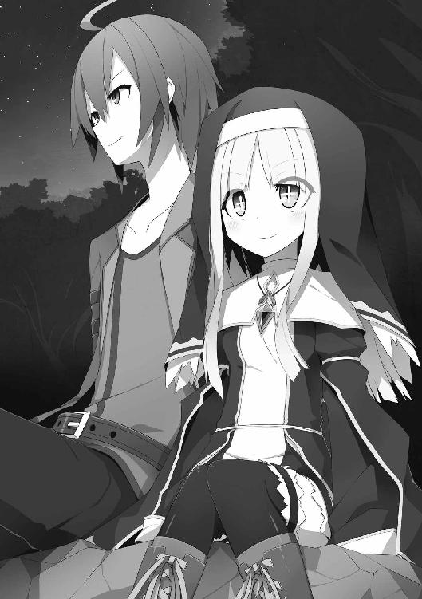
リノアは岩の上に置いていた俺の手に小さな手を重ねてくる。
そして彼女のほんのり上気した顔が間近に迫る。
「ほんの少しだけ......私を......見つめていて下さい......」
今にも消え入ってしまいそうな儚げな表情で見上げてくる。
俺もそれで彼女の役に立てるのなら。
リノアの顔を見ていると、いつの間にかそう思えるようになっていた。
俺は覚悟を決め、彼女の肩に手を伸ばそうとした時だった。
ホー
「「!?」」
突然、フクロウの鳴き声が間近で上がって、驚いた拍子に互いに身を離した。
それにしても、やたら大きな鳴き声だったが、どこにいるんだ？
そう思って背後を見やる。
だって真後ろの辺りで聞こえたから。
するとそこにはフクロウではなく――
「「ホー」」
フクロウの鳴き真似をしているメリッサとエフィが立っていた。
「のわぁっ!?」
俺とリノアは驚いて、岩の上から転がり落ちる。
そんな俺達のことを彼女達は冷淡な視線で見つめていた。
「二人だけで何してんのよ？」
メリッサが不機嫌な様子で聞いてくる。
「いや、特に何も......」
「何も......ねえ」
不審そうに俺とリノアを交互に見る。
「メリッサ達こそ、こんな所で何やってんだよ」
逆に俺が問うと、エフィがぼんやりした顔で言ってくる。
「眠れない......」
「そうそう、この状況で眠れる方が珍しいわよ」
そこで地面に転がっていたリノアがようやく身を起こす。
しかし、なぜだか妙にハイテンションで。
「じゃあ、じゃあ、じゃあ、みんなでトランプでもしませんか？」
「ああ、どうせ眠れないんだし、それもいいわね」
「うん......やる」
彼女達はすぐに同調し、パーティハウスへと戻っていく。
俺は「え、そうなの？」という感じで後に続く。
結局、明け方近くまでトランプをやる羽目に。
だがゲーム中、一人、また一人と睡魔に襲われ撃沈してゆき、最終的には全員そのままテーブルで朝を迎えることになるのだった。
◆ ◆ ◆
少女は夢を見ていた。
ひどく幼い頃の夢だ。
昔から彼女は母親に鈍臭く、愛嬌も無く、出来が悪いと言われ続けて育った。
それはもう毎日のように。
あまりに日常すぎて、自分にとってもそれが当たり前になっていた。
だが少女は、ある日から教会に預けられることになった。
これからは神の下で平等に暮らすことができる。
そう思っていたのだが、たとえ場所が変わろうとも人は人だった。
教会の子供達の間でも虐げられる毎日。
耐えきれなくなった彼女はついに教会を飛び出した。
だが着の身着のまま出てきた幼い子供には行く当ても無く、いつしか自分がどこに向かって歩いているのかも分からなくなり、傷だらけの裸足を引き摺って、終いには森の中で動けなくなってしまった。
そんな少女がふと傍らに目を向けると、そこには木の枝に張られた蜘蛛の巣があって、一匹の蝶が罠に嵌まり捕食されるのを待つだけの状態になっていた。
「ああ、この蝶も私のように鈍感だから、こんなふうな目に......」
同種の存在を認め、なぜだか嫌悪よりも安心してしまう。
「私もこんなふうに食べられてしまうのかな？ 誰に？ ふふっ......」
自分で口にしておかしくなってしまった。
空を見上げれば木漏れ日は消え、夕闇が迫っている。
魔物の勢力が強まる時間帯だ。
この森だってそれは例外ではない。
そのうちに鳥の声も、虫の声もしなくなり、森は静寂に包まれた。
そんな時だ。
ガサガサッ
と枝葉が揺れる音がして、少女は覚悟した。
だが彼女の前に現れたのは、同い年位に見える赤銅色の髪をした少年だった。
彼はこの界隈で罠を使った狩猟の手伝いをしているのだという。
森の中でうずくまっていた少女を不審に思った彼は、こんな場所にいては危険だと、自分が暮らす山小屋に招き入れてくれた。
そして温かい食事と一晩の寝床までをも提供してくれた。
驚いたのは彼が一晩中、少女の話を淡々と聞いてくれたことだった。
特に話したいことがあったわけではない。
でも、頷きながら黙って聞いてくれる彼を前に、いままで鬱屈と溜め込んできたものが自然と出てしまったのだ。
小屋の外がうっすらと明るくなり、朝靄の中で小鳥の声がし始めた頃、少女は昨晩見た、蜘蛛の巣にかかった蝶のことを思い出し、彼にそれを話した。
すると少年は、罠は動物や人や魔物を嵌めて、捕らえたり、傷付けたりするものだけど、罠の中には人を〝生かす罠〟っていうものもあるのだと教えてくれた。
「そんな罠を仕掛ける人がいるの？」
そう少女が尋ねると、少年はこう答えた。
「罠士という冒険者さ。そして俺はそれの見習い」
夜が明けて、少女は教会に戻ることにした。
途中まで少年に道案内してもらうと、あんなにもたくさん歩いて迷った道程が、実際にはほんの僅かだったことを知る。
本当に鈍臭いなあと思いながらも、その時少女は決意した。
神の祝福を受け、正式な聖職者となったら、罠士の助けになろう――と。
だから冒険者として初めてパーティを組む相手は、絶対に――
罠士の彼だ。
だが少女は、この数年後、皮肉にも運命に見放されたことを知る。
第六章 バカと罠は高い所が好き
ソフロニア王国の王都、リザ。
そこより南西へ二十キロル（約二十キロメートル）ほどの場所に建つ塔。
そこに俺達は来ていた。
黄色い土が埋め尽くすような荒野の中に建つ塔は、首が痛くなるほど高く、天に向かってそびえ立っている。天辺には黒いドーム状の屋根もうっすらとうかがえた。
かつては魔術師達が怪しげな儀式を行っていたような場所だが、放棄されてから百年以上の時が経っている為、石造りの外壁は崩れかけ、風化が激しかった。
早速、塔の入り口に向かうと、既に臥竜の団が待っていた。
金の無い俺達はここまで歩きでやってきた為、かなりヘトヘトだったが、彼等は自前の飛竜に乗ってきたようで、ケロッとした態度でいた。
傍らに係留されている飛竜を横目に、俺はリーダー格であるドミニクの前に進み出る。
「少し休憩してからにするか？」
彼は馬鹿にしたようにそう言ってきた。
「いや、いい」
「そうか、ならすぐに始めよう」
ドミニクが目配せすると臥竜の団のメンバーが近くに集まってくる。
改めて確認すると右から大魔導士のジャマル、その隣が大司教のガスパール、更にその隣が魔法剣士のレナ、そして公爵騎士のドミニクだ。
こうして改めて彼等を見るとさすがは歴戦の冒険者という風格が漂っている。
対してリノア達は、緊張でガチガチになっているのと微妙な寝不足で、ややゲッソリとした感じだった。
「では改めて勝負方法を確認する」
ドミニクが威圧感のある声でしゃべりだした。
「この塔の一番上に互いの仲間の誰かが到達した時点で勝者とする。それで間違い無いか？」
「ああ、間違い無い」
「では既に誓約自体は成立しているが、勝負開始の合図として改めてここで誓約を行う」
ドミニクは自分の左胸に拳を当てる。
俺も同様の形を取った。
互いの手の甲に欠片の形が浮かび上がる。
それを相手に向け――
『心臓を賭けて！』
揃ってそう口にした後、甲と甲を打ち鳴らした。
直後、勝負は開始された。
眼前で旋風が巻き起こる。
舞った土埃の中に臥竜の団の姿はもう無かった。
「早っ!?」
メリッサが目を丸くして言った。
彼等は俺達には全く目もくれず、塔の内部へ。
最速到達者が勝者という条件な以上、それは至極当然な行動だった。
遅れてはなるまいと俺達も動き出す。
だが、一階に足を踏み入れると銀の鎧を身に付けた者が待ち構えていた。
それは魔法剣士のレナだった。
彼女は円形になっているフロアの真ん中に立ち、俺達に剣を向けていた。
ここに一人残り、俺達を食い止める作戦か？
と最初は思ったのだが......。
レナは長剣を水平に掲げ、こう叫んだのだ。
「ここは私に任せて先へ行けぇぇっ！」
意外に透った声が、フロア内に木霊する。
「......」
「......」
「......」
「......ん？」
俺達は呆然としてしまった。
言葉の内容からして、仲間に告げた台詞であることは確かなのだが......問題はその仲間は既に二階より上に行ってしまっているらしく、彼女以外誰もいないのだった。
「おい......」
「なんだ？」
彼女は仏頂面を向けてくる。
「それ、誰に向かって言ってるんだ？」
「血の誓いを交わした輩に対してだ」
「その輩がどこにいるんだよ！」
「私の心の中にいる」
「何、センチメンタルな方向にオチを付けようとしてんだ」
「と......とにかく、ここから先は何人たりとも通すわけには行かない！」
レナはくるりと剣を翻し、体の前に構える。
すると刀身に小さな稲妻のような光がまとわりつき、放電現象を起こし始める。
剣に雷撃の魔法が乗っている状態だ。
さすがは剣と魔法が両方使える魔法剣士......と言いたいところだったが。
「物凄く意気込んでいるところに悪いんだけどさ」
「？」
「何人どころか既に三人通らせたから」
「......っぇ!?」
レナは辺りをキョロキョロと見回して、このフロアに俺以外いないことに今更気が付きギョッとする。
俺はあんまり彼女がぼんやりとしているもんだから、リノア達に目配せして先に行けと指示を出していたのだ。
案の定、レナは階段を上るリノア達に全く気付く様子も無く、簡単に素通りさせてしまっていた。
「困ったー......これは困ったー」
彼女は頭を抱えて本気で悩み始めていた。
「......」
なんなんだこれは......。
レナの行動にいちいち翻弄されそうになるが、俺はこれまでのことで彼女のことがなんとなく分かり始めていた。
「おい、なんでそこまで困るようなことがあるんだ？」
「そ、それは......いとも簡単に敵を通らせてしまったからに決まっているではないか」
「本当にそうか？」
「え......」
やや動揺の色がうかがえた。
「臥竜の団のメンバーは皆、俺達みたいなのはいつでも簡単に倒せる。そういうスタンスだと思っていたがなー。だからこそ、こちらには一切目もくれずに最上階に向かって行ったわけだし。なのにもかかわらず、なんでお前は俺達を構おうとするんだ？」
「それは......その......」
今まで冷静さを保っていた彼女の表情が崩れ始める。
「これは俺の予想でしかないが、もしかしてお前――俺達を守ろうとしてないか？」
「っ!? そそそそ、そんなことあるわけないだろっ！」
彼女は両手を目の前で振り、顔を赤くしている。
この狼狽えっぷり......。
当たりを引いたかもしれない。
「そもそも、出会った時から様子がおかしかったよな。パーティハウスを俺達から取り上げようっていうのに、一人だけ無意味なことばかりしていたし、方舟の心臓の存在を出してからも、やっぱり一人だけやる気が無さそうな雰囲気だった。なんていうか、メンバーに形だけ合わせようとして、全然合わせ切れていない感じ」
俺がそこまで言うと、彼女は拗ねたように内股同士を擦り合わせ始める。
「それは......臥竜の団には誘われたから入っただけであって......しかしそれも悪くない気分でもあったので、言われるがままに入団したのだが......団の方針に疑問を感じることも多々有り......かといって退団を言い出すこともできす......って、私は何を言っているのだっ!?」
レナは勝手にしゃべって、勝手に真っ赤になって慌てていた。
「やはり、そんなところか」
「......」
彼女は言い訳するのを諦めたのか押し黙ってしまった。
「ってことは、やっぱり、わざとらしくここで俺達を待ち構えていたのも、他の臥竜の団のメンバーから傷付けられないように守ってくれたってことだろ？」
「ふっふっふっ、よくぞ見破った。だが私は、まだ二つの変身を残している。貴様はそれを見ずにこの場で地に伏すことになるのだっはっはっはっはっ」
「はいはい、すごいすごい」
「......」
レナはせっかく大袈裟にふんぞり返って高笑いしてみたものの、俺に簡単にあしらわれたことで気持ちの行き場が無くなってしまったようだった。
今では物凄く恥ずかしそうにしていた。
というわけで、彼女は空気の読めない痛い子だと当初は思っていたが、実はその正反対で気遣いすぎるくらいの気遣い屋さんだということが分かった。
俺はそんな彼女に、
「ありがとな」
と、素直に礼を述べる。
するとレナは、頬を染めながらもわざと突き放すような言い方をしてくる。
「きっ......貴様に礼を言われる筋合いなど無い！ な......なぜなら、貴様とはその......間接キッスをした仲なのだからな......。あ、あれは......その......なかなか恥ずかしかったのだ......そう、でも......そもそも............ブツブツ......」
彼女は一人、壁に向かって拳を打ち付けながら、時折照れ臭そうに悶えていたので、俺は構わず上階へと向かうのだった。
× × ×
俺が塔の二階にやってくると、一階同様、何も無い円形フロアの真ん中に、
エフィと大魔導師のジャマル。
メリッサと大司教のガスパールが、それぞれに対峙していた。
さて、塔の最上階を目指し、颯爽と駆け出していった臥竜の団の面々が、なぜまだこんな低階にいるのか？
それは、俺が施した足止めが効果を発揮していたからだった。
そう、俺とドミニクが勝負の約束をしたあの日から二日の猶予があったので、俺は一人、下見と称してこの塔を訪れていた。
その際に、塔のあらゆる場所に罠を仕掛けておいたのだ。
準備期間が短かった為に、《跳ね返り床》や《吊り天井》のような大掛かりなものは無理だったが、それでも充分な足止めになると踏んだのだ。
今もジャマルは、足下に大量にバラ撒かれた鉄製の棘、《マキビシ》に翻弄されていた。
「くっ......また、こんな！」
これまで常に冷静沈着で、あまり感情の起伏を見せなかったジャマル。
そんな彼が煩わしそうにしながら苛立ちを露わにしている。
しかもこのフロアに設置しておいたキラービーの巣から無数の蜂が飛び出して彼を襲うもんだから、なかなか一カ所に留まってはいられない。
それがまた彼の苛立ちを濃くさせる。
ちなみにキラービーは黒色を敵と認め、攻撃する習性がある。ジャマルが着ているローブは炭のような黒だった。
だが、そうはいっても少し凶暴なだけの蜂。
ジャマルが魔法で凍りつかせる度に蜂の数は減ってゆき、最終的には巣ごと破壊されてしまった。
彼はようやく動きを止め、一階から上がってきた俺をにらみ付けてくる。
これはお前の仕業だろうという目で。
「全く、くだらない。こんなもので、どうにかなるとでも思っているのか？」
「別に、それだけでなんとかしようなんて思ってないさ」
言いながら視線をジャマルの足下へ向ける。
彼も釣られるように同じ場所を見た。
一見すると何の変哲も無い石床のように見える。
だが、ジャマルがそこから足を上げようとすると、異変に気が付いた。
「う、動けない!?」
良く見ると彼の靴底やローブの端から粘り気のある粘液が糸を引いているのがうかがえる。
「そいつは《ネバリコウモリ》の唾液から精製した超強力粘着トラップだ。そんじょそこらの怪力じゃ抜け出せないぞ？」
「っ!?」
そいつは彼を中心とした半径一メトル（約一メートル）ほどの床に塗られていた。
ジャマルは蜂を避けながらマキビシが無い方へ、無い方へと動くうちに知らぬ間に誘導され、粘着床を踏んでしまったのだった。
「さあ、エフィ。的は固定された。あとはお前が決めるだけだ。あいつを伸してやれ」
「......へっ!? 私？？」
ジャマルからだいぶ離れた位置でぼんやりとしていた彼女は、急に振られて慌てた。
俺とジャマルへ交互に視線をやり、オロオロとしている。
「むっ......無理......」
彼女はブルブルと首を横に振った。
すると遠くから嘲笑う低い声が聞こえてくる。
ジャマルだ。
「ふっふっ、そいつはそんなものだろう。何しろ塵か埃程度の魔力しか持っていないのだから」
「......」
エフィはビクッと震えたままうつむいてしまった。
「知っているぞ？ お前達のことは一応は調べたのだからな。なんでも隠密しか使えない上に、体内魔力量が酷く少ないので、すぐに枯渇してしまうとか？ 彼女を誘ったことがある冒険者の話では、話しかけた途端に魔法で幽霊のように消えてしまったと言っていた。そんな人間が私を倒すだと？ 笑いしか出てこないな」
「さあさあ、ちゃちゃっと済ませちゃおう」
「って、おいっ!? 人の話を聞いているのか！」
俺がエフィの傍まで寄っていき、そんなことを言っていると、ジャマルが手を震わせ憤慨していた。
「ああ、なんとなく聞いているさ。でも、こっちは準備があるんだ。ちょっと黙っててくれないか？」
「だっ......だまっ!?」
こんな遠くに離れていても彼がなんとなく額に青筋を立てているのが分かる。
「はんっ......そもそも隠密しか使えない人間がどうやって攻撃するというのだ？」
「ところがどっこい、エフィは先日めでたく焔球を覚えたんだ。な？」
「......」
振ると彼女は恥ずかしそうに縮こまってしまった。
「わっはっはっはっ、焔球？ そんな初級中の初級魔法で挑もうというのか？ これは傑作だ！ あっはっはっはっ」
ジャマルは腹を抱えて笑っていた。
しかし、しばらくすると鋭い眼差しを向けてくる。
「いいだろう、その魔法、受け止めてやる。但し、私が無傷であったなら、この足下のネバネバを取ってもらおうか？ あるんだろう？ その方法が？」
「ああ、あるぞ。ここに剥離剤がな」
俺はコートの内側から小瓶を取り出して見せ、そのまま元の内ポケットにしまう。
「ならいい。さあいつでも来るがいい」
ジャマルは杖を持っただけで、これといって何もせず待っていた。
「ああ言ってるから、こっちも準備するぞ？」
「でも......私......ちゃんと撃てない。緊張すると......明後日の方向へ飛んでいく」
エフィは泣きそうな顔で訴えてきた。
確かに、古代都市で彼女がワーキャットを相手にした時は、焔球があらぬ方向に飛んできて、危うく俺が黒焦げになるところだった。
「緊張しなければいいんだろ」
「えっ......そ、そんなの......できない」
無茶を言い出した俺に彼女は戸惑う。
だが、俺は無茶では無い方法を既に彼女が身に付けているローブに仕込んでいた。
「メリッサが縫い付けてくれた、それ。被ってみろ」
エフィが着ているローブにはフードが付いている。
そのフードには以前無かった、猫の顔が刺繍されていた。
俺が前に裁縫が得意なメリッサに頼んで、縫い付けてもらったものだ。
「......これ？」
それが何だという感じでエフィは首を傾げるが、素直に頭に被ってくれた。
彼女の頭の上から猫耳が立ち、前面には細い目が描かれている。
「さあ、エフィは今、この時から、猫だ」
「......にゃ!?」
彼女は思わずそんなふうに声を上げてしまった。
エフィは猫が大好きだった。
それはワーキャットをじゃれさせていた時に知ったこと。
あの時の彼女は俺の声が聞こえていないくらいに集中していた。ならば、その猫そのものに彼女がなってしまえばと考えたのだ。
「可愛い可愛い、ふかふかの毛と、しなやかな体を持った猫だ。そして獲物をジーッと見つめ、捕らえようとしている」
「にゃいーん」
エフィの目が猫目のように一点を凝視した。
無論、その中心に捉えたのはジャマル。
にらまれた彼は一瞬だけギョッとなったが、すぐに平静に戻る。
「よし、一発食らわせてやれ」
「ふんっ」
猫のように鼻を鳴らした彼女は杖を構え、口内でごにょごにょと詠唱する。
するとすぐに炎の球体がスイカほどの大きさに膨れ上がる。
「ふぁいにゃー！」
エフィがそう叫んだと同時に焔球は放たれた。
炎の球はスピードに乗って一直線に飛ぶ。
対するジャマルは、
「ふん、やはりただの焔球。所詮はこの程度」
侮蔑を込めて呟き、杖を一振りする。
すると彼の体を包み込むように透明な殻が現れ、クリスタルのような煌めきを見せる。
それは物理や魔法攻撃のダメージを緩和させる防護の魔法だ。
焔球ごとき、魔法を放たなくとも防護のみで相殺できると踏んだのだろう。
だが、そこはさすがに臥竜の団。ジャマルは着弾寸前で何かに気が付いた。
「......！ まさか、これは......!?」
慌てて彼はもう一つの魔法を僅かな時間の間に繰り出した。
杖の先から、氷の竜が飛び出す。
それは相当高レベルな極大魔法だ。
氷竜が焔球を飲み込もうと大きな口を開ける。
だが――
パリーン
「うぇっ!?」
両方の魔法が激突した瞬間、なんとも軽い音がして氷竜があっさりと砕け散ったのだ。
そのまま焔球はジャマルの土手っ腹にぶち当たり、体ごと吹き飛ばし、背後の壁をも突き抜けて下へ落っこちた。
「ああぁぁぁぁぁぁ......っ」
断末魔の叫びが遠退いてゆく。
まあ、ここ二階だから死にはしないと思うけど。一応、防護もしてたし。
あと、剥離剤使わなくても取れたから良かったな、とも付け加えておこう。
そんなわけで、事が済んで一番驚いていたのはエフィだった。
フードを取ると、きょとんとした顔で、
「どうして......？」
と呟いていた。
「あのな、エフィはずっと体内魔力量が少ないから、魔法を一回使っただけで枯渇すると思っていただろ？ それは勘違いだ」
「え？？」
「エフィの場合は逆に体内魔力量が多すぎるんだ。ただ、放出量も大きすぎて、それを一回で使い切ってしまうっていうだけの話だったのさ」
「えっ？ ええ？？」
彼女は信じられないといった顔をしていた。
「なんでそれが......分かった？」
「ワーキャットとやり合った際、焔球がやたら大きくなった時があっただろ？ あれは集中が足りなくて力を一点に集約できていなかったから。そこでピンときたんだ。まあ、とにかくエフィは頑張ったよ」
「......」
彼女は照れ臭そうに頬を染めた。
そんなふうに和やかな空気が流れ出した時だった。
「ぎゃふっ!?」
離れた場所で、悲鳴が上がった。
見ればメリッサが床に倒れていた――――というよりも転んだ？
そうだ、まだこの場では彼女とガスパールが対峙していたのだ。
メリッサはなんとか立ち上がり、彼に立ち向かって行くが剣術は未経験に等しい上に、元々そんなに運動神経が良くないので、ガスパールの杖に簡単にいなされてしまう。
「なんだ、なんだ、全然やり甲斐が無いなー」
彼は白い外套をなびかせながら、非常につまらなそうにしていた。
メリッサは剣を手に突っ込んでいくが、ほとんど勝手に自分で転んでいるようなものだったからだ。
そもそも死霊系以外には攻撃魔法を持たない聖職系職業。
物理攻撃を生業とする剣士を相手に彼の方がずっと不利なのにもかかわず、この有様だった。
「別に俺は可愛い子と遊ぶのは全然苦にはならねえーんだけどさ、そろそろ飽きてきたかなー」
大司教とは思えない軽薄なしゃべり。チャラチャラとした表情。
そんな彼は立ち上がったメリッサの体を下から舐めるように見回す。
視線を敏感に感じ取った彼女の方は、咄嗟に身を横に構えた。
「そうだなー、上はドミニクの奴に任せて、俺は遊んじゃおうっかなー」
下劣な笑みを見せたガスパールは、らしからぬ素早さでメリッサの懐に踏み入ると、杖を下方から叩き上げた。
彼女は咄嗟に後退ったが、僅かにアーマーを擦る。
直後、カコーンという軽い音がして、床に何かが転がった。
それはメリッサの胸当てだった。
「っ!?」
片側のアンダースーツが剥き出しになった彼女は、慌てて手で押さえる。
キッと相手をにらみ付けた顔はやや上気していた。
「おっ、いいねーその顔。遊び甲斐があるってもんだ」
ガスパールはニヤニヤしながらメリッサの反応を楽しんでいた。
そこで俺の傍にいたエフィが、
「助けないと......」
そう言って、駆け出そうとしていた。
「ちょっと待った」
「？」
俺はエフィの肩を掴んで止めた。
彼女も「なんで？」という顔をしている。
魔力がすっからかんにもかかわらず果敢に立ち向かおうとするエフィには感心するが、俺は首を横に振る。
「あいつなら大丈夫だ」
エフィは不安な表情をしていた。
それが当然の反応だと思う。
でも、メリッサなら大丈夫だ。俺の言ったことを忘れていなければ。
ガスパールは今度はゆっくりとメリッサに歩み寄ろうとしていた。
一歩、一歩、足を進める最中、床に転がった彼女のアーマーを爪先で蹴飛ばす。
軽い音がして、彼は首を傾げた。
「なんだこれ？ もしかして木製か？」
試しに踏みつけて割ってみると、木目に沿って粉々に砕けた。
「うわ......マジで木じゃん。こんなの身に付けてたの？ お姫様の癖に」
「!?」
メリッサは自分の素姓がバレていたことに動揺を見せる。
俺達のことを事前に調べ上げていた彼等にとっては、メリッサが一番簡単に身の上が知れそうでもある。
「ああ、そっかー、フェルゼット王国って、あの馬鹿な王のせいで莫大な借金背負って滅亡しちまったんだっけ？ なるほどねえー、だからこんな貧乏臭いもん付けてんのか。姫様も大変だなー」
「......」
彼女は何も返さず黙ったままだ。
「でも、まだお姫様気分なのもいかがなもんだろう？ こんなちんけなお飾りを付けて歩くくらいなら、いっそのこと俺の奴隷にでもならないか？ もっと上等な服を買ってやるぜ？」
「......」
「なあ聞いてんのか？ さっきからずっと黙ってるけど」
「......っさい」
「あーん？ 何？」
ガスパールは蔑むように、わざと聞き耳を立てるような仕草をする。
直後、
「うるっさいわね!!」
「いっ!?」
彼はあまりの大音量に両耳を手で塞いでいた。
「何が奴隷よ！ 私はフェルゼット王国の第一王女、メリッサ・シルヴェール・ル・ロアナ・ド・ラ・フェルゼットよ！ 跪くべきは貴方の方よ！ この△％＄＃＊＠野郎！」
「ふあっ!?」
姫様らしからぬ言葉に驚いていたガスパールだったが、次第に怒りが湧いてきたようで、
「この......言わせておけば！」
杖を振り上げ、メリッサに攻撃を仕掛ける。
その戦い方は最早、聖職系の戦い方ではなかった。かといって無闇矢鱈に打撃を繰り返すわけでも無く、むしろ熟練した棒術のようだった。
メリッサはなんとか剣を使って防ぐが、それもそう長く続くものでもない。
「ほら、ちゃんと避けないと綺麗な肌に一生残る傷が付いちゃうぜっ！」
台詞と共に強めの突きが繰り出される。
野生の勘というものからは随分とかけ離れた存在であったメリッサだが、それでも本能的に危機を感じ取ったようで、彼女は後ろに転げるような形で避け、見苦しい格好だが、そのまま床を這いずるような姿勢でガスパールから距離を取った。
「はっはっはっ、なんだそりゃあ？ 無様だなあ」
彼は侮蔑の眼差しを彼女に向ける。
確かに格好がいいとは呼べない状態だった。
必死に逃げ惑う姿もそうだが、今の彼女は綺麗な金髪もくしゃくしゃで、装備はボロボロ。
腕や膝に付いているアーマーは、辛うじて剥がれ落ちず、吊り下がってプラプラと揺れていたのだから。
「なんなら俺が全部脱がしてやろうか？ その方が綺麗になるぜ？」
ガスパールが卑しい目で彼女を見る。
するとメリッサは意外にもあっけらかんとした様子で答えた。
「そうね」
「？」
「でも、自分でやるわ」
そう言って彼女はぐらついていたアーマーを力尽くで剥ぎ取り、辺りに打ち捨てる。
それだけじゃない。
無傷だった部分も全て取り外したのだ。
残されたのは、さっぱりとしたアンダースーツのみだった。
「偽物で飾らなくても、中身は本物の姫よ。私は私なんだから綺麗で当然じゃない！」
メリッサは誇らしげに胸を張った。
吹っ切れた様子で、その瞳は清々しいまでに前を向いていた。
ガスパールはというと、彼女の突然の行動に一時は驚いていたものの、すぐに薄笑いを浮かべ始める。
「へっへっ、そうかい。そっちから誘ってくれるってんなら、こっちも遊び甲斐があるってもんだ。ならばっ......」
楽しみを見出した彼は、冷たい視線の奥に野獣のような猛りをギラつかせ再びメリッサに向かってくる。
その時、俺は見逃さなかった。
メリッサの口元がニヤリと歪んだのを。
その意味はすぐに現れる。
勢い良く一歩を踏み出したガスパールが途端、
「っあ!? 何だ!?」
すってん！ と絵に描いたような見事さで転んだからだった。
「いててて......どうなってんだ？ ん？ これは......？」
彼は床に撒かれているヌメり気のある粘液に気付いたようだった。
そう、それは俺が以前、古代都市でクラーケンと対峙した時に使用したヌルヌル床トラップ用の粘液だ。一度付着したらなかなか取れない上に、皮下吸収した粘液の副作用で笑いが止まらなくなる例のヤツ。
俺が特定の場所にそいつを撒いておいたのだが、それを事前にメリッサに伝えておいた。
そこへ彼女は上手いことガスパールを誘導して嵌めたのだ。
「ぷぷぷぷぷっ、なあーに？ その無様な格好。臥竜の団が聞いて呆れるわねー？ ぷぷっ」
メリッサは口元に手を当て大袈裟に笑ってみせる。
「なっ......くそっ......ちょっと油断しただけだひゃっ!?」
彼は立ち上がろうとして今度は顔から行ってしまった......。
「ぷぷっ」
「く、くそ......こんなもので......ふはっ!? ふははははっはははひぃぃーっ！ な、なんだこりゃあふあっはっははーひぃー......」
ガスパールはなんとか杖を突いて立ち上がったが、急に襲ってきたくすぐったさに悶え始める。
これをチャンスと見たメリッサは王家の剣をしっかりと握り、構えを取った。
彼があの状態ならば、たとえ剣術の嗜みが無くても、たとえ運動音痴でも――当たる。
機を逃すまいと彼女は駆けた。
だが――
――コケた。
「ぎゃうっ!?」
物の見事にすってんと。
それはもうガスパールよりも豪快に。
「......」
「......」
俺とエフィは虚空を見つめていた。
せっかく相手を嵌めたというのに、自分が罠の存在を忘れてどうするよ！
しかし、転んだ勢いが凄かったのか、彼女の体はそのまま床を滑り続け、ガスパールに一直線に向かっていた。
「いける！」
そう踏んだ彼女は腰で滑りながら剣を構えた。
このままの勢いでガスパールに一撃をお見舞いするつもりだ。
対する彼もそれを察知したようで、咄嗟に防護の魔法を唱えた。
だが彼は、あまりのくすぐったさにその魔法を唱えるだけで一杯一杯だった。
まともな構えも取らず、直接メリッサの一撃を受け止める。
剣の刃がガスパールの周りを覆う防護の魔法に触れた途端、ガシャンとガラスの割れたような音がして、そのまま彼の体を押し出す。
「っおえっ!?」
ヌルヌルの床の上を彼は氷上のように滑っていき、そのまま先程エフィが空けた壁の大穴から下へ落ちていってしまった。笑いながら。
「あああああぁぁぁぁ............ひゃひゃひゃ......」
「......」
メリッサはというと、剣を床に突き刺してなんとか落下を免れていた。
粘液まみれだったけど。
「や、やったわ......うひ、うひひひっひひっ」
「......」
なにはともあれ、彼女はガスパールを退散させることができていた。
そんな笑いが止まらないメリッサとエフィを前に俺は、あることを告げて、一人上階へと向かった。
× × ×
どれだけ上っただろうか？
同じような見た目のフロアをいくつも通り越し、俺は塔の上を目指して進んでいる。
感覚的には最上階までは間近だ。
この辺りまで来るとさすがに事前に仕掛けておいた罠も品切れ。なのにもかかわらず、一向にリノアの姿が見えない。
俺の予定では、もうちょっと下の......それこそ中層の辺りで、
「疲れちゃいましたー。てへ」
とか言って、へたり込んでいる彼女を回収する予定だったんだが......。
そうこうしているうちに俺は祭壇のあるフロアへ出る。
下見の時に来ていたから分かるが、この上はもう最上階だ。
俺は急いで祭壇奥にある階段を上った。
最上階は、太い円柱がフロアの屋根を支えるように円形に並び、天井の中央から大きな水晶の球がぶら下がっているような場所だった。
それ以外は他のフロアと同じで、何も無い。
だが、その最上階に足を踏み入れた途端、俺の目を釘付けにするものがあった。
リノアが倒れていたのだ。
修道服のそこかしこが刃物で切られたようにパックリと口を開け、所々に血が滲んでいるような箇所もうかがえる。
彼女をそんなふうにしたのは言うまでもない。
倒れているリノアに歩み寄る赤い鎧。
ドミニクだ。
彼は伏している彼女に追撃を加えようと、手にしている斬馬刀を振り下ろそうとしていた。
俺はすぐさま、腰から鉄製のニードルを抜き、奴に向かって投げ付けた。
しかし彼は避けること無く、剣でニードルを叩き落とす。それはまるで羽虫を払うような軽さ。
曲がった金属の欠片が床に転がった。
「なんだ、まだ上がってこれた奴がいたのか？ ジャマル達はどうした？」
ドミニクは、なんとはなしにといった感じでそう聞いてくる。
「てめえの仲間のことはどうでもいいんだよ。リノアに何をした」
俺は相手を見据えた。
「何って、見ての通りだろ？ ちょっと仕置きをしているに決まってるじゃないか」
彼は悪びれる様子も無く、平然とそう言い切った。
そして俺に、手の甲にある方舟の心臓の欠片を見せてくる。
「俺はこの最上階に一番乗りだった。なのにもかかわらず、欠片には何の変化も起きなかった。この状況にはクロウ、お前のようないけ好かない奴がまた何か小細工でも仕掛けたんじゃないかと思ってな。仲間の一人に尋問していたところだ」
「お前......」
俺が少しずつ間合いを詰めながら、奴をにらみ付けた時だった。
「ううっ......」
「！」
呻きを上げながら、リノアが体を起こしたのだ。
「へへへ......クロウさん。心配しなくても私は大丈夫ですよ......。ちょっと階段上りすぎて疲れちゃっただけですから......」
「おい......無理すんな」
彼女は十字架鞄を杖になんとか体を支えているような感じだったが、自力で立ち上がれるくらいなので致命傷となるような傷は負っていなさそうだった。
そこへドミニクが苛立ちを露わにする。
「さあ、これはどういうことだ？ なぜ俺のもとに欠片が来ない！ 説明してもらおうか」
俺は頭を掻く。
「あのさー......塔の一番上に到達した者が勝利者だって、あんた自身が決めたことだろ？」
「何を言って......」
「ここは最上階であって一番上ではないってことさ。だから一番上って言ったらこの天井の上にある屋上。つまりあのドーム型の屋根の天辺ってことだろ？」
「なっ......!?」
ドミニクは虚を衝かれたような顔をしていた。
「そんなに驚かれてもな......。それに、己の勘違いで仲間を傷付けられちゃ堪ったもんじゃない」
「ふん、そうか、ならいい」
彼はブツブツと独り言のようなことを言った後、再びリノアに剣を向けてきた。
「なんのつもりだ！」
ドミニクは鼻で笑う。
「ふん、知れたこと。俺達は地位や名声を持った英雄、臥竜の団だぞ？ その名を落とすような可能性は一切断っておく必要があるってことだ。悪い噂が立っては動きにくくなるからな。それに勝負内容に〝相手を殺してはならない〟とは無かったはずだからな。取り敢えず消しておく」
「取り敢えずで消されて堪るかよ」
奴の剣が振り下ろされる前に俺はリノアに向かって飛んだ。
彼女の体を包み込むと、そのまま低い体勢で跳躍し、一閃を避ける。
残された刃はリノアの鞄を弾き飛ばしていた。
どうやら良い具合に鞄が盾になってくれたようだ。
「無駄に大きい物を持ちやがって......」
ドミニクは不満を漏らしながら床に転がった十字架鞄にふと目をやる。
鞄は彼の一撃で蓋の一部がやや破損し、中身の薬瓶が露わになっていた。
「ん？ なんだこいつは......ポーションか？」
彼は口に出してみて何かに気が付いたようだった。
「ははっ、なるほど......そういうことか」
含み笑った後、リノアを見る。
「聖職者なのにもかかわらず、これだけ痛めつけても一向に回復魔法を使わない。なぜだと思っていたが......お前、魔法が使えないのか？」
「......」
俺の腕の中で彼女の体がビクッと震えたのを感じた。
「ギルドで調べてみても、お前の情報は冒険経験無しの聖職者というだけで、他になんの情報も無くてな。それがまさかこんな、鈍臭い奴だったとは。これは傑作だ！」
「......」
「ここまで出来が悪いのは見たことが無い。それでいて聖職者を名乗っているんだからな。詐欺にもほどがあるというものだ！ お前、何の為に冒険者をやってるんだ？」
「......」
彼女の震えが止まらなかった。
俺が知るリノアは、たとえ魔法が使えなくても前向きで、使えない自分を認めた上で、じゃあ自分には何ができるのか？ そういうふうに明るく考えられる人間だった。
でも、彼女の心の奥底には、植え付けられ、擦り込まれ、逃れられないものが存在する。
ドミニクは、そんな過去の鎖に彼女を縛り付けるような禁句を口にしたのだ。
「というか、何の為に生きてるんだ？」
さも愉快に彼は尋ねてくる。
俺は自分の中に熱を感じ、奥歯を鳴らした。
「その質問は、そのままお前に返しとくよ」
「......！」
ドミニクが渋い表情を向けてくる。
「後な、たとえ生まれながらにツイてなくても、自分を信じる力じゃこいつは誰にも負けねえよ。それでも、もし蜘蛛の巣に引っ掛かってしまったのなら、助けてやればいいだけの話さ」
俺の発言にドミニクは、何の話だと言わんばかりに肩を竦めていた。
逆に腕の中のリノアは、非常に驚いた表情で俺の顔を見上げていた。
そんな彼女に告げる。
「それができるのが仲間ってもんだろ」
「......！」
一拍の強い鼓動が俺の体に伝わった。
ドミニクは、
「それでは仲間の蝶も一緒に引っかかってしまうだけじゃないか」
と一人で嘲笑していたが、俺はその隙を突いてリノアに耳打ちをする。
「俺が今から奴の気を引く。その隙に鞄まで飛べ」
「......え？ どうするんですか？？」
「鞄に取り付いたら、例のカノン砲をあいつにぶち込んでやるんだ」
「はい!? それに何の意味があるんですか？ 相手の体力が回復してしまうだけですよ？」
「いいから、言われた通りにやるんだ。但し、ありったけ全部だ。撃ち尽くせ」
「......」
彼女はまだ合点がいかないようだったが、時間的な余裕は無い。
俺が視線を送ると、リノアも覚悟を決めたようで頷いてくれた。
「よし、行くぞ」
立ち上がった俺はさっきと同じように腰ベルトからニードルを数本引き抜き、ドミニクに向かって投げつけた。
「なんだ、またそれか？ 学習能力の無い奴だな」
投擲に気付いた彼は先程の同様に斬馬刀でそいつを叩き落とす――が、今度は同じような結果にはならなかった。ニードルを弾いた途端にそれ自体が炸裂、煙幕を撒き散らしたのだ。
「ふっ......くだらない真似を」
視界を遮る煙にドミニクはうざったそうにするだけだ。
だが、リノアが目的の場所に辿り着くには充分な間だった。
彼女は拾い上げた鞄を脇に抱え、膝を突いて体を固定すると、側面のレバーを引く。
それで十字架は太い砲身を持ったカノン砲へと変形した。
リノアはすぐさまドミニクの額に照準を合わせる。
フルプレートの赤い鎧をまとっている彼に対し、皮下吸収する砲弾の唯一有効な箇所がそこしか無かったからだ。
彼女は迷わずトリガーを引いた。
薬瓶が高速で射出され、ドミニクの頭部を狙う。
しかし、彼はこれをすんでの所で身をよじって避けた。
リノアは躊躇わず次弾を発射。
だがこれも、人とは思えない鮮やかな身のこなしでかわす。
彼女は連続して撃ち続けるが、砲弾は彼を追うように壁や天井を穿つばかりで全く当たる気配が無い。
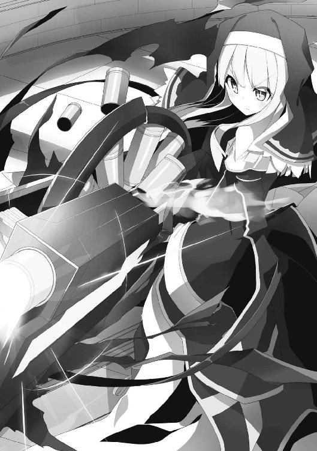
それどころか、一気に間合いを詰められる。
「っ!?」
そして、リノアの頭上から斬馬刀が振り下ろされようとしていた。
今から避けようにも、彼の俊敏さからは最早逃げられない。
彼女が迫る恐怖に思わず目を瞑ってしまった時だった。
ギンッ
と金属同士がぶつかり合う音がして、彼女の頭上で斬馬刀が静止していた。
「なんのつもりだ......」
ドミニクが剣を止めた相手をにらみ付ける。
「......レナ！」
そこには黒髪の魔法剣士が立っていた。
彼女は彼を直視できないようだったが、意を決したように再度、目を剥く。
「これ以上、団には付いてゆけない」
レナがそう告げると、ドミニクは、
「ふんっ、バカが！」
と言って彼女の剣を弾き、細い体ごと吹き飛ばした。
そこで生まれた再度の隙。
俺は離れた場所から目だけでリノアに伝える。
撃て――と。
彼女は再びドミニクの頭に照準を合わせる。
しかし彼もそれは想定の内。態勢を整えるのは早かった。
あとはトリガーが引かれるのが早いか、剣が振り下ろされるのが早いかの差だけだ。
そのタイミングで俺は、叫んだ。
「手が震えてるぜ？」と。
「!?」
俺が彼にこの台詞を言うのは、これで二回目だ。
だが、たったそれだけのことで、ドミニクは一瞬だけ剣を持つ自分の手に視線をやってしまった。
それが致命的だった。
直後、薬瓶の砲弾が彼の額で炸裂していた。
「ぐはっ!?」
ドミニクは撃たれた衝撃と痛みに悶え、そのうちに......。
「いっつつつつ............っん？ な、なんだ......気持ちいい!?」
彼は苦悶の表情から一転、爽快な顔立ちになっていた。
それもそのはず。
この砲弾は撃たれた衝撃でダメージは負うものの、それ以上の回復効果を得るからだ。差し引きで、ポーションの半分の回復量ということになる。
ドミニクが動揺している間に、リノアは俺が言った通りにトリガーを引き続ける。
「うううううううううっ、ぜえぇぇぇぇんぶっ、当たって下さぁぁぁぁぁぁいっ!!」
反動で砲身が前後し、その度にコックを引いて新しい薬瓶を装填する。
「いてっ!? 気持ちいい!? いてっ!? きもっ!? いてっ!? きもっ!?」
砲弾が撃ち込まれる度に、ドミニクの表情が苦と楽を繰り返す。
結局、全弾撃ち尽くした頃には、彼はフラフラになっていた。
「な、なんだ......これは......酷く......気分が悪い......」
それはまるで、飲み過ぎて吐き気をもよおしている酔っ払いのような姿だった。
「知らないのか？」
「......あ？」
俺が尋ねたことに対して返答するのさえキツそうだ。
「特にダメージを負ってもいないのに大量に回復薬を服用するとどうなるのか」
「......!?」
ようやくドミニクは理解したようで、ぐったりと床に腰を下ろしてしまう。
「......ポーション中毒か」
「正解」
ポーション中毒――それは回復薬の過剰摂取で起こる、酷い吐き気や頭痛、めまい、全身倦怠感などの症状のことを言う。摂取量にもよるが、発症すれば成人の大人が立っていられないほどの状態になると言われている。
たとえ効果が半減したポーションでも、あれだけ撃ち込めば中毒にもなるってもんだ。
既に戦意を喪失して座り込んでしまったドミニクは、青い顔で聞いてくる。
「なあ......なんであの時、俺に......『手が震えているぜ』......なんて言ったんだ？ そんなはずは無いのに......思わず意識を取られてしまった......」
「〝ゴーレム効果〟って知ってるか？」
彼は辛うじて首を横に振る。
「実際には有りもしない否定的な言葉を前もって言い続けることで、相手はその言葉に引き摺られ、本当にそうなってしまうことを言うんだ。まさに操られるだけのゴーレムのようだな。まあ、お前の場合は擦り込むほど時間をかけられなかったから、なんとなく気になってしまう程度だったが」
「......それは、罠士の技なのか？」
「まあ、そんなとこかな？」
「......」
ドミニクはそのまま口を噤んでしまった。
と、そこへリノアが近付いてくる。
「クロウさん！ クロウさん！」
「おお、リノア。良くやったな」
「そうじゃないんです！ あれ！ あれっ！」
なぜか彼女は慌てた様子だった。そして天井を指差している。
「ん？」
見上げると、天井の中心からぶら下がっていた水晶のような球体が、ブラブラと意志を持って揺れていた。
「ああ、起きちまったか」
「え？ 起きたって何の事ですか？」
「ほら、さっき天井に撃っちまった砲弾がいくつかあったろ？ あれがまずかったな」
「だから、何の事ですかー」
リノアが聞き返した直後、天井に亀裂が入る。
崩落は早かった。
そして新たな脅威の登場も早かった。
天井の半分がぱっかりと崩れ落ちたと思ったら、屋上から巨大な物が舞い降りてきたのだ。
大きな爪が床を掴むと、塔全体を震わせるほどの震動が伝わってくる。
「ひゃあっ!?」
リノアが驚いて俺のコートを掴む。
俺達の前に姿を現したのは超重量の生き物。
黒い鱗と、大きな翼。
血を固めたような赤い眼を持つ、邪竜だった。
特にドラゴンの中でも人に危害を及ぼすという邪悪な竜だ。
そのブラックドラゴンが耳を劈くような咆哮を上げると、尻尾の先にある水晶が赤く燃える。
そう、天井からぶら下がっていたあの水晶のようなものは、奴の尻尾だったのだ。
そして、塔の天辺を覆っていたドーム状の黒い屋根。あれはドラゴンが翼を伏していた形が屋根のように見えていただけだった。
「なっ......なんで、あんなのがこんな所に、いいいるんですかぁぁぁっ!? ていうか、その言い方って......クロウさん、あれのこと、事前に知ってたんですか!?」
「まあな。下見に来た時に、いるなーとは思ってた」
「思ってた......って教えといて下さいよーっ」
「教えてどうにかなるもんでもないだろ」
「そ、それはそうなんですけど！ 心構えの問題です！」
俺とリノアが言い合っている間に、起こされて不機嫌なドラゴンは尻尾の水晶を赤く光らせていた。
知能の高いドラゴンは魔法を使うという。恐らく、それだ。
一瞬、力強く水晶が発光したと思った直後、辺りに散乱していた天井や壁の瓦礫が何カ所かにまとまり始める。
それは瞬く間に人の形を成し――ゴーレムになった。
「ぎゃああ、またなんか出たー」
「騒がしいなあ......」
そんなやり取りをしている俺達の背後でドミニクが口を開く。
「なるほど、そういうことか。最近リザの南西地域の村がゴーレムに襲われる被害が多発していたが、こいつの仕業だったのか。俺達がトトリの村で倒したのもこんな奴だった」
ドミニクはそう語るも、彼自身、床に座ったままで戦う気力は無い様子。
迫ってくる複数体のゴーレム。
これをレナが先程から切り捨てているが、その度に復活してきて意味が無い。
ドラゴンそのものに雷撃魔法を放つも、完全に無効化されてしまっていてダメージは全く与えられていないようだ。
「ど、どうするんですか!? 臥竜の団でも歯が立たないようですし、ゴーレムを使役できるような高等ドラゴン相手に私達だけじゃ......」
そこで俺は、おもむろに腰の革ポーチから、とあるアイテムを取り出した。
「そんな時に、これの出番」
手の中にあったもの。それは小さな台座に嵌まった魔法石だった。
見せてすぐにリノアはそれが何か気付いたようだった。
「これって......私達が古代都市の城でクラーケンに襲われた時に使った魔封石じゃ？」
「そう、当たり」
「でも、これはもう使用済みで使えないって言ってませんでした？」
「使用済みは、使用済みなんだけど、こういう使い方もある」
そう言って俺は、何の前置きも無しに魔法石を台座に押し込んだ。
直後、塔全体が大きく揺れる。
「なっ!? ななんですか!?」
リノアだけでなく、レナやドミニクも体を揺さぶられる大きな震動に動揺を見せる。
「地震......いや、塔全体が崩れかかっているのか？」
肌で感じ取ったのか、剣を止めたレナがそう呟いた。
ドミニクは崩壊した壁の隙間から塔の下をのぞく。
「な......なんだあれは!?」
驚愕の声を上げた彼の反応に、俺はやや得意気になる。
「以前、俺達が捕獲した大砂烏賊さ」
俺達も壁穴から下を見る。
すると一階の辺りでクラーケンの足がうねうねと蠢き、塔を破壊していた。
「クラーケンが封印済みの魔封石を一階に事前に設置しておいて、それを今、こいつで封印解除してみたってわけ」
「はあああ!? そんなことしてどうするんだ？ あんな巨大な魔物を建物の中で解き放ったら......下手したら塔ごと倒れるぞ！」
「だって、そのつもりだったし」
「え......」
ドミニクは声が出なかった。
そんな彼を捨て置き、俺は新たな道具をポケットから取り出す。
それは黒い卵のようだった。
するとリノアが不思議そうにのぞいてくる。
「なんですかそれ？」
「ネバリコウモリの羽で作った折りたたみ式滑空機だ。骨組み入らずでコンパクト。超便利だぞ。ちなみに粘着トラップに使った材料の残り物だ」
「へー、滑空機ですかー......滑空......？ っええええええ!? ってことは、まさかここから飛ぶ気じゃ!?」
「そのまさかだ。さあ行くぞ」
卵大の塊を数回揉み込むと、コウモリの羽が三角の傘のように一瞬で広がる。
素材を活かした骨のグリップを掴み、もう片方の手でリノアの体を抱きかかえる。
密着すると彼女の頬が染まるのが分かる。
「レナも早く！ 俺に掴まれ！」
ゴーレムをあしらいながらやってきた彼女も、状況を理解してすぐさま引っ付く。
やっぱり、ちょっと頬が赤かった。
「お前等、しっかり掴まってろよ！」
俺達が壁に空いた穴から飛び下りようとしていたその時、
「おい！」
ドミニクが救いを求めるような目でこちらを見ていた。
俺はポケットに入っていた、もう一つの塊を奴に投げる。
「あんたは自分でなんとかしな」
そう言い放つと俺達三人は塔の最上階から飛び下りた。
リノア達がぎゅっとしがみつくのが分かる。
気持ち良く滑空すると、塔が崩壊して行く姿が視界に入ってくる。
クラーケンは塔を食い尽くすように破壊し、上から降ってきたドラゴンと絡み合う。
格闘する二匹が完全にもつれ合ったところで俺は再び魔封石のスイッチを押した。
それで二匹諸共、石の中へ。
俺達が地面に着陸する頃には塔は完全に倒壊していて、瓦礫の山だけが残っているだけだった。
そんな瓦礫の山の頂上で手を振る者達がいる。
メリッサとエフィだ。
彼女達は俺が言ったことを守って、外に待避。
塔が完全に崩れたところで天辺に上れと告げておいたのだ。
× × ×
「ということで、俺達が勝者だな」
俺はドミニクにそう告げた。
彼はなんとか着陸を果たしていたが、完全に疲れ切った様子で覇気が感じられない。
「ああ......」
返答すると、彼の手から欠片が離れ、泳ぎ始めたそれは地面を伝って俺の中に入り込む。
右手の甲で二つの欠片が合わさり、また違った形を形成して落ち着いた。
「よし......っと」
俺はメリッサ達とも勝利の喜びを分かち合う為に、その場を移動しようとした。
するとドミニクが虚ろな目で聞いてくる。
「まさかお前......最初から俺達ごと......」
「ああ、まあな。最初にお前達を行かせておいて、俺達の方はある程度の階層で引き返す。そうしたらクラーケンで塔を破壊。残った瓦礫にみんなで上って大勝利！ って寸法だったんだけど、ちょっとだけ予定が狂っちまったかな」
「......」
「あー、そんなしけた顔すんなよ。生きてたんだからいいじゃないか」
俺はちょっと離れた場所で瓦礫を背に休んでいるジャマルとガスパールの姿にも目を向けながら言った。
「じゃあ、もういいか？」
「最後にこれだけ聞かせてくれ」
「なんだ？」
「どうして俺達は、あんなポンコツな奴らに負けたんだ？」
ドミニクはリノア達の姿に目を向けながら言った。
塔の瓦礫が折り重なり合う場所で、彼女達は文句を言い合いながらも楽しそうにしている。
「〝ラベリング効果〟ってのがあってな。こちらがこうなって欲しいというレッテルを相手に勝手に貼り付けることで、自然とその方向に向かうもんなんだよ。人には褒められたい、認められたいという承認欲求があるからな。たとえ出来が悪くても褒めてやれば、いつの間にかできるようになるのさ。それが心の中に仕掛ける〝人を生かす為の罠〟さ」
「そうか......」
「ちなみにお前に仕掛けたゴーレム効果はこの逆な」
「......」
俺は再び何も言わなくなった彼を置いて、リノア達が待つ場所へと足を向けた。
終章 ポンコツパーティ
「というわけで、早速、次の方舟の心臓の欠片を見つける旅に出ましょう！」
ここはパーティハウスのリビング。
椅子の上に上ったリノアは拳を握り、やる気満々でそう言い放った。
「ちょっと、それよりもクエストで地道に資金を稼ぐ方が先でしょ！」
そう反論したのはメリッサ。
「まだハウスの補修も終わってない......」
同調したのはエフィだ。
「でもやっぱり、冒険の醍醐味は大きなお宝ですよ！ そうですよね？ クロウさん」
「まあ、そうとも言うが......」
振られて賛同しかけた俺だったが、
「それより、リノアの空っぽになった鞄をポーションで埋める方が先だろ」
「う......」
「回復役がちゃんとしてなければ、欠片探しもできないしな」
「うう......」
リノアは痛い所を突かれて苦しそうに椅子から下りた。
「だいたい、あんたがこのパーティで一番お金かかるんだからね？」
「借金王のメリッサさんに言われたくないですよ」
「なんですって？」
ああ、またこの二人で始まってしまった。
と思ったら、リノアが手の平の上でポンと拳を叩いて、珍しく争いが止まった。
「ああ、そういえばパーティで思い出しました。この前、クロウさんがとうとう私達のことをパーティと認めてくれたんですよ！」
「えっ!?」
「本当に......？」
やたらキラキラとした瞳で三人から見つめられてしまった。
「え......いや、それは......」
リノアは恐らく、俺がドミニクの前で啖呵を切った時のことを言っているのだろう。
「まあ、言ったけど......」
ここまでみんなでやっておいて、今更パーティじゃないと言うのもおかしな話だしな。
というわけで認めた。
するとリノア達は、
「「「おおおっ！」」」
と歓声を上げながら手と手を取り合っていた。
そこまでのことか......？
彼女達が歓喜に沸く最中、俺は先程から窓辺に気配を感じていた。
良く見るとチラチラと家の中をのぞいてきている人物がいる。
それは黒髪の仏頂面の少女、レナだった。
臥竜の団を離れた彼女は行き場が無いのだろう、あからさまに俺達のパーティに入りたいオーラを放っていた。
「あのさ、パーティの話ついでなんだけど、もう一人メンバーに加えたい人間がいるんだ」
「ええっ!? だ、誰ですか!?」
リノア達の間に動揺が走る。
「レナだ」
ガコンッ
俺が名前を出した途端、窓辺で大きな音がした。
恐らく踏み台にしていた何かから落っこちたのだろう。あそこの窓、高いからな。
「ええーっ、レナってあの臥竜の団の子？ なんでまたうちのパーティなの？」
「経緯が良く分からない......」
メリッサとエフィはあまり積極的ではないようだ。
そしてリノアはというと......。
「......」
特に何かを言うわけでもなく、無表情でぼんやりとしているだけだった。
それを拒否と捉えたレナは、窓辺で眉尻を下げ、物凄く寂しそうな顔をしていた。
普段の精悍な顔立ちとは打って変わって、オロオロと動揺し、うっすら涙すら浮かべている。
そんな状況で、今まで黙っていたリノアが、ゆっくりと口を開く。
「私は入れてあげてもいいと思いますよ」
「えっ、なんでよ？」
メリッサが意外な顔をしてリノアを見ていた。
「だって、元臥竜の団ですよ？ めちゃ強じゃないですか。お金を稼ぐにしてもなんにしても、これを利用しない手はないでしょう」
「「おお、なるほど」」
メリッサとエフィが納得する。
結局、損得勘定なだけだったー！
まあ理由はなんであれ、了解が出たことには変わりない。
俺は早速、窓に向かって叫んだ。
「おーい、ＯＫが出たぞー」
窓の向こうで忙しなく動く頭が見える。
そのうちにバタバタする音が入り口の方まで回ってきて、扉が開け放たれた。
いつもの銀の鎧に身を包んでいたレナは、緊張の面持ちで家の中に足を踏み入れてくる。
「ふははは、仕方が無い。剣と魔法を極めたこの私が慈悲の心を持ってお前達のパーティに入ってやろう。まったく仕方が無い、仕方がな......がふっ!?」
ガンッ
金属が叩きつけられる音がして、レナが悲鳴を上げた。
「あ......金ダライの罠、オフにしておくの忘れてた」
レナは頭の上にタライを載せたまま恥ずかしそうに頬を染めていた。
情けない彼女の姿をメリッサやエフィは指を差して笑っている。
しかもツボに入ったらしく、腹を抱えて笑い始めていた。
そんな最中、リノアがこっそり俺の傍に近付いてきて耳打ちする。
「ちょっとクロウさんに聞きたいことがあるんですが」
「なんだ？」
彼女は言いにくそうにモジモジとしながらも口を開く。
「あのー......この前、私の前で言いましたよね？ 蜘蛛の巣にかかった蝶の話......あれって、私のことを......覚えていてくれたってことですか？」
それに対する俺の答えはこうだ。
「ん？ 何のこと？」
「えっ......」
彼女は呆気に取られたような顔をしていた。
「だって確かに......」
「知らないなあ」
「......むぅ」
リノアは頬をぷっくりと膨らませてむくれるのだった。
あとがき
どうも、《藤谷ある》と申します。一迅社文庫様では初めましてとなります。どうぞよろしくお願いいたします。自分は普段、ＨＪ文庫様を中心に活動しております。この本を読んだ後に、もし気に入って下さったのなら、そちらから出版されている作品なども手に取って頂ければ幸いです。さて、本作ですが、肩の力を抜いて楽しめるライトファンタジー的なラブコメに、ちょっと変わった《罠士》という職業でスパイスを効かせた作品となっております。主人公のクロウがどんなものに、どんな罠を仕掛けるのか？ その辺のところも楽しんで頂けたらと思います。
ここで謝辞です。イラストの《いちやん》様。多忙の中、厳しいスケジュールでお仕事をお願いする形になってしまい申し訳ありませんでした。（縞パンいいですよね、縞パン）
お声掛け頂いた前担当様。きめ細やかに対応して下さった現担当のＫ井様。本当にありがとうございました。そして、この本が出版されるまでにご尽力頂いた全ての方々と、読者様へ感謝いたします。
平成二十七年六月吉日
不遇職な俺とポンコツパーティが罠とか作って無双する
２０１５年８月１日 初版発行
著 者 藤谷ある
発行者 杉野庸介
発行所 株式会社一迅社
〒１６０―００２２
東京都新宿区新宿２―５―10 成信ビル８Ｆ
制 作 大日本印刷株式会社
©Aru Fjitani／一迅社
本書はフィクションです。実際の人物・団体・事件などには関係ありません。
本書の内容を無断で複製、複写、放送、データ配信等することは、堅くお断りいたします。